| メルヘン・メドヘン 2 | |
| 松智洋／StoryWorks | |
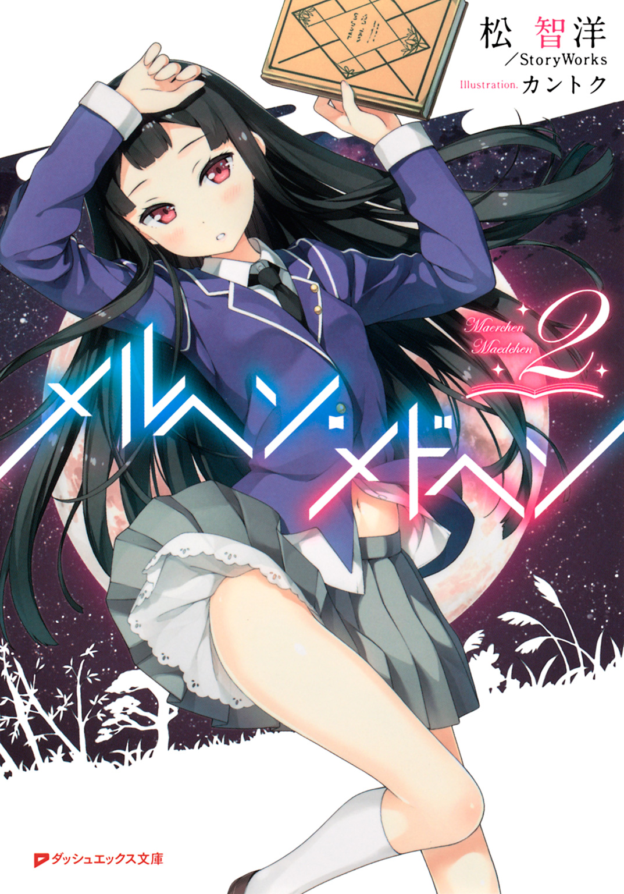
この本は縦書きでレイアウトされています。
また、ご覧になる機種により、表示の差が認められることがあります。
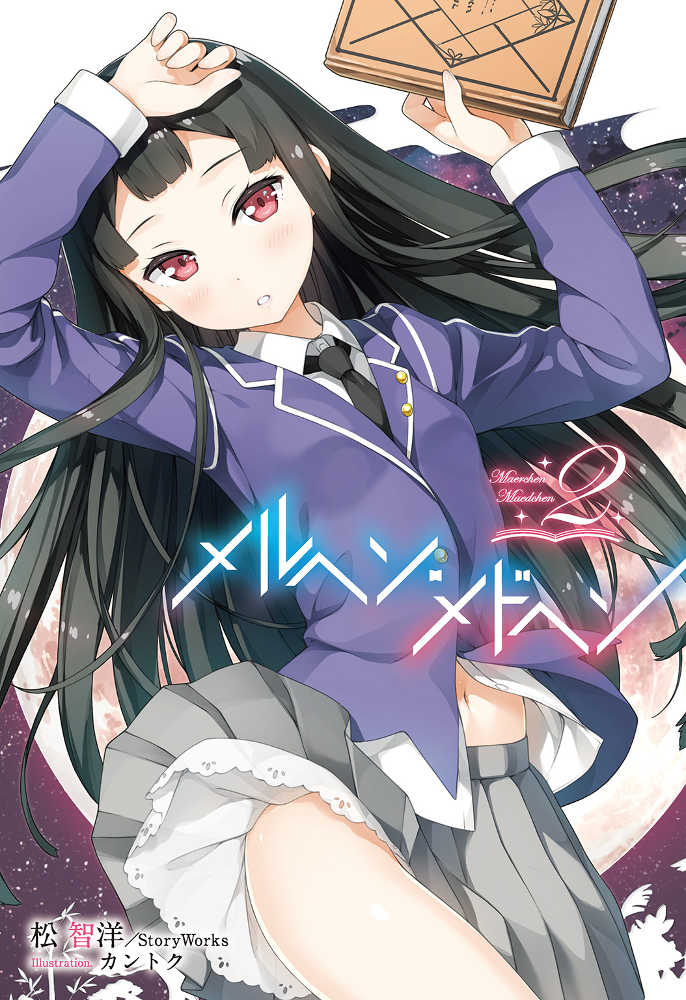
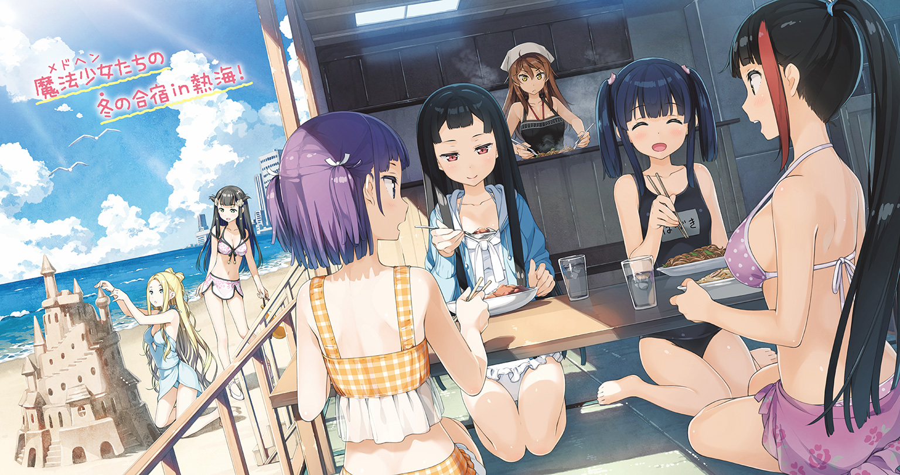
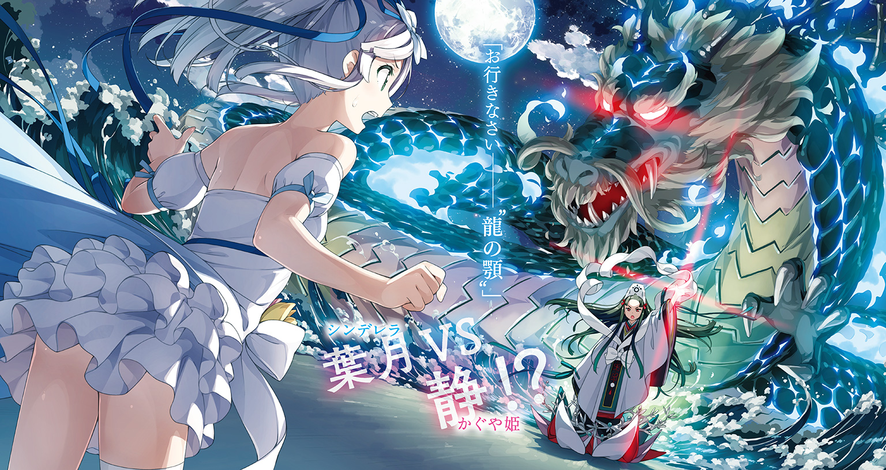
 ダッシュエックス文庫DIGITAL
ダッシュエックス文庫DIGITAL
メルヘン・メドヘン２
松 智洋／StoryWorks
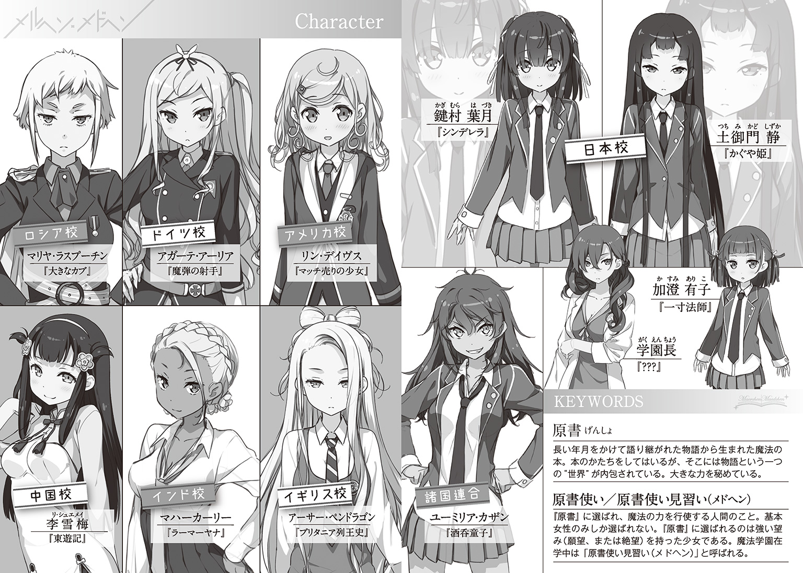
序章
「もう一度、わたくしと戦うおつもりですか」
静ちゃんは冷たい口調で私に言った。
「何度でも戦うよ。だって、逃げないって決めたから」
私も彼女に負けないくらいの意志を込めて返した。
今なら分かる。静ちゃんは〝戦う人〟だ。
私のように、状況に流されてここまで来てしまった人間とは違う。
最初から自分の意思でそこにいる。必要なら友達だろうと本気で戦う。
私はそんな彼女を相手に最後まで信念を貫けるだろうか。正直なところ自信がない。
でも、やらなきゃ、いけないんだ。
「疾く、その力を我が身に宿したまえ......『かぐや姫』！」
「力を貸して――私の『シンデレラ』！」
熱くたぎる海で二つの想いがぶつかった。
第一章 短いようで長い別れ
「お別れ、ですわね」
彼女は大きな旅行カバンを地面に置いて振り返ると、私にそう告げた。
いくつもの扉が並ぶホールには、私たち以外にも大勢の子たちが集まっている。
同じ学舎に集まり同じ制服に身を包んだ少女たちだけど、今日だけは大きく二つに分けられている。すなわち――見送る側と見送られる側だ。
今、ここは、互いにサヨナラを告げる場所だった。
私と静ちゃんもまた他の子たちと同様に、一本の線でお互いの立場が区切られている。
――嫌だ。そんなの。
そう思った途端に気持ちが言葉になって溢れてくる。
「どうしても、行っちゃうの？」
「仕方ありませんわ。土御門家の宿命からは逃れられないのです」
そう言うと、彼女は困ったように視線を彷徨わせる。長い黒髪が儚げに揺れた。
分かっている。彼女は土御門家のお嬢様。私なんかとは住む世界が違うのだ。宿命という言葉が決して大げさではないことを、私はこの数カ月で身に染みて理解していた。
それに、私自身にも彼女と同じく定められた役目があった。
「では、葉月さん――」
「静ちゃん！」
彼女の言葉を遮って私は叫んだ。
「必ず......生きて帰ってきてね」
「ええ、必ず」
静ちゃんは真っ直ぐに私の目を見て言った。それだけで充分だった。
約束さえあれば私も耐えられる。これから始まる長い長い空白の時間に――
「いや、盛り上がりすぎ」
唐突に、そんなツッコミが入った。
「ていうか、単に実家に帰るだけだし」
「だ、だめですよ、せっかくいい雰囲気なんですからっ」
眠そうな目を不機嫌そうに細める加澄さんを佐渡原さんが慌てて止める。
「知らない。ウザい」
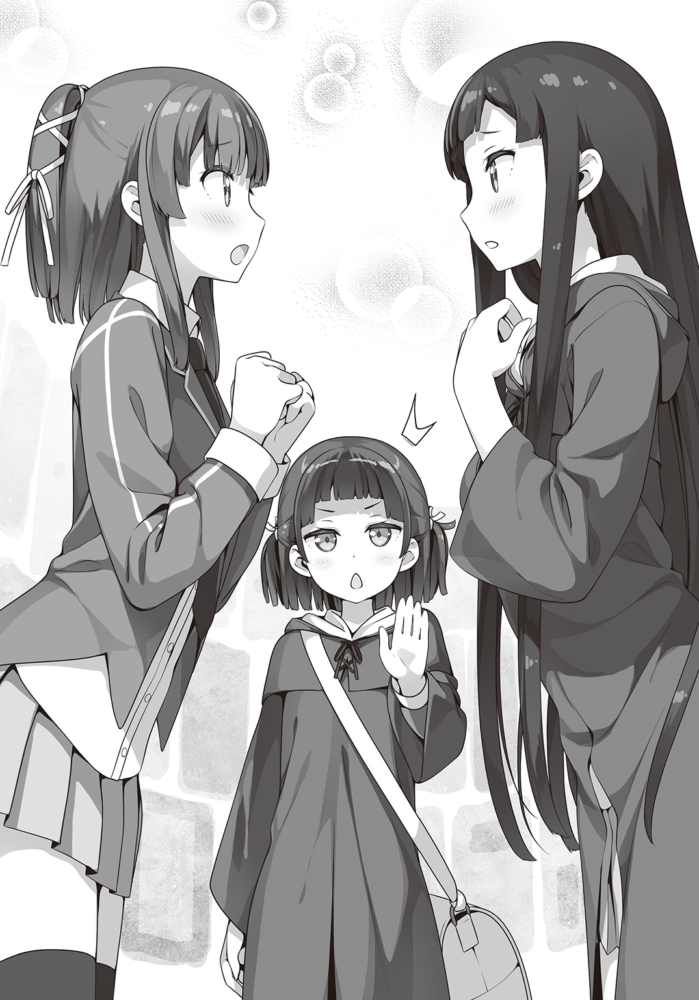
「か、加澄さん！」
そう、彼女の言う通りだった。
つまりどういうことかと言うと。
このクズノハ女子魔法学園にも冬休みがやってきたのだ。
先ほど、ここには二種類の人間がいると言ったけど、実はもう一つ別のかたちで二種類に分けることができる。それは、補習を受ける者と受けない者だ。
私、鍵村葉月は恥ずかしながら補習を受ける側なのである。
待って待って、言い訳をさせて！
そりゃあ私はあまり脳みその出来がいい方じゃないけれど、落第点を取らないくらいにはやってきた。だけどそれは普通の学校での話だ。
この冬が終わると、私は正式にクズノハ女子魔法学園に中途編入することになっている。
英語、数学、国語なんかに、さらに『魔法』という教科が新たに加わるのだ。
その『魔法』だって正確には『魔術』と『魔導』に分かれていたり、歴史の教科書には今まで知らなかった魔法使いのことが書き加えられて厚さも二倍になっている。
冬の間に補習を受けて少しでもみんなに追いつかなければ、一緒に授業を受けることもできないのだからやらざるを得ない。ううん、何がなんでもやるしかない。
そうは言っても、だ。
せっかくできた友達と冬休みを過ごせないというのは、読みかけの小説を途中で取りあげられるようなものだ。
本来であれば、年越しの瞬間を電話越しにカウントダウンしてみたり、一緒に初詣に行ったり、お正月映画を観に行ったり、お年玉を握りしめて初売りセールに並んだり、そういうお正月イベントが目白押し（のはず）だった。
それが現実はどうだ。静ちゃんたちは実家に帰省し、私は補習と宿題の山との戦いだ。
「皆さん静粛に。これよりゲートを繫ぎます。それぞれの扉の前に並んでください」
そうやって私が内心で溜息をついていると、白銀先生のハキハキとしたよく通る声がホールの中に響き渡った。
途端にさっきまで年相応にかしましく騒いでいた女の子たちがビシッと背筋を伸ばして列を作り始める。みんな白銀先生は怖いらしい。
白銀先生が中央にある操作盤をいじると、いつもより派手目な光が放たれて正面に大きな扉がいくつも下りてくる。
思えば、この『扉の間』を自分以外が利用しているのを初めて見る。
クズノハ女子魔法学園は基本的に全寮制で、日本全国から集まった魔法使いの子供たちが共同生活をおくっている。本来であれば私も寮に入らなければいけないのだけど、私は魔法使いの世界に慣れていないということで、特例として自宅から通うことを認めてもらった。
魔法使いの子供たちが暮らす寮なんて言われて、以前の私だったら四〇秒で支度して引っ越してきていただろう。でも、今は違う。
冴子さんと美沙さん――私には新しい家族がいるから。
本の外にある世界ともきちんと向き合っていきたい。ちょっと欲張りすぎかもだけど。
「なんか、いつもと違って大きいね」
「一度に大勢が通り抜けられるようになっているのです。それぞれが、日本の交通の要衝と繫がっています」
関東は東京駅だったり、関西は晴明神社というところに繫がっているらしい。
「へえ、ぜんぶ図書館ってわけじゃないんだ」
「扉を作れるのは自然な魔力が集まる場所でなければならないのです。ですので、どうしても寺社仏閣などが多くなりますね」
「なるほどぉ......って、じゃあなんで東京駅が？」
「東京は新しい街ですから」
新しいと言われて、なんとなくピンとこなかった。
確かに静ちゃんの実家がある京都からしたら新しいと言えなくもないだろうけど......。
「東京は〝霊脈〟と言われる大地の下を流れる魔力を利用することを前提に造られた都市なのです。中でも大きな駅や国の重要な施設は、そのほとんどが魔力の集まり易い場所に建てられています」
「へーっ！」
すごい！ まさか、自分の住んでるこの街が魔法都市だったとは思いも寄らなかった。
ということは、この東京にピンチが訪れた時なんかは巨大魔法円が起動して学園ごと空に浮かんだりするのだろうか？
もしくは巨大バリアーが街を覆い恐ろしい攻撃から住民たちを守ったりするのかもしれない。そう考えると都庁の先端部が二叉に分かれているのにもなにやら意味深なものを感じずにはいられない。もしや、あの二つの塔の中央には――
「葉月さん、葉月さん！」
「はうあっ!? え？ な、なに？」
気づけば静ちゃんが困った顔で私を見ていた。
「もう、ところ構わずボーッとしないでくださいまし」
「どうせ、またいやらしいこと考えてた」
「考えてないよ!? ていうか〝また〟ってどういうこと!?」
まぁ、ちょっと都庁が二つに割れて中から古代の超兵器が現れたりはしたけど。
「やっぱり、鍵村さんはおもしろい方ですね」
加澄さんには呆れられ、佐渡原さんにはクスクスと笑われてしまった。
出会ってまだ数ヵ月だけど、私の妄想癖というか空想癖はすっかりみんなにバレてしまっている。なぜだ。
「そろそろ、わたくしたちも並びましょうか」
と言いながら静ちゃんが荷物を持ちあげる。
「ええっ!? も、もう行っちゃうの」
「あの、葉月さん？ そのように袖を引っ張られては......」
「もうちょっと！ もうちょっとだけ！ ね？」
静ちゃんはちょっと困ったように笑うと、そっと私の肩に手を置く。
「すぐに帰ってきますわ」
「ほんとに......？」
「挨拶を済ませたらすぐにお暇するつもりです。年が明けたらすぐにヘクセンナハトがはじまりますもの、悠長に休んでいる場合ではありませんわ。一刻も早く葉月さんを鍛えなければ」
「う、うん、そうだよね......でも、そこまで焦って帰らなくても......」
ここ数日、静ちゃんの厳しい特訓を受けている身としては若干複雑になってきた。
「あ、そうだ。静ちゃん、ら、ＬＩＮＥ交換しよ！」
「え......ら、らいんですか......」
「う、うん！ お休みの間もお話とか、したいし......ダメ、かな？」
「いえ、ダメなんてことはもちろんありませんが......そ、そう！ あいにくと携帯電話をカバンの中にしまったままでして！」
「そうなの？ じゃあ、私のＩＤ書いておくねっ」
「は、はい......」
ルーズリーフの端っこにＩＤを書き込むと、そこを小さく手でちぎって静ちゃんに手渡した。
「土御門さん、そろそろ行かないと、白銀先生がすごい顔でこちらを睨んでます！」
「静、早く。駅でお弁当買う時間がなくなる」
「ええ、すぐに参りますわ」
二人に急かされるようにして、静ちゃんが私から離れていく。
「それでは葉月さん、いってきます」
「うん。いってらっしゃい」
名残惜しい気持ちをぐっと飲み込んで、私は静ちゃんたちを見送った。
「むふふ～♪ ついに静ちゃんとＬＩＮＥ交換しちゃったぁ」
ホールでの悲しい別れから一時間としないうちに、今度は魔法学園の廊下をスキップする私がいた。
ＬＩＮＥのＩＤを交換しただけでそこまで浮かれるほどのことか？ と、思われるかもしれないが、ぼっち生活十五年の私にとっては初の快挙である。
これからは好きな時にお話ができる。かわいいスタンプでやり取りもするし、画像や動画を送ったりもするだろう。じっくりお話ししたい時には通話だってできるのだ。
お友達としての段階を順調にステップアップしているのは間違いない。これが浮かれずにいられようか。
とはいえ、今が冬休み中でなかったら私ももうちょっと自重しているだろう。
普段は、どこからか爆発音が聞こえてきたり、虹色の光が窓から迸り、ホウキに跨がった女の子が空から急降下してきたりと、とっても賑やかな学園なんだけど、こうしてお休みに入ってしまえばそれらも見られない。ちょっぴり寂しくもあり、でも今日だけはこのお城のような校舎をひとり占めしているようで嬉しくもある。
こういう時は、とっても空想がはかどる。
今ならたとえば、お城に暮らすお姫様の気分だ。
お転婆なお姫様は、口うるさい教育係から逃げているうちにお城に隠された大いなる秘密を知ることになる。満月の夜にしか現れない魔法の小部屋とか未来を見せる姿見とか地下に封印された巨大なドラゴンとか。
狭い部屋の中に窮屈そうに閉じ込められていたドラゴンさんは、お姫様に出会うとその悲しくも呪われた人生について語る。心優しいお姫様がドラゴンさんのためにこぼした涙が呪いを解き、鱗に覆われた身体はみるみるうちに小さくなり、一人の若者へと姿を変える。彼こそは悪い魔法使いに呪いをかけられた異国の王子様だったのだ。
恋に落ちた王子様とお姫様は結婚するのだけど、王子様にはドラゴンだった頃の癖でたまーに口から火を噴いてしまう。その度に髪の毛がアフロヘアになってしまうことに嫌気が差したお姫様はドラゴンブレスを避けるためにボクシングを習うことになり、やがて王国初の三階級制覇を成し遂げるのでした。めでたしめでたし――
「いやいやいや！ それなんか違うし！」
と、私が思わず誰もいない空間にひとりツッコミを入れた時だった。
〝ドオオオオオン！〟
突然、ドラゴンブレスかと思うような勢いで目の前の教室の扉が爆発した。
「な、ななな、なーっ!?」
それこそドラゴンのブレスを避けるつもりでバックステップをしていなかったら、私がアフロヘアになっていたかもしれない。
その時、瓦礫と化した扉の中から意外にも元気そうな声が聞こえてくる。
「あたたた......死ぬかと思ったっす」
シャルルさんだった。
「モリー！ マジで撃つとかありえねーっすよ！」
シャルルさんが怒鳴ると、教室の中からもう一人現れる。
赤毛を短く刈り揃えた少年のような雰囲気のシャルルさんとは対照的に、どこか暗い雰囲気の女の子――モリーさんは、姿を見せるなりいきなり銃を向けた。
「おわっ！ ちょっ！ マジで!?」
それに驚いたシャルルさんは、慌てて右手を前に突き出した。すぐさま彼女の手の中に一冊の『本』が現れた。
「いくっすよ！ 『長靴を履いた猫』！」
シャルルさんがタイトルを読み上げると、『本』は光の粒子になって彼女の身体を覆った。
次の瞬間には、シャルルさんは真っ赤な羽根帽子に同じく赤の短衣と革のブーツという格好に変わっていた。
そんなシャルルさんに向かって、モリーさんは躊躇いもなく引き金を引いた。
止める間もなかった。
黒い銃身から放たれた無数の弾丸がシャルルさんの細い身体にいくつも穴を空ける。
肉を裂き骨を砕き血しぶきを飛び散らせて彼女は絶命する。
一瞬、そんなことを想像した私だったけど、現実は違っていた。
「あだだだだだだっ!?」
弾丸はシャルルさんの身体を貫きはしなかった。ただ、痛そうにその場を飛び跳ねている。
まるでオモチャの鉄砲で撃たれたみたいだけど、外れた弾は窓ガラスを割り、床に穴を空けているのだから普通なら大変なことになっているだろう。
シャルルさんの身体を守っているのは『ブーフ・ヒュレ』という魔法だった。
先ほど、『本』が真っ赤な衣装に変わったのがそれだ。
「なにするんすかモリー!? ブーフ・ヒュレが間に合ったからいいものの、危うく死ぬとこだったっす！」
「うるさい。バカ。しね」
そう言うと、モリーさんはさらに撃つ。撃つ。撃つ。
「いだだだだだだっ！ やめっ、やめっ！ マジで痛い！」
どうやらモリーさんは大変ご立腹らしい。しかもちょっぴり涙目だ。
この調子だとシャルルさんはともかく廊下が穴だらけになってしまう。場合によっては私も。なので、私は銃声に負けないくらい声を振り絞って叫んだ。
「ちょ、モリーさん、すとっぷ！ すとーっぷ！」
「......葉月。なにしてる」
「それは、こっちのセリフだよ！ なんで、シャルルさんを撃ってるの!? ていうか学校で銃を撃っちゃダメだよ！ いや、学校じゃなくてもダメだけど......そもそも人を撃っちゃダメだし銃刀法とかそういうのが......あれ？ 魔法使いには日本の法律とかどうなってるんだろ？」
止めに入ってはみたものの、なんだかよく分からなくなってきてしまった。
そうやって私が首を捻っていると、シャルルさんがいきなり私を盾にした。
「よく来てくれたっす！ この分からず屋にガツンと言ってやってくれっす！」
「ええええええええっ!?」
「説得っす！ 二人で心を込めて説得すればモリーも分かってくれるっす！ さあ！」
「二人でって、私、なんでモリーさんが怒ってるかも分からないんですけど！ ていうか、なんで羽交い締めにするんですか！ ちょっとモリーさんも銃を向けないでええええ！」
「ごちゃごちゃうるさいっすね。いいから一発かましてモリーの怒りを鎮めるっすよ！ 例のあの魔法で！」
「そ、そんなの急に言われてもむーりーっ！」
二人のケンカをなんとか収めたのだけど、教室も廊下も大変な惨状だった。
シャルルさんはあの調子でのらりくらり逃げ回るもんだから、怒ったモリーさんが魔法で大砲を喚び出した。さすがにあの時はもうダメかと思った。
騒ぎを聞きつけてやってきた学園長さんが止めなければ、校舎ごと木っ端微塵だった。
「補習から逃げる生徒はいたが、教室ごと破壊した生徒は君たちが初めてだ」
学園長さんは正座した私たちを見おろす。おかしい。なぜ私まで......。
「壊したのはモリーっす」
「シャルルが逃げるのが悪い」
「君たちの言い訳は聞いていない」
学園長はぴしゃりと言い放つ。
「ヘクセンナハトの時期はどうにも生徒たちが浮つきがちなのだが、今年は開催地だけあってか騒ぎの規模も回数も例年以上だ」
年齢不詳で正体不明で神出鬼没なミステリアス美女は、珍しく疲れきったような溜息をついた。
予算がどうとか報告書がどうとかぶつぶつと呟いているところを見ると、学園長というのは気苦労の絶えない仕事みたいだ。
「それで、いったいどういった理由で私の大事な学園が破壊されたのかね？」
そこはかとなく言葉に怒りを滲ませながら、学園長が問いただす。
「シャルルが、わたしの人形を壊した」
「汚れてたから洗ってやろうと思っただけっす」
「噓つき」
モリーさんが大事そうに胸に抱えているネズミのヌイグルミは、耳のところがほつれて取れかかっている。
「カザンがくれたの......大事なの」
二人がこれまでどんな人生を歩んできて、そこから助け出してくれたカザンさんのことをどれだけ慕っているのか、私はかつて魔法で二人の心に触れたことがあるのでよく知っている。
「あの......それ、私が直そうか？」
「......できるの？」
「うん、任せて。私、お裁縫は得意なの」
モリーさんはおずおずとネズミのヌイグルミを私に差し出す。
ずいぶん古くてボロボロだった。耳以外もちょっとだけ補強しておいた方がいいだろう。
「よかろう。補習は午後からとする。それまでに人形を直してやりたまえ」
「ぼく、裁縫道具借りてくるっす！」
「わ、わたしも......」
学園長さんの言葉を聞いて、シャルルさんとモリーさんが駆けだしていった。よかった。少しは仲直りできたいみたい。
「待ちたまえ」
二人の後を追いかけようと立ち上がった私を学園長さんが呼び止める。
「二人の争いに巻き込まれた時、なぜブーフ・ヒュレを使わなかった」
「そ、それは......」
ブーフ・ヒュレ。それは、さっきシャルルさんがやった〝変身〟のことだ。
そもそも、この学園で教えている魔法は呪文と共に杖を一振りするようなものとは違う。
この世界に存在する数多の物語から生まれる『原書』と契約し、その力を使うのが魔法使いであり正しくは『原書使い』と呼ばれる。
長く読み継がれ、大勢の人たちに影響を与えた物語ほど大きな力を持つため、自然と『原書』になる物語は童話や寓話なんかが多くなる。
たとえばシャルルさんは『長靴を履いた猫』で、モリーさんは『ハーメルンの笛吹き』だ。
私の『原書』は『シンデレラ』。......正確にはもう『シンデレラ』ではないんだけど、詳しく説明するとそれこそ一つの物語を話す必要があるのでまた今度。
そして、『原書』の力を引き出して身に纏う魔法が『ブーフ・ヒュレ』だ。
普通は『原書』と契約すればすぐにできるようになるのだけど、私はなぜかまだ上手くつかいこなせないでいた。
「やはり、まだ上手くコントロールできないか」
「はい......すみません」
「謝ることはない。......と言いたいところだが、『ヘクセンナハト』に参加することが決まっている君には切実な問題だろう。なんとか、この冬休みで使いこなせるようにしたまえ。むろん、私も協力は惜しまない」
「は、はい......がんばりますっ」
「うむ、その意気だ。午後には教室も直っているだろう。ブラウニーどもには高い契約金を払っているのだから、こういう時こそしっかり働いてもらわねば」
学園長さんは悪だくみでもするようにニヤリと笑うのだった。
中庭のベンチに座ってヌイグルミを直しはじめた。
飛び出した中綿を戻して形を整えて、後は縫い付けるだけだ。ちまちまと針をたぐって耳を縫い付けていく。
「上手いもんすねー。ちょっと意外っす」
「えへへ......家事はけっこう得意なんだ」
小さい頃にお母さんが亡くなって、ずっと研究一筋なお父さんと二人暮らしだった。
だから家事全般は私の仕事だったのだ。お父さんが再婚して、東京で暮らすようになってからは遠ざかっていたけど最近ではまた家事をするようになっていた。
というのも、実は冴子さんも美沙さんも家事は一切できないという人だったからだ。
食事は外食かコンビニですませ、それ以外の家事は週に一回のハウスキーパーさんにすべてを委ねていたらしい。私が一緒に住むことになってからはずいぶん無理をしていたようだ。
「......よし、できた！」
元通りになったヌイグルミをモリーさんに渡す。
「......ありがとう」
少し照れた様子でモリーさんがお礼を言う。
「あーあ、こりゃ懐かれちまったっすね」
「へ？ 懐かれる？」
「モリーは面倒くさいっすよ～。普段は人見知りなくせに、いっぺん気に入った相手にはべったりっすから。それはもうストーカーのごとき粘着っぷりで」
「う......」
そう言われると、ヌイグルミ越しの視線が妙に痛い。
私が思わずたじろいでいると、
「テメェら、やっと見つけたぞ！」
カザンさんが、ものすごい剣幕でやってきた。と思ったら、そのままの勢いでゴツンとシャルルさんの頭にゲンコツを落とした。
「あいたーっ!? なにするんすか姐さん!?」
「うるせぇ！ オマエらまた学校壊しただろう!?」
「壊したのはモリーっすよ！」
「言い訳すんな！」
「あだぁっ!?」
またゴツン。
うわ、痛そう......。
カザンさんは今度はモリーさんに向き直る。
「モリー、ケンカするなとは言わねぇ。だけど、カッとなって世話になった人にケガさせたり迷惑かけたりするのはダメだ。わかるな？」
「うん......ごめん、なさい」
「いいか、アタシらは日本校と学園長に世話になってるんだ。一宿一飯どころじゃねぇ恩義があるんだからそいつを仇で返すようなことはするんじゃねぇぞ。校舎を壊すなんてもっての外だ」
「姐さんだって、前に露天風呂ぶっ壊したくせに......」
「ああん？ なんか言ったか？」
「なんでもないっす！ 了解っす！」
カザンさんにギロリと睨まれたシャルルさんは、ビシッと背筋を伸ばして敬礼する。
「悪かったな、鍵村。なんか巻き込んじまったみたいでよ」
「う、ううん、平気だよ。ほら、ケガもしてないし」
カザンさんは「よかった」と呟いてホッと息をつく。
この間の戦い以来、カザンさんはずいぶんと変わった。
とげとげしさがなくなったというか、柔らかくなったというか......。
でも、なんとなく思うのだ。きっと今のカザンさんが本来の姿なんだろうって。
「まったく、おとなしく補習を受けてるかと思えば......」
疲れたようにどっかりとベンチに腰を下ろすカザンさんは、よく見れば制服ではなく、なにかの作業着のようなものを着ていた。
「カザンさん、その格好は？」
「ん？ ああ、これか。ヘクセンナハトの運営補助ってやつだ。まあ、要するにバイトだよ。いろいろこの先の計画がくるっちまったからな。ひとまず金でも貯めようかと思って」
計画がくるったというのは、私たち日本校にカザンさんたち諸国連合が負けたからだろう。
ヘクセンナハト。魔法使い同士が戦って優劣を競う大会。優勝すれば〝どんな願いでも叶う〟唯一無二の魔法が手に入るという。同時にそれはこの世界を〝シミ〟という恐ろしい存在から守るための儀式なのだそうだ。
正直なところ、私はいまだ実感が湧かないでいる。
自分が『原書』に選ばれて魔法使いになったこと、そしてその魔法使い同士で戦わなければいけないこと。
一つだけ分かっていることがあるとすれば、私がカザンさんの夢を邪魔したということだ。
カザンさんたち諸国連合は帰る国を失った魔法使いたちの集まりだった。このヘクセンナハトに優勝して、自分たちの居場所を手に入れようとしていた。だけど......
「またそんな顔してやがる」
「え......」
「オマエが気に病むことじゃねぇって何度も言ってるだろ。それに......今は、これで良かったんだって思ってる。〝どんな願いでも叶う魔法〟なんて、そんな胡散臭いもんに頼るのは、本来ならアタシの性分じゃないからな」
そう言って、カザンさんはニカッと笑う。
「そうっすよねー。ちょー噓くさいっすよね」
「『長靴を履いた猫』と契約してるオマエが噓くさいとかどんな冗談だ」
シャルルさんが契約した原書『長靴を履いた猫』は一匹の猫が主人のために噓でのし上がっていく話だ。『原書』は、その内容に共感するような人間を選んで契約をするらしく、シャルルさんもどうでもいいような噓やホラ話をして、しょっちゅうカザンさんに叱られている。
「あの......〝どんな願いでも叶う魔法〟って、どういうものなんですか？」
「さあな。知らねぇ」
「え......でも、去年もその前の年もヘクセンナハトはあったんですよね？ その時に優勝した人はどんな願いを叶えたんですか？」
「それもわからねぇ。ぜんぶ秘密にされてるからな」
ヘクセンナハトの優勝者に与えられるという〝どんな願いでも叶う魔法〟――
魔法使いになってから、私は好奇心からいろんな人にこのことについて聞いてみたけど、不思議なことに誰一人として詳しいことは知らなかった。
知っているとすれば、その魔法を手に入れた本人だけど、身近にいるだろうか......
「オマエ......いや、なんでもねぇ。そういうことは優勝して考えろ」
「そ、そうですよね。さすがに気が早いですよね」
こういうのを捕らぬ狸の皮算用というのだ。狸の皮剝いじゃうのかわいそう。
「さてと、アタシはそろそろ現場に戻らねぇとな。鍵村、悪いがそいつらがバカやらねぇように見張っといてくれ」
「ふえあっ!? わ、私が!?」
「なんかモリーも懐いてるみてぇだし。ちょうどいいだろ」
「はづき、お裁縫教えて」
いつの間にかぴったりと横にくっついているモリーさんが期待に満ちた目で私を見上げてくる。いやいや、待って。ちょっと待って。私には荷が重すぎるんですけど!?
すると、私の肩をポンと叩いてシャルルさんが言う。
「しっかり頼むっすよ、姐さん二号」
「姐さん二号ってなにーっ!?」
初日から一筋縄でいかない感じの補習が終わり、もとの世界に帰るべく『扉の間』へとやってきていた。
昼間とは打って変わって『扉の間』と呼ばれる大きなホールには私だけしかいない。
ついこの間まではいつも必ず静ちゃんが見送ってくれていた。
この『扉の間』を使うには、真ん中にある操作盤を使ってゲートを繫げなければいけなくて、静ちゃんが操作している間、ちょっとした世間話をよくしていた。
その日の練習のことや魔法のことがほとんどだけど、時折りお互いのことについて話すこともあり、私にはとても楽しみな時間だった。
「でも、静ちゃんはいない......」
静寂に耐えきれなくなって、思わず呟いてみる。
はっきり言って逆効果だった。
なんだかこの静寂に満ちた世界にたった一人で取り残されたような気分になってきた。
「だめだめっ、初日から落ち込んでてどうするのっ。しっかりするのよ鍵村葉月！」
ダウナーになりかけていた気持ちに活を入れようと、私はカバンの中から一枚の便せんを取り出した。
扉の間の操作盤の使い方を静ちゃんが書き残してくれたものだ。
今どき、便せんに手書きというのが古風な静ちゃんらしくて微笑ましい。
でも、一番嬉しいのは最後の一文だ。
〝葉月さんも、お身体に気をつけて。よいお年を〟
たった一行、言ってしまえばただの時節の挨拶。
だけど初めて静ちゃんからもらったお手紙だった。
「むふ......むふふふ......」
おっと、いけないいけない。眺めていると、思わず頰が緩んでしまう。
ちょっとだけ気を引き締め直すと、操作盤に向かった。
「ただいまー」
自宅に戻ると、慌ただしく部屋の中を右往左往する冴子さんと遭遇した。
「ああ、おかえりなさい葉月さん。ちょうど良かったわ、私のスカーフ知らないかしら？ エルメスの。先週末に使った後どこにしまったのかわからなくて......」
キョロキョロと落ち着きない様子の冴子さんは、ブラウスのボタンもきちんと上まで留めていないような状態だった。
「それなら、シワになるといけないから他のと分けてタンスの一番上に......」
「そうだったわ！ ありがとう！」
そう言うと、冴子さんは大急ぎで部屋に駆けていった。
なにをそんなに慌てているのかなと首を傾げながらリビングに向かうと、冴子さんとは反対に気の抜けた格好でスマホをいじっている美沙さんがいた。
格好は正反対だけど、我が家の美女たちはよく似ている。一方で私はというと美女にはほど遠い。スタイル抜群の二人と違って寸胴だし、胸は小さいし、足の長さに至っては絶望的なまでの格差を目の当たりにすることになる。
美女と野獣とは言わないまでも、白鳥の中に紛れ込んだアヒルの子。それが私だ。
それも当然で、私にとって二人は継母と継姉にあたる。だからと言って、いじめられていたり、ないがしろにされているわけではないということを言っておかなければならない。
当初はすれ違いもあったけれど、今ではそれなりにいい関係を築き始めている。
「おかえり、葉月。遅かったじゃん」
スマホに熱中していた美沙さんが、遅れて私に気づく。
「う、うん。いろいろあって、補習が午後にずれ込んじゃって。......それより、どうしたの？」
部屋を出たり入ったりしてる冴子さんを見ながら尋ねる。
「なんか、キャンセルが出て、飛行機のチケットが取れたから、これからあっちに行くんだって」
「へぇ......って、これから？」
あっち、というのは単身赴任中のお父さんがいるドイツのことだ。
年末年始に日本に帰ってくる予定だったのが、急な用事で帰れなくなったと連絡が来たのが昨夜の出来事。電話越しに壮絶な夫婦喧嘩を目の当たりにしてしまった。
再婚した直後に別居せざるを得なくなり、やっと会えると思ったらそれもナシになったのだから冴子さんが怒るのも無理はないと思う。
一年と経たずに離婚の危機かと内心ちょっとドキドキしていたのだけど、一夜明けてみればまさかの展開だった。
「本当に、あなたたちは来ないの？ 飛行機のチケットならなんとか取れるわよ？」
「アタシはパス。年末年始は忙しいから」
「わ、私も。補習があるし......」
「そう......じゃあ、私ひとりで行ってくるけど......」
なにやらソワソワしている冴子さん。もしかして、久しぶりにお父さんと会うのがよっぽど嬉しいのだろうか。
「そうだ、あの人になにか伝えることある？」
「お年玉よろしくー」
「あ、私はなにか面白い本があったら送ってほしいかな」
「あなたたちねぇ......」
呆れたように溜息をつく冴子さん。
「アタシたちのことは気にしないで、あっちでデートでもなんでもしてくればいいよ。しばらくほったらかしにされてたんだし、高いアクセでもねだってくれば？」
「大人をからかうんじゃないの。......って、大変、もう出ないと。それじゃあ二人とも、あとはよろしくね」
そう言うと、冴子さんはお気に入りのスカーフを揺らして出かけていった。
「ママってば浮かれちゃって。よっぽど嬉しいんだ。まあ、恋人と二人きりで海外だもんねー」
いいなー、うらやましいなー、なんて言いながらソファの上で足をバタバタさせる美沙さん。
「美沙さんは、大晦日は出かけるの？」
「アタシは友達と一緒にカウントダウンイベント。アンタこそどうすんの？」
「私は......家で本を読むかなぁ」
「アンタねぇ、またそれ？ てかさ、例のカレはどうなったのよ。一緒に初詣でも行けばいいじゃない」
「だから、カレじゃないってば。それに、補習もあるし......」
「冬休みもなしなんて、手品だかなんだかの学校って案外厳しいのねー」
美沙さんは私と静ちゃんのことも、それから魔法学園のことも、この通りだいぶ勘違いしていた。まあ、説明してもそうそう信じられないよね。
冴子さんもいまだに半信半疑というか、常識が覆されて混乱しているみたいだった。
それでも、私の話を真剣に聞いてくれたし、わざわざ時間を作って魔法学園まで一緒に来てくれた。そうして学園長さんと話した上で、私が本気で選んだ道ならと納得してくれた。おまけにお父さんを電話で説得もしてくれた。本当に、すごく嬉しかった。
だから、たぶんだけど、私たちは家族として上手くやっていけると思うのだ。
「つーか、ずっと気になってたんだけど」
美沙さんが眉間にシワを寄せて、私に顔を近づけてくる。
「え、な、なあに？」
「アンタいつの間にか呼び方がもとに戻ってるし。おねえちゃんって呼びなさいよ」
「ええっ!?」
急にそんなことを言われて、思わず後ずさる。
「なによ、この間は自分から呼んだじゃない」
「あ、あの時は、勢いというか......その......」
自分でもどうしてか分からない。思い返してみるとめちゃくちゃ恥ずかしい。
なのに、美沙さんはもう一度私に「おねえちゃん」と呼べと言う。
しかもそう言っている顔は実に楽しそうだ！
「ほらほら、早く～♪」
「う、うう......急に言われても無理ぃ！」
「あ、こら！ 逃がさないわよっ」
運動神経で美沙さんに敵うはずもなく、私はあっという間に取り押さえられた。
結局、その夜は「おねえちゃん」と呼ぶまで放してもらえず、私は深夜遅くまで新手の羞恥プレイに身悶えするはめになった。
家族になるというのもなかなか大変だ。
＊ ＊ ＊
東京を出発して二時間、京都駅のホームに降り立った静たちは落ち着く暇もなく迎えの車に押し込められ、福井にある土御門の本家へと向かっていた。
「元旦までは自宅で過ごせるとうかがっていたのですが」
あまりに強引な出迎えにさすがの静もムッとしながら運転手に問いかける。
「申し訳ありません、お嬢様。本家の方々がどうしてもとおっしゃるもので」
言葉通り申し訳なさそうに運転手が告げる。
静は小さく溜息をついて後部座席に身体を預けた。
長年仕えてくれている運転手を困らせるのも気が引けた。
すると有子が、助手席から顔を覗かせて言った。
「嫌なら断ればいいのに。静が当主なんだし」
「当主だから余計に断れないでしょう」
亡くなった母の後を継いだのが三年前のこと。それからすぐにクズノハ女子魔法学園に入学したため、本家にはずいぶんと長く顔を見せていなかった。
かつて朝廷に仕えていた土御門家は今なお京都の地を守る役目を自認し、当主は御所近くに居を構えるのが習わしだった。それとは別に土御門一族の多くは戦国時代に北の福井へと移り住んでいる。今では土御門本家と言えば、京都よりもこちらということになっている。
静自身も幼い頃に福井のお屋敷で暮らしていた時期がある。とはいえ、静にとってあまり居心地のよい場所でなかった。
「ともかく、本家の方々にご挨拶だけすませてすぐにお暇しましょう」
「そう簡単にいかないと思うけど......」
静の言葉に有子は溜息で返した。
車は高速を下りて山間の道をかき分けるようにして奥へと進んでいった。
不意に視界が開けたように目の前には周りを山に囲まれたのどかな田園風景が広がった。
年末ということもあって、いつもより人通りは多いようで、中には静たちの車を見つけると道の端に寄ってわざわざ頭を垂れる者もいた。そういう者たちは古くからこの土地に住んでいるか、もしくは土御門家に縁のある魔法使いの家系だろう。
やがて、車は田園地帯の真ん中にそびえ立つように鎮座する四足門の前で停車した。
待ち構えていた使用人がドアを開け、静は車を降りる。ここからは歩きだ。
「「おかえりなさいませご当主さま！」」
門をくぐった途端、出迎えの者たちが一斉に頭を垂れて挨拶した。
「大げさな出迎えは必要ないと以前に申し上げましたのに......」
「そうはまいりません。静様は我々の希望の星でございます」
静の溜息まじりの呟きに答えたのは背の高い女性だった。黒いスーツにパンツルック、おまけに黒いグローブまでしている。要人に付き添うセキュリティサービスのような出で立ちだ。
「お久しぶりです朋子さん。こちらに戻っていらしたのですね」
「は。昨年はご挨拶に伺えませんでしたので、今年こそはと思いはせ参じました。それはともかく......有子、どこへ行くつもり？」
一回りは年下の主に対して恭しく礼をした妙齢の美女は、急に語気を強めてこっそり逃げだそうとしていた有子を呼び止めた。
「......久しぶり、お姉ちゃん」
有子は顔を引きつらせながら、いま気づいたとばかりに挨拶を返した。
「今年は補習にならず帰ってこられたようね」
「そう、わたしもやる時はやる」
「何を自慢げに言ってるの！ 補習なんて引っかからないのが当然です！ だいたいあなたは静様が学業に専念できるよう身の回りのお世話をするのが役目でしょう!? なのに、聞けばむしろ静様のお手を煩わせてばかり！ いい？ 『原書』に選ばれるということがいかに恵まれているか、私が学生だった頃は――」
「話、長過ぎ。だから旦那に逃げられる......」
「っ!?」
妹の言葉に朋子の表情が一瞬で凍りついた。
それは有子の実家のみならず、土御門に仕える分家たちの中でも触れてはいけない話題だった。
傍流とはいえ魔法使いの家に生まれ、生来の生真面目な性格ゆえになかなか良縁に恵まれず、三十路を目前にしてお見合い結婚をしたものの、相手の男は一年と経たずに外に恋人を作って出て行ってしまったというのは分家界隈では有名な話だった。
もちろん、静も噂は耳にしている。それどころか結婚を機に退職する前、彼女は静の護衛兼お世話係だったのだ。結婚退職を報告する時の幸せそうな顔と、離婚後に復職を願い出た際の「これからは仕事に一生を捧げる」と言わんばかりの鬼気迫る表情の両方を目の当たりにしている静には、有子のように平気で嫌味に使うような度胸はない。
「ぶ、分家の方々がわたくしを待っているのでしょう！ さっそく顔を見せに参りましょう！」
「......は、はい。私としたことが取り乱しまして申し訳ありません......」
朋子は複雑な感情を必死に堪えているようだった。
「そうそう、ご当主様を立たせたままじゃ悪いでしょ」
「ぐっ......！」
「加澄さん！」
姉妹の確執（？）が激化する前にと、静は急いで屋敷の中へ。
取るものも取りあえずという勢いで大広間に通されると、そこで待っていたのは土御門家に連なる家々の代表たちだった。
「静様、よく、よくお戻りになられた......！」
「ささ、どうかこちらへ......！」
「え、ええ......」
言われるまま上座に腰を下ろすと、ご老人たちの期待に満ちた表情が目に入る。
「皆様......長く留守を預っていただき、ありがとうございます。まずはご報告させていただきます。この度、わたくしたち日本校はヘクセンナハト本戦へ出場する運びとなりました。これも、本家ならびに分家の皆様のご支援があってのこと。謹んでお礼を申し上げます」
そうして、静は深々とお辞儀をする。
「おお......なんとめでたい！」
「土御門の者が、かの宴に加わるのはいつ以来か！」
「お迎えが来る前に、ふたたび土御門に耳目が集まる光景が見られるとは......！」
「ありがたやありがたや......」
老人たちが我がことのように喜びを口にする。中には手を合わせて拝む者までいる。
当主とは言っても絶対君主のような権力があるわけではない。むしろ、皆の意見をまとめる役割の方が近いので静としても気を遣わざるを得ない。
「宴じゃ！ 祝賀会じゃ！」
居並ぶ老人たちのうちの一人がぷるぷる震える拳を振り上げて叫んだ。
途端に他の者たちも「そうじゃそうじゃ！」と騒ぎ始めた。
「あ、あの、皆様？ まだ、出場が決まっただけですわよ？ いくらなんでもお祝いには早すぎるのではないかと......」
早くもテンションの上がりきった老人たちには静の声はさっぱり届いていなかった。
「静様がばてれんどもに目に物見せてくださるぞ！」
「そうじゃ！ 土御門ここにあり！」
「もう勝ったも同然じゃああああっ！」
「蔵を開けろ！ 振る舞い酒じゃ！」
「餅をまけ！ ないなら現金じゃ！」
「若い頃に小豆相場で蓄えた金が火を噴くわい！」
「通帳と印鑑持ってこい！ わしとばあさんの年金も孫のためにとっておった積み立て口座もみんな今すぐ解約じゃあああ！」
「お願いですから落ち着いて！ とにかく、わたくしの話を聞いてくださいませえ！」
本家の老人たちが声をかけると、待っていましたとばかりに料理や酒が運ばれてくる。
挨拶だけしてお暇するという静の目論見はあっさりと覆され、日が落ちる頃にはさらに人が集まり、冬場にもかかわらず庭を開放して村をあげての大宴会になっていた。
「うちで作ったへしこです。どうか、どうか、静様にお食べいただければ......」
「え、ええ......ありがとう。いただきますわ」
「おお......ありがたやありがたや」
まるで生き神様でも見たかのように涙を流して拝み始める老人を前に、静はひきつったような笑顔で「美味しいです」と応えた。
普段はなかなか会えないご当主様を間近で見たいとでも思ったのか、村の人間が次から次へとやってきては、静に自慢の料理を振る舞うのだ。
最初はいくらか味わっていられたものの、しばらく経つ頃にはもうお腹もいっぱいで何を食べても同じような味にしか感じられなくなっていた。
それでも、腰の曲がったご老人に「ぜひともご当主様に......」などと言われては断れるわけがなかった。とはいえ、さすがに静も限界だった。
「申し訳ありませんが、わたくししばらく席を外します」
少しお腹を休めなければ。そう思い、脇に控えている使用人に告げて席を立った。
幸い、お酒の入った彼らはこれから始まるであろう静たち日本校の快進撃と土御門家が魔法使いたちの間でふたたび脚光を浴びることについて熱心に語り合っていて、静がいなくなったことをさほど気に留めていなかった。
「ふぅ......まいりましたわ、本当に」
宴会場から離れ、裏庭に近い縁側にやってきた静はそっと腰を下ろすと、食べ過ぎと宴会の熱気で火照った身体を夜風で冷ますことにした。真冬の縁側など普通なら寒すぎて数分といられないものだが古い魔法使いの屋敷だけあって庭ごと囲うような結界が張られているらしい。
「そうですわ。葉月さんに連絡しなくては」
お腹が落ち着いてきた頃、ふと思い出して昼間もらったメモと携帯電話を取り出した。
「ええと、らいん？ というのでしたかしら？ このあいでぃーというのはどうすれば......」
「なにやってるの？」
携帯電話を片手に首を傾げていると、宴会場の方から有子がやってきた。
両手で抱えるくらいの大皿に料理をたくさん載せているところからすると、どうやら宴会場からくすねてきたらしい。
「ちょうどよいところに来てくださいました。お訊ねしたいのですが、葉月さんがおっしゃっていた〝らいん〟というのはどうすれば使えるのでしょう？」
「............」
有子はくすねてきた寿司を口いっぱいに頰張りながら、メモと携帯電話を交互に見比べて。
「残念なお知らせ」
「はい？」
「静の携帯ではＬＩＮＥできない」
「そ、そんな、なぜですか!?」
静は折りたたみ式の携帯電話を握りしめて叫んだ。
有子からＬＩＮＥというものがなんなのかについて講義を受けた静はがっくりとうなだれる。
「なんということでしょう。同じ携帯電話だというのに、どうしてこのような差別がまかり通っているのでしょうか」
「むしろ、今どきガラケーな静がおかしい」
「うっ......くぅ......だ、だいたい、わたくしたち魔法使いがこのような機械に頼っていてよいのでしょうかっ」
「便利だし、別にいいじゃん」
かつての魔法使いたちはは式神や使い魔で連絡をとっていた。それでも充分に便利な時代があったが、電波通信や電話が発明されたあたりから徐々に魔法使いたちの間にも機械を使う人間が増えてきた。今では魔法使いたちも連絡には携帯電話やスマートフォンを使うのが当たり前になっている。結局は便利さが何よりも勝るということだった。
「わたくしは葉月さんのご自宅の電話番号を知りませんし、連絡用の式神など飛ばせばご家族を驚かせてしまいます。なにより時間がかかって仕方ありません」
「ちょっとそれ貸して」
「ええ、どうぞ......。それにしても、葉月さん、補習は順調でしょうか。一般の常識に新たに魔法使いの常識が加わるのですから混乱していないでしょうか。いえ、それよりもやはり魔術関連の科目が問題ですわね。葉月さん、数学や物理は苦手そうですから......」
ぶつぶつと呟いていると、有子が自分のスマートフォンを取り出して何やら打ち込んでいることに気づく。そういえば、先ほど葉月からもらったメモを渡したような......。
「あの......加澄さん？ なにをなさっているのです？」
「葉月にＬＩＮＥの友だち申請してる」
「だめええええっ！」
静はダッシュで駆け寄ると、有子の手からメモをひったくった。
「なにをする」
「こ、これはわたくしが葉月さんから預かったものですわ！」
「だから？」
「だ、だからまずはわたくしが、その申請とやらをするのです」
「静......めんどくさい」
「余計なお世話ですわっ」
言いながら、静はメモを大事に折りたたんでポケットにしまう。
「それにしても、葉月さんに連絡できないとなると困りましたわね......」
「だから私がＬＩＮＥで――」
「こうなったら本家の方々に言って、できるだけ早く学園に戻れるようにしなければ！」
有子の言うことをわざとらしく無視して静は声を上げる。
これ以上言っても無駄だと悟った有子は小さく溜息をついて。
「でも、なんて言うの？」
「そ......それは......」
静の里帰りを喜んでいる老人たちを見ていると、さすがに言い出しづらい。せめて何か理由でもあればと思うのだが、そう都合よく転がっているわけもない。
カザン率いる諸国連合に勝てたのははっきり言って運だ。だからこそ本戦を前に、少しでもチームとしての練習をしておきたかった。
それと同時に、静の中には別な感情が湧き上がってもいた。それはまだ未分化で、自分でも説明のつかない思いだった。
「はぁ......葉月さん、今頃なにをしていらっしゃるのでしょう」
その呟きは、静の本音が自然と零れたものだった。
＊ ＊ ＊
大晦日をむかえて補習の日々もいったん終わると、私は暇を持て余すようになっていた。
大晦日と元旦はまだよかった。
新しい教科書を読んだり、年越し蕎麦を作ってみたり、お父さんのところに行った冴子さんから仲睦まじい自撮り写メが届いたり、元旦には朝帰りの美沙さんとお雑煮を食べたり、それなりにやることがあった。
ところが、新年二日目になると状況は一変した。
テレビは退屈な新年特番ばかりだし、美沙さんは糖質制限だなんて言ってお雑煮を食べなくなった。新年デートでも楽しんでいるのか、冴子さんからの連絡もぷっつり途絶えた。
だけど私には本がある。本があればいくらでも時間を潰せる。この新しい教科書の『魔法史』なんて最高だ。今まで読んできた歴史には実は魔法使いたちの関与がいくつもあったのだということが書かれているのだから好奇心と読書欲がくすぐられて仕方ない――はずだった。
「はぁ......」
リビングのテーブルに頭を預けたまま溜息をつく。
つけっぱなしのテレビからは、なんだかよく分からないバラエティ番組が垂れ流されているが、ちっとも頭に入ってこない。
その時、鼻先に置いてあったスマホが〝ブーン〟と振動した。
「っ!? わっ、ちょっ、ちょっ、あわわっ！」
がばっと跳ね起きてスマホを取りあげるも、慌てすぎてお手玉みたいに跳ね回る。
やっとのことで手の中に収めて通知画面を見てみると、そこには〝美沙さん〟の文字。
ちょっぴり落胆しながら開いてみれば内容も単に「友達と食べてくるから夕飯はいらない」とただそれだけ。
「はぁ......」
そうしてまた溜息をつくと、私はテーブルに突っ伏した。
目の前にはまだ読んでいない本がうずたかく積み上げられているというのに、なぜか少しも読む気にならない。それよりも、視界の端にあるスマホばかり気になってしまう。
理由はもちろん分かっている。
「静ちゃん......忙しいのかなぁ」
かかってくるのを待っていないで自分でかければいいと、美沙さんならきっとそう言うだろうけれど、私としてはなかなかその勇気が出ない。
だって、静ちゃんとっても忙しいかもしれないし。
私がかけたら迷惑かもしれない。
そうじゃなくても、今頃は久しぶりに会う地元の友達と楽しく過ごしているかも。
もしも電話越しに、知らない誰かの楽しげな笑い声なんかが聞こえてきたりしたら......
「ああああっ！ 無理！ こっちからかけるなんてぜえええええったい無理だよぉ！」
これが長年ぼっちをこじらせた者の思考である。
「はぁ......静ちゃん、会いたいなぁ......」
本日三度目の溜息と共に、私の口からは切ない願いが零れた。
＊ ＊ ＊
新年二日目にして早くも鍵村葉月がぼっちをこじらせていた頃、静はそれとは真逆の慌ただしさの中にいた。
「静様お早く！ かなりスケジュールが押しております！」
「分かっています。着替えは歩きながらでお願いします！」
バタバタと足音が立つのもおかまいなく、廊下を早歩きで進む静。その後を使用人たちが必死に追いかけて、上着を脱がせていく。
さっきまで着ていた巫女装束から今度はよそ行きの小紋だ。
「朋子さん、次はどちらです!?」
「はっ！ お昼から隣町の年始の催しにゲストとして招待されております」
「お昼でしたら、少しは余裕が......」
「いえ、途中で役場の方に顔を出してほしいと言われております」
「それは明日に回してもよいのでは？」
「この春に町長が引退することになっているのですが、今の町長は柳原のご長男でして」
柳原、日野、安倍は土御門本家筋の中でもとりわけ古い家である。母を亡くしたばかりの静が、つつがなく当主の座を引き継げるよう尽力してくれた。
そんな彼らの願いを無下にするわけにもいかなかった。
「し、仕方ありません。では、役場に寄ってから参りましょう」
「その前にもう一つ寄らせていただきたいところが。藤原のご老体が、生まれたばかりの初孫が強い子に育つよう静様に抱っこしてもらいたいと」
「それは、お相撲さんなどがやることでは!?」
思わずツッコんでしまった後でハッと我に返る。
「......とにかくできる限り要望に応えるようにします」
「恐れ入ります。それで、できれば車の中でお手紙に目を通していただきたいのですが......」
朋子は申し訳なさそうにつけ加えた。
さすがに言い返す気力も尽きた静は諦めきった顔で「わかりました」と返した。
車に乗り込み、後部座席に背中をあずけると、やっと一息つけた。
大晦日からずっと、目眩がしそうな慌ただしさだった。
生前の母はこれ以上に忙しかったのかと思うと、途方にくれてしまう。
同時に、自分に母の代わりが務まるのかと不安にもなってくる。
「せっかくのお休みを、まことに申し訳ありません」
車が発進すると、助手席の朋子が声をかけてくる。
「朋子さんのせいではありませんよ。ところで加澄......有子さんは？」
初日の宴以降、有子の姿を見ていないことを思い出して聞いてみる。
「妹は分家の方で引っ張りだこですよ。あの子は昔から妙にお年寄りたちに人気がありまして。寄ってたかって甘やかしたせいで、あの通りの自堕落な性格に......」
朋子は「困ったものです」と、盛大に溜息をつく。
「ですが、お年寄りの中には七年前の事件でお子さんやお孫さんを亡くされた方もいらっしゃいます。有子に亡くなったご家族のことを重ねて見ているのかもしれません」
朋子の言葉に静も思わず口をつぐむ。
七年前、日本に現れた巨大な怪物――魔法獣を倒すため土御門の一族から多くの若者が戦いに加わった。静の母もその中のひとりだった。
結果、土御門一族では働き盛りの若い魔法使いが大勢亡くなった。
町に老人ばかりが目立つのもそのせいだ。
母を亡くしたばかりの静は『原書』『かぐや姫』に選ばれたことで、異例の若さで当主となった。
そんな静を支えて見守ってくれたのもあの老人たちだ。彼らのためにも、立派な当主にならなければいけない。そして、なにがなんでもヘクセンナハトに勝たなければ――
「いけませんね。また、わたくしは......」
なんでもひとりで背負い込むのは、自分の悪い癖だ。
それに気づかせてくれたのは彼女――鍵村葉月だ。
はじめはとても頼りなくて、基礎中の基礎の魔法すらも失敗していたのに、いつの間にか静にとって特別な存在になっていた。
『原書』と一つになる。そのためには『原書』が望むメドヘンにならなければならない。
そんな常識を飛び越えて、自分の手で新たな『原書』を生み出した。
葉月とならなんでもできる。なんにでもなれる。心からそう思えた。
なぜだろう......今すぐ彼女に会いたい。
当主としてのお役目よりも、葉月と過ごす時間が欲しい。
「ふふ......変ですね、わたくし」
自分の中に湧き上がる感情に静は戸惑いを覚えた。と同時に、自分が変わったことがやけに楽しく感じられた。
「どうかなさいましたか？」
「いえ、なんでもありません」
誤魔化すように言うと、積み上がった手紙に目を通しはじめる。
どれもこれも静に会いたい、来てほしいというものばかりだ。
さすがにすべてに応えることはできない。この中からいくつかピックアップして――
「おや......」
ふと、静の手が一通の手紙に触れたところで止まった。
それは遠方からのものだった。大昔から土御門家と懇意にしている土地だというが、近頃では、なかなか訪れる機会がないとも聞いている。
その時、静の脳裏に閃くものがあった。
「これですわ！」
次の瞬間、静は思わず大声で叫んでいた。
「し、静様!?」
主の大声を初めて耳にした朋子が思わずハンドルを切り損ねて、車がにわかに蛇行する。
それでも、静の目は手紙に釘付けになったままだった。
第二章 さみしんぼうよ、こんにちは
「うむ、やはり日本人の正月と言えばおせちと雑煮だ」
学園長さんは上機嫌に言った。
自慢の庵はお雑煮のいい香りに包まれていて、これぞ〝ザ・日本のお正月〟という雰囲気だ。
ちなみに、お雑煮を作ったのは私だ。
お雑煮だけじゃ寂しいかなと思って家で作った黒豆やカズノコなんかもタッパーに持ってきたのは正解だったみたいで、学園長さんは大喜びでぱくついていた。
「ふむ、しかし鍵村君の料理の腕は見事と言わざるを得ないな。どうかね、卒業後は学園の食堂で働いてみては？」
「え!? いえ、あの、それはちょっと......」
「なに、冗談だ。そう真に受けないでくれたまえ」
こんな冗談も飛び出すくらい学園長はご機嫌だ。
昨日の晩、急に学園長さんから連絡があって「明日はお雑煮を作る」なんて言われた時はびっくりしたけど、これだけ喜んでくれるなら作りがいがあるというものだ。
もちろん学園長さんが楽しそうなのも私が作ったお雑煮が好評なのも、それはそれでいいことなんだけど......。
「ふむ、その顔は『これが本当に魔法の勉強になるのか疑問だ』というところかな」
ずばり心の中で考えていたことを指摘されて思わず狼狽えた。
「もらった教科書の内容も、想像していたよりずっと複雑で落ちこぼれてしまわないか不安もある。なにより、予選以来、同じ魔法はおろかブーフ・ヒュレも上手くできなくなってしまった。このままではまた静君の足を引っ張りかねない」
次から次へと図星を指されて、ただ黙ってうつむくしかなかった。
この年末年始で、新しくもらった教科書に一通り目を通してみた。
歴史や語学は分かりやすかったものの、こと魔法の仕組みや応用について書かれた教科書は、はっきり言って私にはさっぱり分からなかった。
誰かに相談したいと思っても静ちゃんからのＬＩＮＥは来ないし、不安と寂しさでお正月はずっと料理ばかりしていた。
「少し肩に力が入りすぎだな」
「え......」
「確かに『魔導理論』は厄介だな。これは言ってみれば数学と物理と化学、三つの合わせ技みたいな教科だ。私も学生時代はずいぶん手こずった。友人に一人、勉強の得意なやつがいてな。試験の前は彼女の部屋で教えてもらったよ」
学園長さんは教科書をパラパラとめくって懐かしそうに目を細める。
「彼女に言われたよ。『難しいと思うから難しい。理論なんてただの後付けです』と。まさに、今の君にも当てはまる」
学園長の言う通りだった。私はいまだに自信がない。心のどこかで、自分に魔法なんて使えるわけがないと思っている。
「鍵村葉月君、きみはこの餅がどうやってできるか知っているかね？」
「へ......？」
唐突に質問をされて面食らった私はあたふたとジェスチャー交じりに答える。
「えーと......餅米を炊いて、それを杵と臼でぺったんぺったんって......」
「その通り。つまり、それが〝魔法〟だ」
「は......？」
私がキョトンとしていると、学園長はさらに続ける。
「餅米は魔力だ。魔力を叩いて潰してこねると好きなどんなかたちにでもできる。すなわち思うままの現象を起こすことができるのだ。これが魔法と呼ばれるもののすべてだ。どうだね、簡単だろう？」
「あの......でも......」
言っていることは分かるし、その通りだなぁと思うのだけど、なんだか納得がいかない。
「うむ。困惑するのも仕方ない。だが、事実、魔法とは使う者の意志の強さでどんなことでもできるのだ。とはいえ、この〝意志の強さ〟というのがネックでな、はっきり言って人間の意志の力程度で出来ることなどたかが知れている。そこでより効率よく魔法を行使するために考え出されたのが『魔導』なのだ。わかりやすくたとえるなら、この鍋の中身を温めようとした時、直接温度を上げるよりも鍋の底を火で温めた方が簡単だろう？」
そう言われるとよく分かる。
魔法は確かに普通ではありえないことを起こせるが、それは例えば手の平に小さな火を出すくらいがせいぜいなので、それらをいくつか組み合わせたり材料になるものを用いたり、物理や化学も応用してより効果を上げたり便利にしていると、学園長さんは話してくれた。
なるほど、絵本の中に出てくるような魔法使いと本物の魔法使いは違うのだ。
「なので、厳密には我々は魔術師や魔導師と呼ばれている。ここまでは理解できたかね？」
「は、はい！」
私が答えると学園長さんは満足げに笑う。
「さて、ここまで話したように魔法が決して万能ではなく奇跡でもないことは分かったと思う。だが、その事実を覆し理論も理屈も飛び越え魔法を奇跡たらしめるものが一つだけ存在する」
学園長さんは意味深に言葉を句切ると、続けた。
「それが『原書』だ」
私はハッとなって、私の『原書』が入っている鞄に目を向けた。
『シンデレラ』が学園長さんの言葉に「その通りだ」と応えるように鼓動したような気がした。
「『原書』と契約した者は『固有魔法』と呼ばれるその者だけの唯一無二の魔法を生み出す。これは人の意思だけでは決して到達できない奇跡のような現象を引き起こすことが可能だ。それゆえに魔術師でも魔法使いでもなく『原書使い』と呼ばれるのだ」
「奇跡を起こす......魔法......」
すごい、と思うと同時に「怖い」と感じた。
私に、そんな奇跡を起こすようなものを持つ資格があるのだろうか。
「きみが、諸国連合との戦いの中で見せた魔法はそう呼ぶに相応しいものだった。自信を持っていい。そして考えなければならない。きみはきみの魔法で何を成したいのかを。それが分かった時、あの魔法――『ガラスの心』は完成するはずだ」
私の魔法。私の願い。
でも、私がしたいことってなんだろう？
ただ、魔法というものに憧れてこの世界に飛び込んで、静ちゃんに出会って、一緒に頑張りたい。静ちゃんの夢を叶えてあげたい。そう思って今までやってきた。だけど、私自身がなにをしたいかについてはほとんど考えたことがなかった。
私は魔法使いになって何をしたいのだろう。何ができるのだろう。
そうやって私が悶々と悩んでいると、学園長さんが声をかけてくる。
「少し大仰に言い過ぎたな。なに、それほど気負うことはない。少なくともその『シンデレラ』はきみの味方だ。なにせ君のために中身すら書き換えてくれたのだからな」
「はい......」
『シンデレラ』は私の気持ちに応えて力を貸してくれた。
次は私が答えを見つける番なのかもしれない。
「それはそれとして見習いであるきみは真に『原書使い』になるためにもきちんと魔法について学ばねばならない」
学園長がパチンと指を鳴らす。すると、私の膝の上にどさどさと教科書が落ちてくる。
「あの、これは......？」
「私からのプレゼントだ。しっかり勉強したまえ」
「こ、これ、全部ですか？」
学園長さんは笑顔のまま「もちろん」と。
初等部向けの教科書からはじまって中学、高校まで網羅された教科書、参考書の数々が私の膝の上に積み上がっていく。江戸時代に膝の上に重い石を積み上げていく石抱という拷問があったらしいけど、まさにそんな感じだった。
「さて、まず最初にこの世界に満ちている〝魔力〟というものがなんなのかについての講義から始めるとしよう。魔力はエネルギーであると同時に術者の意思を伝えるものでもあり――」
そんなこんなで魔法の授業が本格的にはじまった。
本物の魔法使い――ううん、『原書使い』になるため、私は気合いを入れるのだった。
学園長さんの特別講義を終えて中庭の渡り廊下を歩いていると、なにやら人だかりができているのが見えた。
「なにしてるんだろ......？」
「撮影......だよ......」
首を傾げていると、突然、耳元で囁くような声がした。
「ひょえあっ!?」
びっくりして振り返ると、そこにはモリーさんがいた。
「葉月、あけおめ」
「あ、はい。明けましておめでとうございます」
って、そうじゃなくて！
「モリーさん、もっと普通に声かけてくださいよ」
モリーさんは「ふつうってなに？」とでも言いたげにキョトンと首をかしげる。
「言っても無駄だ。モリーにとっちゃ、それが普通なんだよ」
後からやってきたカザンさんが言った。
それにしても背後からこっそり忍び寄るのが普通って......。
「姐さん、待ってくださいよ～」
そこへ、大きな荷物を二つも抱えたシャルルさんが遅れてやってくる。
よく見ればシャルルさんだけじゃない。カザンさんもモリーさんもそれぞれ大きな荷物を抱えていた。でも、どこかへ出かけるという雰囲気じゃない。
「今日もアルバイトですか？」
「まあな......」
カザンさんは、なんだかすごく苦々しい顔をする。
「ちょっと荷物まーだー？」
その時、人だかりの中からこちらに呼びかける声がした。
するとカザンさんの顔がなんとも言えない複雑な感情に歪んでいく。
「ほらぁ、早く上着持ってきてよぉ」
「あ、ああ......すぐ持っていく」
言葉通りに荷物を持っていくカザンさん。それと、どうやら呼んだのはアメリカ校のリン・デイヴスさんだったらしい。
リンさんたちアメリカ校の人たちは、普段着ている制服とは違ったパンクで露出度高めな衣装に身を包み、カメラのフラッシュを一身に浴びている。そういえば、モリーさんが撮影がどうのって言ってたっけ。
「あーあ、身体が冷えちゃったじゃない。こういう時はコートと一緒に温かいココアなんか持ってきてほしいわね。ほんと、カザンちゃんってば気が利かないんだから」
カザンさんにコートをかけさせ、リンさんは肩をすくめる。
「......リン、てめぇ、仕返しのつもりか」
「あーら、なんのことかしら？ あたしはただ、ヘクセンナハトに出場するチームに与えられる権利を行使しただけよ。ほら、アタシたちメドヘンってアイドルみたいなものじゃない？ これからしばらくインタビューとかグラビアの撮影とかであっちこっち飛び回ることになるしぃ、その都度衣装は替えたいしぃ、荷物持ちはいくらでも必要よね☆」
「だからって、わざわざアタシらを指名したのは、なんか企んでるからだろうがっ」
「カザンちゃんったら自意識過剰♪ たまたまだよ～」
怒りのあまりカザンさんの身体にバチバチッと電気が走っていたりするけど、リンさんは平然としていた。むしろ私の方が怖くて見ていられないんですが。
「あら、そこにいるのは葉月ちゃんじゃない」
ひぃっ！ 見つかった！
「ほら、そんなとこにいないでこっち来てお話ししましょ。あ、カザンちゃんはあっち行ってていいわよ。ていうか邪魔だからどっか行ってほしいな☆」
「てめぇ......」
味方になってくれそうなカザンさんが追っ払われてしまった。この状況で聞こえなかったフリをする根性もなければ上手にご遠慮するコミュ力もない私は、ぎこちない動きでリンさんのところへ行く。
「はい、こっち座って座って！ アンジー、飲み物ちょうだい」
「あうう......」
リンさんは私を強引に隣に引き寄せると、カメラに向かってポーズをとる。
「はい、カメラさん撮って撮って♪ ほら葉月ちゃんもカメラ目線だよっ」
「ふええええっ!?」
ツーショットで何枚か、私ひとりで立たされてさらに何度もシャッターが切られた。
「次はちょっと凜々しい顔で！」
「こ、こうですか？」
「そうそう！ イイ感じ！ ポーズもつけるとなおいいわ！」
「こ、こうかな......」
なぜだろう、カメラを前にすると言われるままになってしまう。不思議なことに、最初は緊張しまくりだった私もカメラを前にあれこれポーズを取っているうちにだんだんその気になってきたりする。今なら、ちょっぴり大胆なこともできるかもしれない。
「いいわよ、すっごくいい。じゃあ、今度はブーフ・ヒュレを着たところを撮っちゃおっか？」
私はハッと我に返った。
「そ、それは無理！ っていうかダメ！ ダメですっ！」
「あら、そう？ ..............................ちっ、意外とガード堅いわね」
はぁ......調子に乗りすぎて危うくやらかしてしまうところだった。
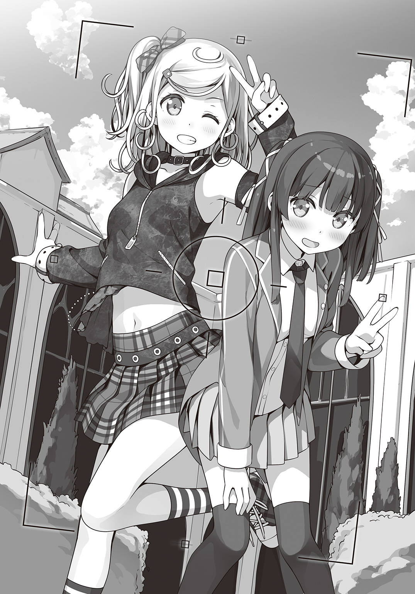
こんな大勢の前で変身に失敗して裸になってしまったら一生残る汚点だ。
疲労感にぐったりしていると、リンさんが撮ったばかりの写真を確認する。
「うんうん、いい感じじゃない？」
「あ、あの、ちょっとこれって何かの雑誌とかに載っちゃうんですか？ そ、そういうの困るんですけど！」
「大丈夫大丈夫。可愛く撮れてるから」
「そういう問題じゃないんですけど......」
そんなささやかすぎる抗議の言葉は完膚なきまでにスルーされた。
それにしても、いつまでこうしてなきゃいけないんだろう。人がいっぱいいるし、なんかもの凄く見られてるし正直帰りたい。
残っているシャルルさんに目配せで助けを求めたら「あ、忘れ物しちゃったっす」とか言ってあからさまに逃げられてしまったし、モリーさんに至ってはカメラマンさんにさっき撮ったばかりの私の写真をくれとしつこく絡んでいる。いったい何に使うつもりなのだろう。ていうか銃口を突きつけるのはよくないと思うんですけど。
「どうぞ」
女の子が紙コップの飲み物を差し出した。
おっとりとした優しそうな女の子だった。アメリカ校のメンバーなのかな。
受け取った紙コップはじんわりと温かい。
「あ、ありがとうございます......」
飲んでみると中身はホットココアだった。コーヒーは苦手なので嬉しい。
「ごめんなさい。あの子、ちょっと強引だったでしょう」
「あ、いえ......」
「昔からああなのよ。行動力はあるんだけど、他人の意見を聞かなくって」
「昔から......？」
「リンとは同じ施設で育ったの。姉妹みたいにね。......ああ、いけない。自己紹介してなかったわね。わたしはアンジェリーナ。アンジーって呼んで」
「か、鍵村葉月ですっ」
差し出された右手を慌てて握る。そういえば、リンさんと初めて会った時も握手を求められたことを思い出す。思ったよりも固い手の平だったけどアンジーさんの優しげな印象がそのまま伝わってくるような温かい手だった。
やっぱりアメリカの人はナチュラルに握手するんだなぁ、などとしょーもない感想を抱いていると戻ってきたリンさんが私の隣に座る。
「それじゃあらためてお話ししましょっ！ 試合見てたわ。んもうっ！ すごかったわ！ あたし一発でファンになっちゃった！」
「そ、それはどうも、ありがとうございますっ」
やっぱりこの子すごく苦手だ。私のセンサーがビシビシと危険を訴えている。
教室でぼっちな私にも、これまで声をかけてきてくれた子はいた。
そういう子はだいたい三つくらいのパターンに分けられる。
一つは学校行事などのため義務的に声をかけてくる子。二つ目はとくに理由も悪気もなくクラス全員に声をかけるナチュラルいい人。三つ目が気まぐれや興味本位で私がぼっちである理由を探ろうとする人。リンさんはまさにこの三つ目のパターンに当てはまる。
「たった一撃でカザンちゃんたちをまとめてやっつけちゃうなんて、『ガラスの心』って言ったかしら？ ねえねえ、いったいどういう魔法なの？ 教えてほしいなぁ」
「あ、あの、そ、それはちょっと......言っちゃいけないって静ちゃんに言われてるから......」
「ええーっ！ そんなぁっ、リンかなしいっ」
ううっ......ツラい。
無茶な要求しているのは向こうなのに断ることにすごく罪悪感を覚えるという笑顔だ。
するとアンジーさんがリンさんを止める。
「リン、そろそろ行かないと次の取材に間に合わないわ」
「えー、もう？ もうちょっといいじゃないのよー」
「お願いよ、リン。せっかくわたしたちのことを取材したいって言ってくださるんだもの。待たせたら申し訳ないわ」
「......はいはい、分かったわよー。それじゃ、葉月ちゃんまたお話ししましょうね。今度はじっくりと、アナタのこと教えてちょうだい」
ねっとりとした笑みを残してリンさんとアメリカ校の人たちは去っていった。
「ちっ......リンめ、逃げやがったな」
戻ってきたカザンさんは、アメリカ校の人たちがいなくなっているのを見て舌打ちをする。
「葉月、アイツになにかされなかったか？」
「ううん、なんにもされてないよ。写真はいっぱい撮られたけど」
「そうか、ならいい」
そう言うと、カザンさんはベンチの隣に腰を降ろす。
モリーさんもシャルルさんも荷物持ちで連れていかれてしまったので、ここには私とカザンさんの二人だけだ。なんだか、ちょっと緊張する。
「ちょうどいい機会だ。オマエとはちゃんと話しておきたかったんだ」
もらったココアをちびちび飲んでソワソワしていると、ふいにカザンさんが切り出した。
やけに思い詰めたような、すごく真剣な表情だ。きっと、とっても大事な話なのだろう。
まさか先日の戦いのお礼参り的な......!?
今回は負けたけど、次はそうはいかないとばかりにリベンジマッチを要求されたり、一方的にライバル宣言されたりするやつだったりしたらどうしよう!?
あ、でもでも、そういう相手ってなんだかんだで一緒に戦うことになったりして、いつの間にか仲間になったりするんだよね。そして最終的には相棒とか親友ってパターンになるのだ。
もしかして、カザンさんも？
わ、わ！ どうしよう！
「き、気持ちは嬉しいですけど私には静ちゃんという心に決めた人が！」
「すまねぇ！ 許してくれ！」
同時に口に出していた。
「へ......？」
「......ん？」
なにやら嚙み合ってないような気がして私たちは思わず顔を見合わせる。
「アタシはただ、こないだの戦いでオマエを騙したことを謝ろうと思ったんだが......」
「こ、この間のこと!?」
ぜんぜん違った。
私は頭に浮かびかけた、ちょっと人には言えない妄想を大慌てで追い払う。
「いえ、あの、ぜんぜん気にしてませんから！」
「......ったく、オマエは変なやつだな」
カザンさんは苦笑いをすると、ふっと気が抜けたように息を吐く。
「この際だ。ちっとばかりアタシの身の上話に付き合ってくれ」
そう言うと、カザンさんは話をはじめた。
そもそも諸国連合というのは、原書図書館を持たない国々のメドヘンが集まってできたチームで、その立場はとても複雑だという。
そもそも原書図書館は魔法世界の要であり、大きな力を持つ魔法使いたちを外の世界から守る役目を担っている。だから、原書図書館がない国というのは、つまるところ魔法使いたちの居場所がないということに等しい。
各国が『原書』の所有権を主張し合った結果、カザンさんたちはバラバラになってあちこちの学園をたらい回しにされることになったそうだ。
「まあ、悪いことばかりでもなかったよ。ヘクセンナハトに出場するチームを間近で見られたからな。それにな、アタシの本当の目的は『原書』や〝シミ〟に関する各校の研究資料ってやつを盗み出すことだった。そいつをアイツ......リン・デイヴスに売って金にしてたんだ」
私はなんと言っていいか分からず、カザンさんの話を黙って聞いていた。
「そうやってスパイの真似事をしているうちに、だんだん麻痺してったんだろうな......。いつの間にかアタシは他人を騙したり利用することに罪悪感がなくなっていた。どうせこいつらは恵まれている。少しくらい奪っても構わない――ってな」
そこまで言うと、カザンさんは大きな大きな溜息をつく。
「スパイしてたのを謝るつもりはねぇ。ヘクセンナハトはそういう場所だ。だけど、なりふり構わずオマエを巻き込んじまった。おまけに他人の力で勝とうとした結果、そいつに振り回されて自滅しかけた。本当に情けねぇ。いま、こうやって自分の愚かさに気づけたのもオマエのおかげだと思ってる。感謝してる」
「そ、そんな、私なんて別に......」
誰かを助けたいとかそんな大それたことは考えていなくて、ただ夢中だっただけだ。
カザンさんにお礼を言われるようなことは何もしていない......と思う。
「あー、そういうとこだよ！」
「へぁあ!?」
「オマエには感謝してるし、イイやつだと思ってる。だけど、そうやってすぐ『自分なんて』とか言いやがる。もっと自信を持て。どうだ！ つってふんぞり返ってろ。勝ったやつは負けたやつのためにもそうでなきゃいけねぇんだよ」
「......はい」
カザンさんの言う通りだ。
また私は自分に起こっていることから目を逸らして逃げようとしていた。
それじゃいけないって、分かっていたはずなのに......。
「鍵村葉月はすげぇやつだ。このアタシが保証する」
「......はい！」
本の中に逃げて、本の中に答えを探していた鍵村葉月とはもうお別れした。
戦うのは今でもすごく怖いし自信もないけど、私は一人じゃない。
「その意気だ。本戦でもぶちかましてやれ！」
カザンさんは嬉しそうに私の背中を叩いた。
翌日、私は朝早くからオフィス街をひた走っていた。
向かう先は、この日本一の書店街の先にある古い図書館。
――静ちゃんが帰ってくる！
白くなった息がマフラーの隙間から零れる。
今朝は一段と冷えると天気予報で言っていたけれど、むしろ頰も身体も熱くて仕方なかった。
昨夜遅くに、部屋で本を読んでいたら窓を一羽のツバメがつついていた。中に入れてあげたらいきなり静ちゃんの声でしゃべりだしてビックリした。
ツバメは「明日、帰ります」と二度繰り返してから白い紙に戻ってしまった。
いったいなんていう魔法なのだろうか、自分にもできるのか......ううん、そんなことより静ちゃんが帰ってくることの方が重要だ！
というわけで、朝を待って家を飛び出したというわけだった。
到着すると、休館と書かれた入り口の札を横目に裏口へとまわる。
図書館は休館でも魔法学園への扉は年中無休だ。合鍵で裏口を開けて図書館の中に入ると、まっすぐに最奥にある書架へと向かう。
「マッヘン！」
定められた順番で目印の本に触れ、呪文を唱えると書架が左右に開いて魔法の世界への扉が開いていく。吸い込まれる。そう思った次の瞬間には、私は大きなホールの中にいた。
「葉月さん、お待ちしておりましたわ」
「静ちゃん！」
驚いたことに、ホールでは静ちゃんが待ち構えていた。
「なんで私がこの時間に来るってわかったの？」
「葉月さん、昨夜の式符を持っているでしょう？」
「式符......？ あ、それって」
昨日のツバメだ。静ちゃんからもらった物だから、なんとなく捨てられずに栞代わりに本に挟んでいた。
「それはともかく......明けましておめでとうございます。葉月さん」
「あ、明けましておめでとう！」
そうだった。驚きが先に立って忘れていたけど、年が明けて初めて静ちゃんと話すんだ。
「すみません。本当は、年が明けてすぐに連絡したかったのですが......」
「あ、い、いいよいいよ。気にしないでっ。静ちゃんはすごく忙しかったんでしょ」
「そ、それもそうなのですが......」
静ちゃんはなにやら恥ずかしそうにモジモジする。
その様子を見ていると、私もなにやら緊張してきた。
実家はどうだった？ とか、お正月はどんな感じ？ だとか、お年玉はたくさん貰えた？ とかそんなことをたくさん話したいのに、上手く次の言葉が出てこない。
「し、静ちゃん......あ、あの......」
「は、はい。なんでしょう......」
「いつまで見つめ合ってる」
いつの間にやら横にいた加澄さんがジト目で私たちを睨んでいた。
「か、加澄さんも、明けましておめでとう！」
「はいはいおめでとう。んじゃ、さっさと行くよ」
加澄さんは投げやりに答えてさっさと歩き出す。
ていうか、行くってどこへ？
私が状況に追いつけないでいると、静ちゃんが満面に笑みを浮かべて言った。
「葉月さん、合宿に行きましょう！」
静ちゃんたちと一緒に学園長さんのところにやってきた。
窓を背に大きな机があって壁一面が天井まで書架になっている。いかにも執務室といった部屋だった。私が書架に並んだ本に目を奪われていると、後ろから加澄さんに脇腹を突かれた。
「ふむ......合宿か」
「わたくしたちのチームはなにぶん急ごしらえです。ヘクセンナハトの本戦までにチームでの戦いを練習しておくべきです。葉月さんには補習がありますし、わたくしも土御門家当主としてのお役目もありましたが、やはり今はこちらの方が重要と思い、急ぎ戻ってきました」
静ちゃんは真剣な表情で学園長さんに訴える。
さすがは日本校のリーダー。先のことをしっかり考えてるんだなぁ。私なんて、その日その日と本のことで手一杯なのに。
なにやら横で加澄さんがボソッと「静の噓つき」とか呟いていた気がするけどきっと聞き間違いだろう。
「うむ。静くんの言いたいことは分かった。葉月くんの補習については課題を与えることでなんとかしよう」
一瞬、補習免除かと喜びかけたけど、やっぱり課題はあるんだ......。
「それで、合宿の場所はどうする？ ここは他校の目もある。秘密の特訓ならそれなりの場所が必要だと思うが」
「その点はご安心ください。うってつけのところがありますわ」
待ってましたとばかりに静ちゃんが身を乗り出した。
無事に学園長さんからの了承も得て、私たちは執務室を後にする。
合宿かぁ......運動部にでも入っていたら体験していたかもしれないイベントだけど、あいにくと私は初めてだ。
朝から晩まで練習漬けの数日間を過ごせば短期間で効率よい実力アップが図れる。また複数人で行うスポーツであれば仲間と生活を共にすることでチームワークの向上にも繫がる。
ネットにはそんなようなことが書いてあった。
..............................大変だ！
だって、つまり、それって静ちゃんとお泊まりってことじゃない！
あわわわ......ど、どうしよう！
「あ、あの、静ちゃん、聞きたいことがたくさんあるんだけど......」
「申し訳ありません。葉月さんの意見も聞かずに勝手に進めてしまって。ですが、またとない〝機〟が重なったのです」
「またとない......？」
「ともかく、冬休みも残り少ないですからできるだけ早く出発いたしましょう。まずは、葉月さんは保護者の方の許可をいただいてきてください。それから合宿の準備ですわ」
保護者の許可は、冴子さんに電話すればいいとして準備ってどうすればいいんだろう。
着替えやタオル、洗面用具とかは当たり前だとして、練習着とかも必要かな？ そもそも特訓って言ってたくらいだからどこか山に籠もったりするのだろうか。
昼間は冷たい滝に打たれ集中力を養い、必殺技を体得するため落ちてくる巨大な岩を生身で受け止める。食料のために獲物を狩り、時には飢えた熊と戦う。夜は凍えるような寒さの中、山小屋で身を寄せ合って暖をとる。......おかしいな。なんだか楽しいお泊まりというより命の危険ばかり脳裏に過ぎるんですけど。
「静ちゃんっ、寝袋とかあったほうがいいかな？ あと、鈴とかあるといいよね。熊ってうるさいと近づいてこないって聞くし」
「なにを言ってますの？ そんなもの必要ありませんわ。冬山に入るわけでもあるまいし」
静ちゃんがやや呆れたように言う。どうやら私の想像するような合宿ではないらしい。
「じゃあ、合宿はどこに行くの？」
「熱海ですわ」
静ちゃんから予想外な返答。
「熱海って、静岡の？ 寛一お宮のお話で有名な熱海？ 海とか温泉とかある新幹線で一時間ちょっとで行けるあの熱海で間違ってない？」
「ええ、その熱海ですわ。新幹線は使いませんけど」
うーん、魔法の特訓と聞いてあれこれ期待していたのに、場所が東京都民お馴染みの観光地というのがホッとしつつもちょっぴり拍子抜けだ。
「そっかぁ、熱海かぁ。私、初めてかも。夏だったら海水浴もできたのにね。......あ、ごめんね。練習練習っ、遊びに行くわけじゃないもんね」
「水着は持ってきた方がいい」
「へ？」
「そうですわね。海に入ることになりますから、水着は必要ですわね」
「え......」
加澄さんも静ちゃんも当然とばかりに水着がいると言う。
これはやはり滝行があると考えるべきなのかも......。
「今回は土御門家当主としてのお仕事も兼ねてのことですので、交通費や宿泊場所、お食事などはどーんとお任せください。葉月さんはご自分の準備だけで大丈夫ですわ」
そう言うと、静ちゃんは得意げに自分の胸を叩くのだった。
そんなこんなで急遽決まった合宿のため、私はすぐ帰って準備をすることにした。
途中で旅行用の歯ブラシとか必要なものを買い揃えてはみたものの、何が必要で何が必要でないかはよく分からなかった。
「着替えは三日分、タオルも三枚くらいあればいいかな？ どんなところに泊まるんだろ。ドライヤーくらいはあるよね？」
旅行カバンの前で悩むこと数時間。途中で『魔法 合宿 必要な物』でネット検索してみて、何を持っていけばいいか調べてみたりもした。あんまり参考にならなかったけど。
「こんなものかなぁ......あ、そうだ！」
はっと思いついて、私は押し入れに向かう。
合宿と言えば友達と過ごす夜の時間。ゲームをしたり恋バナをしたり、見回りの先生に隠れて夜更かしをしてみたり。そんな素敵なイベントが待っているはず！
「ついに......これを使う時が......」
長いことしまい込まれていたダンボール箱を引っ張り出してきた。そこに入っていたのは、
いつか友達とのお泊まりの時に遊ぼうと買っておいたボードゲームの数々だ。
「えーと、これはワンプレイに時間がかかるし、こっちは三人までだから論外......と。コレは遊んだら絶対盛り上がるんだけどなぁ......」
もちろん、すべてのボードゲームはひとりで複数人プレイをしてルールを熟知済みだし、どれを持っていってもすぐに遊べるようにできる。
だけど、ここで考えなければいけないのは、みんながどう思うか、である。
ルールが複雑すぎるゲームは少ない自由時間では難しいし、やたら箱が大きくて小道具盛りだくさんなゲームなんかだと「やだ、この子ってば合宿だからってちょっとテンション上がりすぎじゃない？」と、これまた引かれてしまう。
静ちゃんたちの好みが分からない今、大切なのはバランスなのだ。
そうなると、答えは自ずと決まってくる。
そんなこんなであーでもないこーでもないと悩みながら五回ほど中身の確認をして、ひとまず荷造りを終えた頃、美沙さんが帰ってきた。
「おかえりなさい。ご、ごめんね、夕飯の準備、まだできてないんだ」
「いらない」
美沙さんは、着ていたコートをソファの上に放り投げると、そのままキッチンへと向かう。冷蔵庫からミネラルウォーターを取り出して、勢いよく飲み始めた。
「外で食べてきた？ じゃあ、私はなにか適当に済ませようかな。あ、それでね、ちょっと相談なんだけど、私ちょっと友達と合宿に――」
「ごめん、疲れてんの。明日にして」
「あ......うん。ごめんね」
そっけなく言うと、美沙さんは自分の部屋に引き上げてしまう。
疲れてると言っていたけど、どこか表情が暗かったようにも見えた。
――きっと気のせいだろう。
少しばかり浮かれていた私は、そう決めつけて荷造りの続きをすることにした。
合宿当日の朝はまた一段と冷え込んだ。おまけに夜には雪になるかもしれないというので、私はめいっぱい厚着して学園へと向かった。
待ち合わせ場所はホールだ。いつものように図書館から書架の扉を使ってやってくると、加澄さんひとりだけが待っていた。
「葉月、なにその格好」
「え？ そ、そんなに変かな」
中一の時に買ってもらったダッフルコートとマフラーは、暖かいし着心地もいいので私のお気に入りだ。でも、さすがに中一から使っているのでちょっと子供っぽいかもしれない。
「そ、そうだよね高校生だもんね。もうちょっと大人っぽい感じでもいいよね......」
「いや、そういう意味じゃ......まあ、いいや」
「ええっ！ ちょっと途中でやめないで！」
「説明めんどくさい。どうせ着いたら分かる」
そこ、大事なことかもしれないので面倒がらずにちゃんとお願いしたいんですが......。
それにしても、すぐ分かるってどういうことだろう......？
私が首を傾げていると静ちゃんがやってきた。
よく見れば、二人ともずいぶんと薄着だった。考えてみればすぐに新幹線に乗ることになるのだろうし、厚着をしてきても荷物になるだけだったかも。
「みなさん、揃っていらっしゃいますか？」
「まだ、舞が来てない」
「佐渡原さん、もしかして時間を間違えたのかしら」
「道に迷ってるのかも」
そう言って、二人して溜息をつく。
佐渡原舞さんは物静かで見た目はすごく大人っぽい人なんだけど、ちょっぴり抜けたところがある。私もまだ付き合いは短いのだけど、二人の溜息が決して杞憂じゃないってことだけはよーく理解している。
「ごめんなさい！ 遅れましたぁ！」
「ああ、佐渡原さん、よかった。何かあったのかと心配しましたわ」
予定の時間に遅れること数分、息を切らせて駆け込んできた佐渡原さんを見て、私は目を丸くした。
だって佐渡原さんは、白い半袖のワンピースに麦わら帽子という〝ザ・夏〟というスタイルだったのだから。
しかしなぜだか静ちゃんはまったく気にした様子がない。
これが例の「ツッコミ待ち」という状態なんだろうか。
風の噂に聞いたところによれば、グループにはボケ担当なるポジションの人がいるという。
彼らがボケて、周りがツッコミを入れるというお約束を挟むことによってグループ内の空気は常に明るく保たれ、ストレスのない円滑なコミュニケーションが生まれるのだ。
......は!? もしや、新参者である私のためにみんながツッコミの役どころを用意してくれているのでは!? そ、そういうことなら私もがんばらなければいけない！
「さ、佐渡原さん！」
「はい？」
「な、なんでやねん！」
ビシッと手の甲でもってツッコミを入れた。
「......なにやってるの、葉月」
「え？ え？」
おかしい......誰も笑っていない。
加澄さんなんか「なにやってんだこいつ」とばかりの視線を投げかけてきている。
「みなさん、出発しますわよ。電車に間に合わなくなってしまいます」
困惑したままの私を置いてきぼりにして、静ちゃんが歩き出した。
いつものように静ちゃんが操作盤にある、なにやらアナログな感じのダイヤルを回すと、ゴゴゴッと大きな扉が下りてくる。
そういえば、この『扉の間』から図書館以外の場所に行くのは初めてだ。
ちょっぴりワクワクしながら静ちゃんたちの後に続いて開いた扉をくぐると、そこは――
「駅......？」
そう、まさに駅だった。
ていうか、このちょっぴりレトロな造りにはなんとなく見覚えが......。
「ここって、東京駅じゃない？」
「ええ、そうですわ。今日はここから電車で向かいます」
オリーブ色のフードを被りながら、静ちゃんが言った。
私たちも静ちゃんにならってフードを被った。これで、〝姿隠し〟の魔法が発動して他の人たちには私たちのことが認識できなくなるのだ。
とりあえず、佐渡原さんがあの格好のままで真冬の東京駅を闊歩するという事態にならなくてホッとした。絶対に職務質問されちゃうからね。
私の方は、せっかく着てきたコートがただの荷物と化してしまったけど。
静ちゃんに連れられ、私たちは一般客に交じって広い東京駅の中を歩いていく。
「それにしても、まさか普通に電車で行くとは思わなかったよ。てっきりあの扉で一気に熱海まで行くのかと思ってた」
「そんなもったいないことできませんわ」
「もったいないって、なんで？」
「転移の魔法は距離があるほど魔力と触媒の消費が跳ね上がるのです」
静ちゃんが言うには『扉の間』の装置を動かしている魔力は、学園地下の原書図書館に収められているたくさんの『原書』から供給されていて、それも有効範囲はせいぜい東京都内らしい。
そこから離れると、あとは自分で魔力を用意しなければならなくなるのだそうだ。
しかも効率よく魔力を供給するために触媒になるアイテムも必要になる。
「熱海までだと、金粉が二百グラムは必要ですよね」
「そ、そんなにかかるんだ......」
佐渡原さんの口から恐ろしい言葉が飛び出した。
金って、ほんのちょびっとの量でも何万円とかするんだよね。それが二百グラム......トンカツ一枚分くらい必要となると女子高生のお小遣いではとても賄えない。うん、電車最高。
そうこうしているうちに、私たちはホームに辿り着いた。でも、ここは......
「あの、ここって山手線のホームだよね？」
「そうですわ」
もしかして、いったん品川まで行くのかな？ でもそれってただの遠回りじゃ......。
「こちらですわ」
困惑しながらも後についてホームを進んでいくと、緑色をした一際古い柱の前で静ちゃんは立ち止まった。
「あれ......？」
ふと、妙なことに気づいた。山手線の、しかもターミナル駅である東京駅ホームといえば四六時中混みあっているのが当たり前だ。なのにこの一角だけほとんど人がいない。
「ここは、わたくしたち魔法使いのためのホームですわ」
私が質問する前に、静ちゃんが教えてくれた。
「そっか、やっぱりそうなんだ！」
魔法使い専用のホームなんて、いったいどんな電車がやってくるのだろうと、期待に胸を膨らませながら待っていると、どこからともなく音が聞こえてくる。
線路の向こうからやってきたのは赤茶色の小さな電車だった。
車両はたった一両、おまけに無人の運転席はほとんど外にむき出し、そんな電車が金属のベルみたいな音を〝チンチンチン〟と鳴らしながら私たちの前にやってきた。
「京都伏見経由出雲行き、こだま６９９号......これですわね」
静ちゃんに続いて、加澄さんも佐渡原さんも当たり前のように乗り込んでいく。
「早く乗らないと置いていかれるよ」
呆然とホームに立ち尽くす私を加澄さんがうながす。
本当に、この路面電車で行くんだ......。
ホームより低い位置にある乗車口へと降りて車両に乗り込んだ。
「え......」
突然、目の前に現れたのはお客さんで賑わう空間だった。
ちょっとレトロな車内には高級感のあるベロワの座席が並び、どの席もローブを着た魔法使いたちが座っている。
「すごい......すごい......！」
「感動するのは後にしてくださいませ。早く席に着きましょう」
「う、うん！」
興奮冷めやらぬも、静ちゃんの後を追う。
外から見た時はたった一両だけかと思っていたのに、奥にはちゃんと二両目、三両目があって、私たちの席は五両目の真ん中あたりだった。ちなみにグリーン車だ。
「すごいね！ これ外から見た時はあんなに小さかったのにっ！ 窓もちゃんとあるし、外も見えるっ、どうなってるのかな!?」
「お、落ち着いてください葉月さん」
「葉月、恥ずかしいから」
これが落ち着いていられようか。だって私は今、魔法の電車に乗っているんだもの。
「あれ？ でも、これ魔法で動くんだとしたら〝電〟車っておかしいよね」
「なにを言ってますの。そろそろ発車しますわよ」
静ちゃんがそう言った直後、さっきのベルの音が響いた。
くんっ、と座席に引き寄せられるような感じがして電車は見た目よりもずっと重たそうに動きはじめた。こういうところは普通の電車と変わらないらしい。
でも、問題はここからだ。
電車は山手線のレールの上にいるわけで、この後どうやって熱海へと向かうのだろう。
ふわりと浮いてそのまま空を駆けていく銀河鉄道方式か、はたまた時速八八マイルを突破した瞬間に激しいスパークと共に時間と空間を飛び越えてしまうのか。
私としては前者が好みなのだけど、それ以外でもぜんぜんＯＫだ。実際どうなるか楽しみだ。
「先に言っておきますが、空を飛んだりはしませんわよ」
ワクワクしながら待ち構えていた私に、静ちゃんが残酷なひと言を放つ。
「ええっ!? じゃ、じゃあ、どうやって熱海まで行くの!?」
「普通に新幹線と同じ」
加澄さんの言った通り、電車は山手線の線路を離れ東海道本線に合流していく。
その様子を窓にへばりついて眺めながら、私はがっくりと肩を落とすのだった。
「鍵村さんは変わってますね」
「単に子供なだけ」
私に言わせたら、みんなの方が変わってるんだけど。
「前々から思っていましたが、葉月さんは少し魔法というものを大げさに考えすぎですわ」
魔法が大げさじゃなかったら、いったいなにが大げさになるのだろう。
静ちゃんたち生粋の魔法使いとの常識の違いにはこれからも苦労しそうだ。
その後も魔法の電車は空を飛ぶこともなければ空間を跳躍することもなく、いたって普通に線路の上を走り続けた。
しばらくは往生際悪く窓の外を眺めていた私もさすがに諦めた。
そっちに期待できないのなら、今はむしろ静ちゃんたちとの電車の旅を楽しもう。
ギリギリまで悩んだ結果、私はボードゲームより、シンプルでコンパクトなゲームを持ってくることにした。
すなわち〝トランプ〟だ。
トランプなら誰でもルールを知っているし、かさばることもない。
というわけで、さっそく――
「あの、みんな......」
「あ、それ加澄さんもやってるんですね」
タイミングの悪いことに、加澄さんがスマホのゲームをはじめてしまった。
同じゲームをプレイしているという佐渡原さんとガチャであのキャラが出ないだとか、この間の限定イベントがどうのと盛り上がる二人を前にトランプなんて取り出せるわけもなく、そっとトランプをカバンにしまいなおす。
「それは......こんぴゅーたーげーむというものですか？」
静ちゃんは、興味ありげに加澄さんたちのスマホを覗き込んでいた。
「アプリゲーですよ。土御門さんはあまりゲームをしないんですか？」
「静は機械とかダメだから」
「し、失礼な。携帯電話なら持っていますわ。ただ、その、ボタンやスイッチの付いてないものがどうも性に合わないと申しますか、押していないのに押したことになっていたり、押したはずなのに、擦る？ ようなことをしなければいけなかったり......」
静ちゃんはタッチパネルという仕組みがどうにも納得いかないらしかった。
加澄さんにからかわれて意地になったのか、ボタンを押せばきちんと反応の返ってくる機械が一番信頼できると力説する静ちゃんはちょっとかわいい。
って、暢気に眺めている場合じゃなかった！
さっきから私、ちっとも会話に交ざれてない！
せっかくの友達との電車旅なのに、これでは中学校時代の修学旅行と同じだ。
友達のいなかった私は移動の間はずっと先生の隣。ホテルでは空き部屋の都合で一人部屋に回され、自由行動も一人で本屋さんを廻って時間を潰した。
あんな悲しい旅行は二度と体験したくない！
そんな固い決意と共に、私はふたたびカバンの中に手を突っ込んだ。
実は今日のために早起きしてお弁当を作ってきている。
そっとカバンの中からバスケットを取り出した。中身はサンドイッチ。具は三種類で食べやすいように小ぶりなサイズにしてある。
――ありがとう！ 美味しいね！ 葉月さんはお料理が上手ですわね！
という感じでおしゃべりも弾むに違いない。
「あ、あのね......」
と、私が口を開きかけた時、車内に軽快なメロディが流れた。
『まもなく、熱海です。ご利用いただきありがとうございます。熱海を出ますと次は――』
「ええええっ！ もう着いちゃうの!?」
そんな、まだ出発して一時間も経ってないのに！
いや、よくよく考えてみたら新幹線と同じように走るんだから熱海まで四〇分くらい。
あれもこれもとやってる暇なんかあるわけがなかった。
うう......私のバカ。こんなことなら魔法の電車だとかはしゃいでないでさっさとお弁当を出しておけばよかった。
「それ、お弁当ですの？」
「え......う、ううん！ なんでもないよっ」
私は恥ずかしくなって慌ててバスケットをしまい直す。だけど静ちゃんは、そんな私に微笑みながら言う。
「よかったら、分けていただけます？」
「でも、もう熱海に着いちゃうし......」
「大丈夫。まだ時間はありますわ。わたくし朝ご飯を食べる時間がなくて」
「じゃあ......」
少し緊張しながらバスケットを差し出す。
「あら、サンドイッチですわね。小さくてかわいらしい」
そう言って、静ちゃんはタマゴサンドをひとつ口に運ぶ。
「ど、どうかな？」
「とっても美味しいですわ。これ、葉月さんがお作りに？」
美味しいと言ってもらえたのが嬉しくて、そして照れくさくて、上手く言葉が出てこなくて、ただ黙ってうなずいた。
「私もいただいていいですか？」
「じゃ、あたしも」
加澄さんと佐渡原さんも一つずつサンドイッチをつまんでいった。
二人とも口を揃えて美味しいと言ってくれた。嬉しかった。
......なんだ、こんなに簡単だったんだ。
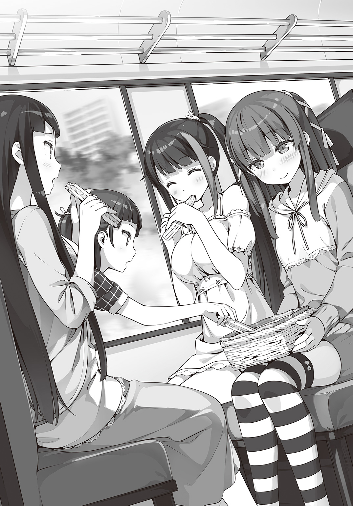
私、待ち合わせの時からずっとから回ってばかりだった。
美味しいね、とか。
楽しいね、とか。
お弁当作ってきたの。食べて！ とか。
もっと素直に口にしていいんだ。
こうして、たったの五分だけど、私は友達との最高の時間を過ごしたのだった。
熱海駅を目前にして、電車はゆっくりと速度を落としていく。
こうして見ると、熱海の駅もとくに変わったところはない。
――だったら別に新幹線でもよかったのでは？
と、いつもは夢見がちな私も思わず冷静にならざるを得ない。
いや、別に文句があるわけじゃないんです。ただ、せっかく魔法の電車なんだからもうちょっとスペクタクルがあってもいいんじゃないだろうか。
「葉月さん、そろそろ窓から離れた方がよろしくてよ」
「はい？」
見れば、静ちゃんだけじゃなくて加澄さんや佐渡原さんに、他の乗客たちも何かに身構えるように席に座り直している。
「葉月さんは何かに摑まってくださいな。魔法で緩和しているとはいえ、多少の衝撃はありますから」
その時だった。
〝ガコン〟と足下から震動がして、電車は線路を外れていく。
「え？ なに？」
急に傾きはじめる車内。そしてふたたび加速をはじめる電車に、私は言われた通りに座席の肘掛けにしがみついた。
「ちょっと待って、どこ行くの？ そっちは......」
線路を外れた電車が向かう先にあるのは――海。
どんよりと曇った空の下、荒々しい波が打ち寄せる真冬の海水浴場に向かって電車は斜面を下っていく。それこそ車型タイムマシーンがタイムスリップでもする勢いでどんどんスピードが上がる。あっという間に鈍色をした海が目の前に迫った。
ぶつかる！
そう思い咄嗟に目をつむった。直後、電車をバラバラにしてしまうような激しい衝撃が......とくに襲ってこなかった。
「へ......？」
恐る恐る目を開ける。これといって車内には何も変わった様子はなかった。
「葉月さん、外をご覧になってくださいませ」
「外......？」
静ちゃんに言われて窓の方を見る。そこに、青い世界が広がっていた。
「わぁ......！」
そう、電車は海の中を走っていたのだ。
海の中は外から見たのとはまるっきり違う。青く透き通っていて、まるで遠い国にあるような、まだ人の手が入っていない海みたいだった。
やがて、海のカーテンの向こうに何か大きなものの輪郭が見えてくる。
よーく目を凝らせば、それが一つの街だと分かった。
「到着しました。あれが熱海ですわ」
静ちゃんが言った。
次の瞬間、電車は青い世界を飛び出した。
第三章 熱い海でつかまえて
境界線を越えた瞬間、分厚い水のカーテンは消え去り、気づけば私たちの乗る電車は海沿いに伸びる線路の上を走っていた。
進行方向の右側には緑に覆われた山と裾野に横たわる街並みがあり、左には真っ白な砂浜が続く海岸線、そして青い海とそれを映したような空がどこまでも広がっている。
「海の中なのに空がある......」
窓から外を見て私は呆然と呟いた。
確かに海の底へ底へと向かっていたはずなのに、目の前にあるのはごく普通の海辺の景色だ。
私の理解が追いつかないうちに電車は駅へと入っていき、ゆっくりと停車した。
車内のアナウンスが到着を告げると、ぞくぞくと他の乗客が降りていく。私たちもそれに交じってホームに降りた。
一歩外に足を踏み出した途端、私の顔面を熱気が襲う。
「暑っ!?」
電車の外はまるで真夏のような暑さだった。
低い位置に見える太陽は確かに冬らしいけど、気温は間違いなく夏。空気は湿度が高く、山の緑は濃く色づき、海は宝石をちりばめたように輝いている。よく見れば海沿いの道にはヤシの木まで生えていたりして、まるで赤道直下の国にでもやってきたような気分だ。
おかげで、コートにマフラーなんて完全防寒でやってきた私は明らかに周囲から浮いていた。
「それにしても、どうしてここはこんなに暑いの？」
「それは、ここが世界でもめずらしい霊脈の吹き溜まりだからですわ」
「れいみゃく......？」
なんとなく聞いたことあるような言葉だ。
「詳しいお話はお宿に着いてからにいたしましょう」
などとやっている間にも全身にじんわりと汗がにじんでくる。
すでにただの役立たずになっていたコートとマフラーにそっとセーターも抱えて、私たちは古めかしい駅舎を出た。
「なっ――」
駅前のロータリーにやってくると、静ちゃんが目を見開いて絶句する。
『歓迎 土御門静様 と、お連れの皆様』
そんなド派手な垂れ幕が私たちを待ち構えていた。
ちなみに『お連れの皆様』の部分はものすごく小さい。
「なんですの、これは!?」
悲鳴にも似た声を上げる静ちゃん。その時、駅前ロータリーにワゴン車が一台やってくる。
降りてきたのは『旅館 茂林荘』と文字の入った半被を着たおじいさんだった。
「土御門静様でございますね......？」
「え、ええ......そうですが......」
「おお......！ なんと、なんとまあ......！」
静ちゃんが答えると、おじいさんは感極まった様子で跪くようにしてその手を握った。
「ご立派になられて......お待ちしておりました。ささっ、お乗りください。宿までお送りさせていただきます！」
ちょっぴり強引なおじいさんに押し込められるように車に乗せられて宿へと向かう。
「まさか、土御門のご当主様が自ら足をお運びになってくださるとは！ この歳までしぶとく生きておった甲斐がありました！ ご連絡を受けた時は驚いて危うくぽっくり逝きそうでしたがのう。三途の川の向こうにばあさんが見えたもんで、慌てて引き返してきたんですわ」
上機嫌なおじいさんは、畳みかけるような老人ジョークを飛ばしては、ひとりでワハハと笑っていた。
「あの、お伺いしたいのですが」
「ああ、ばあさんでしたら二〇年ほど前にくたばりました。鬱陶しいからあまり早くこっちに来るなと言って翌朝にはあっさりと。まったく死ぬ間際まで口の悪い女房でした」
「いえ、そのことではなくて......」
静ちゃんは相変わらずリアクションに困る老人ジョークを受け流すと、
「街のこの様子はいったいどういうことでしょう？」
静ちゃんは窓から見える街の様子にすっかり困惑していた。
それもそのはず、古い街並みのあちこちに私たち（主に静ちゃん）を歓迎するのぼりや立て看が設置されているのだ。
「それはもう、土御門のご当主様がおいでになるとなれば町を挙げて盛大にお迎えするのは当然のことです。盆と正月がいっぺんに来たとみんな大騒ぎしております。わはははは！」
歓迎というよりは便乗に見えるのは気のせいだろうか。
「すごい静ちゃん推しだね。ヘクセンナハトに出場する人はアイドルとかスポーツ選手みたいに人気があるってほんとだったんだ」
「もちろんです。なにより熱海にとって土御門家は救い主様ですから」
「救い主って？」
「なんと！ ご存じない!? でしたらお話しして差し上げなくてはなりますまい。この熱海に残る土御門家の伝説を。......オホン。時は天平勝宝、鹿島の地より訪れた――」
何かのスイッチが入ってしまったらしく、おじいさんは軽快に車を操りながら慣れた様子で語りはじめた。あ、長いので割愛します。
おじいさんの話をまとめると、千五百年ほど前のこと、ごく平凡な漁師村であった熱海（当時は別の名前だったらしい）で、ある日突然、海底からものすごい熱が噴き出して海が煮えたぎるという事件が起きた。魚たちは茹であがり、あまりの熱に海にも近づけないというような状態で、漁ができず村人たちは困り果てていた。そこへ一人の僧が通りかかった。
その人は法力で海の熱を余所に移し替えて村を救ったという。
「その村を救った僧というのが土御門家のご先祖にあたる方なのです！」
おじいさんは力強く締めくくる。
こういう不思議なお話が大好物である私は、興味津々で聞きいっていた。
「へえええ......す、すごいね静ちゃん。伝説だよ伝説っ」
「すごいのはわたくしではなく、ご先祖様ですわ。それと、葉月さんにはもう少し詳しく説明した方がよろしいですわね。海が煮えた原因はそこに霊脈の吹き溜まりがあったからです」
そうだ、思い出した。霊脈......確か、補習授業で教わった。
大地の下には魔力の流れる川のようなものが張り巡らされているって。
「つまり、溢れ出た魔力が海水と反応していたのですわね。穴を塞ぐことは困難でしたので、ご先祖様は別の方法で用いることにしました。それが秘術『泰山府君』です」
それは初めて聞く名前だ。
いったいどんな秘術なのかと私が聞こうとした時、おじいさんの言葉がそれを遮った。
「ふたたび『泰山府君祭』をこの目で見られるとは、思いませなんだ。いやぁ、長生きはするものですなぁ」
しみじみと言うおじいさん。その様子からして、なにやら大事なイベントらしい。
「ともかく、その『泰山府君』という魔法によって熱海は霊脈の穴ごと表の世界から切り離されました。霊脈から溢れる魔力は異空間を維持するために使われるので、海が煮えたぎるということはなくなりましたが、その代わりにここ熱海は年中暖かい気候になったのです。ちなみに、熱海という地名の由来もそこから来ているのですよ」
「へぇ......！」
私はまた感動していた。
東京駅のことといい、こんなに身近に魔法があったなんて。
また一つ私の知る物語が増えた。
話をしているうちに車は旅館に到着した。
車の中でおじいさんが話してくれたところによると明治時代から続く老舗の旅館で、大正時代に改築して以来ずっとそのままなのだそうだ。
そんな古いけど由緒ある建物の前で、従業員一同が勢揃いして待ち構えていた。
「静様、ようこそおいでくださいました」
品の良さそうな女将さんがお辞儀をすると、何十人もいる仲居さんたちが一斉にそれにならって頭を下げる。まさに旅館をあげての大歓迎だ。
さらに、案内された部屋はというと、ちょっとした体育館並みに広いお座敷だった。
金屛風に豪奢な襖、遥か向こうには床の間があって、いかにも高そうな壺や掛け軸がかかっていたり、おまけに部屋専用の露天風呂までついている。
「うわあ......広い......ね」
「ていうか広すぎ」
「そうですか？ 四人だとこのくらいじゃないですか？」
「いえ、こちらは静様のためにご用意したものです。お連れの皆様にはそれぞれ別のお部屋をご用意させていただいております」
佐渡原さんにツッコむ前に、女将さんの口からさらに恐ろしい事実が告げられる。
「静様におかれましては当旅館をお選びいただきまことにありがとうございます。ご逗留いただく間、最高のお持てなしで――」
「ちょ、ちょっとお待ちくださいませ！」
「......なにか不都合がございましたか？」
「いえ、不都合ではありませんが、わたくしたちの目的はあくまで合宿ですので、一緒のお部屋でお願いします！ あと、もっと普通のお部屋で結構ですから！」
「ですが......」
「お願いします！」
静ちゃんが強く念を押すと、女将さんも観念したのか小さく溜息をついて「分かりました」と答えた。
「では、お部屋は別に用意するとして......この後、大宴会場にて宴をご用意しておりますのでそちらにはどうかご参加ください。静様をお迎えするにあたって熱海市長ならびに市議会議員、地元名士の方々にもお集まりいただいております。そうそう、地元テレビ局が是非インタビューをしたいとも申しておりました」
「は......」
思わぬ返事に静ちゃんは硬直した。
どうしても歓待したい地元熱海の方々をなんとか説得して、やっとのことで静ちゃんは解放された。部屋も中くらいのランクに格下げだ。それでも充分すぎるくらいに豪勢なのだけど。
「はぁ......疲れましたわ」
「すごい歓迎っぷりだったね」
ぐったりしている静ちゃんを労いながら、私はソワソワと荷物を探る。
お部屋に辿り着くまでいろいろありすぎたけど、合宿はここからが本番だ。
はじめての友達とはじめてのお泊まり。後々までの記憶に残るような思い出を作らなければいけない。具体的に言うと、写真を見れば「あの時こうだったよねー」なんて思い出話に花が咲くようなやつだ。さらにその写真が卒業アルバムに載れば言うことなしだ。
中学校の卒業アルバムでは集合写真と名簿についてるバストアップ、あとは他の子たちが写っているのにちょびっとだけ見切れているやつの三つしかなかった。しかも完全に油断していて口は半開きで目の焦点も合ってない我ながらひどい顔をしていた。もちろん卒アルは押し入れの奥深くに封印した。とにかく、あんなのはもうたくさんだ。
高校入学の時にお父さんにねだってねだって買ってもらった私のスマホは、こういう時のことを考えてカメラの性能がいいやつにしてある。
そうだ。宿にも着いたことだし、ここらで一枚みんなで写真を撮るのはどうだろう。
うん。それがいい。そうしよう！
「あ、あの、みんな......」
私はさっそくみんなに声をかけようとした。ところが、
「さて、のんびりしている暇はありません。さっそく海に向かいます」
あ......。まあいいか。チャンスはまたある。
「では、水着に着替えましょう」
え......水着......？
硬直する私を置いてきぼりにして、みんなが着替えをはじめた。
「鍵村さん、着替えないんですか？」
「え......あ、その......」
佐渡原さんが聞いてくる。
「葉月、水着は？」
「うひぃっ!?」
加澄さんのジト目が私に突き刺さる。こうなってはもう観念する他なかった。
「も、持ってきてないです......」
「ちゃんと言ったのに」
「でもでもっ、理由は話してくれなかったし、まさかこんな真冬に水着がいるとは思わなくて......すみません。ちゃんと聞いてませんでした」
加澄さんの視線が痛い。
正直、冗談かなにかだろうと思ってた。
ついさっきまで夏めいた格好の佐渡原さんを見て、「うぷぷ......」などと内心密かにほくそ笑んでいた罰が当たったのかもしれない。
「ご安心くださいな。こんなこともあろうかと学園長から預かっております」
「学園長さんから？」
静ちゃんから学園の校章が刻まれた由緒ありげな木箱を渡される。
金色に光る留め金を外し、私は恐る恐る蓋を開けた。
「こ、これは......！」
間近に見ると海はやっぱりキレイで、降り注ぐ太陽は眩しかった。
額に浮く汗を拭いながらこうして白い砂浜に立っているといると、今が真冬の一月だとは到底思えない。
......それはともかく。
「なんでスク水なの!?」
私は思わずひとりでツッコミを入れた。
学園長さんから預かったという木箱の中身はスクール水着だった。
私が水着を持ってきていないことを見越して用意してくれていたのは大変ありがたいし、感謝しているけど、なぜ、どうして、よりにもよってスクール水着なのか。おまけに、あつらえたようにサイズがピッタリだったり、ご丁寧に胸のところには「はづき」と書かれた名札もついていたり、ここまでくるとワザとやっているとしか思えない。
「ねえ、静ちゃん、前のブルマの時からちょっと気になってたんだけど、学園長さんって実は私をいじって遊んでたりしない？」
「なにをおっしゃっているのです。学園長がそのようなことをするわけありませんわ」
こっちも前から思ってたんだけど、静ちゃんの学園長への信頼はやけに厚い。
「それはクズノハ女子魔法学園に受け継がれる由緒ある水着ですわよ」
静ちゃんの性格からしてこの手の冗談をするとは思えないけど、そういう自分はどうしてパーカの下にごく普通の白いワンピースの水着を着ているのだろうか。
私が釈然としないものを感じていると、残る二人も着替えを終えてやってきた。
「お待たせしました、皆さん」
「さ、佐渡原さん......」
こうして目の前にすると、その暴力的なまでのスタイルに圧倒される。
同じ高一とは思えない。そもそも人類としての規格が根本から違うんじゃないだろうか。
格差社会の現実に溜息をついていると、加澄さんの姿が目に入る。
こちらは佐渡原さんと違ってとっても親近感がわく。
なだらかで凹凸の少ないボディラインは安心安全。地球にも私にも優しかった。
「加澄さん......お互いがんばろうねっ」
「おいこら勝手に仲間にするな」
私が贈った熱いエールに加澄さんがほっぺたをつねることで応えていると、
「それでは、さっそく練習をはじめましょうか」
「え......練習......？」
静ちゃんの思いも寄らぬ言葉に、私は聞き返す。
「もちろんですわ。いったいなんのために熱海まで来たと？」
「静が実家のじいさまたちから逃げるため」
「加澄さんは少し黙っていてくださいませ」
余計な発言をした加澄さんにぴしゃりと言い放ち、静ちゃんはふたたび向き直る。
「先ほどもお話しした通り、ここ熱海は霊脈の吹き溜まりになっており、街中に濃密な魔力が充満しております。そのため、魔法を使っても普通より回復が早いのです。ですから魔法使いたちの保養地として日本だけでなく世界中から観光客が集まるのですわ」
言われてみれば、湿気とはまた違う空気がしっとりしてるというか身体に染みこんでくるような感じがある。決して不快ではないけれど、少し身体が熱いようなふわふわした気分だ。
「先に葉月さんに大事なお話があります」
「な、なにかな？」
ほんの少しドキっとしながら待ち構える私に静ちゃんは意外な言葉を投げかけた。
「先の戦いで使った『ガラスの心』の魔法は、今後使わないようにしてください」
「え......ど、どうして？ 私じゃ、役に立たないから......？」
私はすごく動揺していた。
せっかく変身もできて魔法も手に入れたのに、それを使うなって......。
「そうではありません。むしろ、あの魔法があればわたくしたちが優勝するのも難しくはないでしょう」
「だ、だったら......！」
食い下がる私を静ちゃんは優しく諭す。
「ですが、あまりにも葉月さんの負担が大きすぎます。実際、あれ以来ずっとブーフ・ヒュレができなくなっているでしょう」
「そ、それは......」
静ちゃんの言う通りだった。
カザンさんたちと戦った後、私の身体の中からごっそりと〝なにか〟が抜け落ちたような感覚があった。少しずつ取り戻してはいる気がするけど、いまだに元通りとは言えない。
「原因はおそらく『ガラスの心』が未完成だからです」
静ちゃんは真剣な表情で私を見据える。
「『原書使い』の魔法は普通の魔法とは大きく違います。『原書』との契約はギブアンドテイク。〝シミ〟と戦い、物語を守る使命を負う代わりに、契約者の想いや願いを叶える唯一無二の魔法を授かる。これがメドヘンがそれぞれ持つ『固有魔法』です。たとえば、わたくしの場合は〝母のように強くなりたい〟と『かぐや姫』に願いました。ですから、わたくしの魔法は母が持っていたものとそっくりです。他の方々もそれぞれに願いや想いを『固有魔法』として〝確定〟させています。ですが、葉月さんの魔法は違います。あれは未完成で確定されていないからこそ、ただひたすら葉月さんの願いを叶えようとしているように見えました。際限なく願いを叶える......それはもう魔法ではなく〝奇蹟〟と呼ばれる類のものです」
静ちゃんの言う通り、確かにあの時、私は「みんなの心が伝わればいい」と思った。同時に、誰も傷つけたくない傷ついてほしくない。戦いを終わらせたい。だけど静ちゃんの夢も守りたい。そんなふうにも考えていた。
結果的に、それらがすべて叶ったのは間違いない。
「魔法は確かに普通では起こりえない現象を起こしますが、それだってルールや限界は存在します。誰かにとって都合よく起こる奇蹟など、人間が扱っていいものではありません。少なくとも葉月さんがアレを何度も使って無事でいられるとは、わたくしにはどうしても思えないのです。ですから、きちんと魔法として完成するまでは絶対に使わないでください」
「で、でも、そしたら私......」
――役立たずになってしまう。
喉元まで出かかった言葉を飲み込んだ。
「大丈夫ですわ。あの魔法が使えないなら、もう一つ新しい魔法を作ればいいのです」
「魔法を......作る......」
それは、思いがけない提案だった。
でも、確かに静ちゃんはいくつも魔法を持っていた。他のメドヘンの人たちの中にも複数の魔法を持っている人は多い。
「正確には、作るのではなく完成させる、ですわね。思い出してください。葉月さんはカザンさんとの戦いの中で、すでにもう一つ魔法を使っているではないですか」
「あ......」
そうだ。思い出した。
あの時、私はカザンさんの恐ろしい攻撃から身を守るためにお城を作り出した。
「確かに、静の魔法を奪って三倍増しになったカザンでも破れなかった。防御としてはけっこういい線いくと思う」
その場で見ていた加澄さんが、めずらしく素直に認めてくれる。
「ええ、完成すれば誰にも破れない最強の守りになりますわよ、きっと」
お城に引きこもって身を守るというのがいかにも私らしいというか、もうちょっと便利にならないのかと思わなくもないけれど、みんなを守れるだけでも嬉しい。
「わたくしと加澄さん、それから今はケガで離れているもう一人のメンバーが戻れば攻撃の面では充分です。佐渡原さんの魔法はもっと幅広い応用ができると感じました。そこに葉月さんの防御が加われば安定した理想的なチームになるはずです」
静ちゃんは熱く語る。
おかげでやる気が湧いてきたというか、なんだか私って縁の下の力持ちって感じ？
「な、なれるかな、さいきょーに!?」
「なれますわ！ この特訓を乗り切ったなら、必ず！」
「うん、頑張るよ静ちゃん！ ......ん？ 特訓？」
勢いに任せてうなずいた私に、静ちゃんはニッコリと微笑みを浮かべた。
しばらく後、私たちは海岸から約一キロほど沖合の海上に立っていた。
「この辺りでしたら迷惑もかからないでしょう」
自分で作った足場の強度を確かめつつ、静ちゃんが言った。
ちなみにこの足場は静ちゃんの魔法『蓬萊の玉の枝』で張り巡らせた枝を骨組みに、佐渡原さんの魔法で作った繊維を巻き付けたものだ。
「私の魔法にこんな使い方もあったんですね......」
「佐渡原さんの魔法『羽織物』で作りだす繊維は、このように編み方次第で強度や弾力を変化させられます。いくつかパターンを考えておいて、状況に応じて使い分ければとても便利な魔法になると思います」
「はい、が、がんばりますっ」
佐渡原さんはいい目標を見つけたようで、やる気に満ちた返事をする。
うんうん、とってもいいことだ。私もできることなら応援したい。一緒にがんばろうねと声をかけてあげたい。しかし、今はそんな余裕も余力もないのだ。
「ね、ねえ、ほんとにやるの？」
私は恐る恐る目の前の加澄さんに尋ねる。
聞こえていないのか、それとも聞こえているのに知らんふりをしているのか、加澄さんはこれ見よがしに大きな木槌――『打出の小槌』を素振りしている。
「よっ、ほっ、ほいっ」
加澄さんの原書『一寸法師』の物語にも登場する『打出の小槌』は触れた物質を別の物質に変化させるという加澄さんの『固有魔法』だ。
そんなものでいったいなにをしようとしているのかと言えば、これから、私を、その大きな木槌で思い切りぶん殴ろうとしてるのです！
木槌の形はしているがこれは魔法。加澄さんが命じない限り殴られても痛くないし、ケガをすることもない――
そう言われてもフルスイングする度にぶぅんぶぅんと不吉な音がして巨大な質量に押し出された空気が私に向かって吹き込んでくるのは不吉すぎる。
「ていうか、もっと他の方法もあるんじゃないかな？ たとえばほら、ビーチボールとか！ 実は私、ひとつ持ってきてるんだ！」
「さてと......準備運動はこのくらいでいいかな」
「ね、ねえ、ちょっと加澄さん聞いてる!?」
「聞いてる。大丈夫。一撃で仕留める」
「仕留めないで!?」
「ふっ......冗談」
ニヤリと笑う加澄さん。......わざとだ。絶対わざとだ。
「まだはじめていなかったのですか」
すると、佐渡原さんの指導を一通り終えた静ちゃんがやってくる。
「静ちゃん！ ちょうどよかった！ あ、あのね、やっぱりこの方法ってどうかと思うのっ。だってほら万が一ってこともあるし！」
「ご安心なさいな。万が一はありませんわ。せいぜい少し飛ばされるだけです。落ちた先は海ですし、佐渡原さんの魔法で命綱もつけてあります」
「そ、それはわかってるんだけど！ でもね！」
「葉月さん」
静ちゃんがいきなり私の手をぎゅっと握った。
「し、静ちゃん......！」
「『原書』の魔法は契約者の強い想いに応えて発現します。この特訓は葉月さんがきちんと身の危険を感じることが重要なのです。そして目の前の危険に目を背けず強くイメージしてくださいまし。あなたを守る白く美しい城塞を――」
手から静ちゃんの体温が伝わってくる。心臓は跳ね、頰は自然と熱くなっていった。
私がボーッとしていると、静ちゃんがパッと手を離した。
「では、加澄さん。よろしくお願いします」
「あいよ」
「へ......？ あ、あの、やっぱりちょっとまだ心の準備が――」
ハッと我に返った時にはすでに加澄さんが『打出の小槌』を振りかぶっていた。
「目、閉じちゃダメだよ」
そんな言葉の直後、圧倒的な質量が私に襲いかかる。
――死んじゃう！
そう思って咄嗟にぎゅっと目をつぶる。
一秒、二秒、三秒......身構えたままでゆっくりと時間は過ぎていく。だが、いつまで経っても衝撃は来ない。
「葉月さん！ 上手くいきましたわ！」
「うう......」
恐る恐る目を開ける。すぐ目の前に木槌があった。不思議なことに加澄さんが振り抜いた体勢のままで空中でピタリと停止している。
......違う。なにか、壁のようなものに阻まれているんだ。
それはよくよく見れば大きなお城だった。半透明で、まるで蜃気楼や立体映像のようだけど確かにそこに存在して、私を守ってくれていた。
「まだまだ、ここから......『打出の小槌』」
私が感動している間もなく、加澄さんが『打出の小槌』を発動させた。
触れたものを別のものに変化させる魔法がお城の壁を砂に変えてしまおうとしている。
「なにこれ魔法が......消える......」
加澄さんの口から驚愕に満ちた言葉が零れた。
お城の壁が光って加澄さんの魔法を相殺していたのだ。
「物理的に防ぐだけではなく、魔法そのものを打ち消すなんて......」
静ちゃんも驚いていた。
「あのぉ......私、気になってるんですけど」
やや緊張感のない様子で佐渡原さんが口を開いた。
「ほら、あそこ、お城の上の方に時計がありますよね。あれ、さっきからすごい勢いで時間が進んでるんですが、なにか意味があるんでしょうか」
佐渡原さんの指さす先、お城の正面に大きな時計がある。
長針がすごい勢いで進み、それに合わせて短針が十二時の位置で二つの針が重なった瞬間、〝ゴーンゴーン〟と鐘の音が響き渡る。
「あ......」
不意に、力が抜ける感覚が私を襲ったかと思うと魔法のお城がスーッと空気に溶けるように消えていく。
「なるほど、時間制限があるのですわね。それも、強力な魔法を受け止めるほど針の進みは速くなると......って、加澄さん!?」
「あ......しまった」
静ちゃんが慌てて止めるが、一歩遅かった。
壁が消えた途端、巨大な木槌が襲いかかり私の身体を空の彼方に吹き飛ばした。
うわぁ、ほんとだ。確かに痛くないや。なんて――
「言ってる場合じゃあうひょああああああああああっ!?」
それはもう美しい放物線を描いて私は宙を舞うのだった。
正午を少し回った頃、みんなでホウキに乗って（私は静ちゃんの後ろだけど）海岸へと戻ってきた。
「先に降りてくださいませ」
「うん......よっと......ふべっ」
宙に浮いたままホウキからぴょんと飛び降りたら、着地に失敗して白い砂浜に顔面から突っ込んだ。うう......恥ずかしい。
「もう、なにをやってますの」
「だって、もう足がフラフラで......」
静ちゃんに手を貸してもらって起き上がる。
あれから十回ほど宙を舞い、その度に命綱を辿って戻ってくるはめになった。いったい何キロくらい泳いだことだろう。明日はきっと全身筋肉痛だ。
「その分では、午後からは別の練習に切り替えた方がよろしいですわね。ですが、その前にお昼ご飯にいたしましょう」
「旅館のお食事、楽しみですね」
「ウニ、イクラ、カニ......」
みんな高級旅館が用意してくれる食事に期待してるみたいだ。加澄さんなんかヨダレと一緒に食べたいものがダイレクトに口から出てるし。私もお腹ぺこぺこだ。
「いえ、旅館にお昼の用意はお願いしてませんわよ？」
「なん、ですと......!?」
静ちゃんの口から告げられた衝撃の事実に、加澄さんが目をむく。
「ま、まさかお昼ご飯はなし......？」
「いえ、あそこで食べるつもりですわ」
静ちゃんは浜辺において異彩を放つ一軒のデッキハウスを指差す。
『海の家 はまかぜ』
屋根に大きく掲げられた看板には、ひねりもなにもなくそう書かれていた。
海の家の店内は外観以上に危険な雰囲気だった。
潮風のせいであちこち木が傷んでいるのはもちろん、腐食を誤魔化そうと上から塗ったであろう白いペンキすらところどころ剝げかけていて、それがまた廃墟のごとき雰囲気を醸しだしていた。おまけに店の壁という壁には細長い紙に書かれたメニューが大量に貼られていて、なにやら無言の圧力で私たちに注文を迫っているようだった。
だけど一番気になるのは、閑古鳥の鳴く店に、こうしてお客さんが来たというのにいまだ誰も注文をとりに来ようとしないということだ。
「葉月......」
「う、うん......」
私と加澄さんは視線を交わしてうなずき合う。言葉にするまでもなくお互い思ってることは同じだと思う。つまり〝不安〟だ。
「ほら、見てください。あんなにメニューが！ カレーにラーメン、焼きそば......まあ！ 味噌煮込みうどんまであるそうですわよ！」
「こんなにいろいろ作れるなんて、料理人さんはとっても記憶力がよいのでしょうね」
本能的に出口に一番近い席に座ってしまうほど不安な私たちとは裏腹に、静ちゃんたちは子供みたいにはしゃいでいる。
「わたくし、以前からこういう場所で食事をしてみたかったのです。葉月さんは、海の家で食事をしたことはありますの？」
「えっと......」
う......言えない。
カレーは粉っぽくて麵類はのびのび、焼きそばには具がほとんど入っていなくてカキ氷は溶けかけ、それがこういうお店のクオリティだとは、期待に満ちた顔をしている静ちゃんに到底告げられるはずもなかった。
「とても楽しみですわ。あ、こちら注文をお願いいたしますわっ」
「あいよぉ」
やっと店の奥から顔を出した店員さんは、ぶっきらぼうに返事をするとこちらにやってくる。
普段は厨房の担当なのか、油染みのついたエプロンに、三角巾を巻いた頭からはどこか見覚えのあるような真っ赤な髪がのぞいている。
「んで、ご注文は......って、なんだ静じゃねぇか」
なんと、店員さんはカザンさんだった。
「カザンさん!? どうしてここに！」
「なんでって、短期のバイトだよ。新学期がはじまるまでの。そっちこそなんでこんなとこに飯食いに来てんだ？ 確かあのでかい旅館に泊まってるんだろ」
「どうして知ってるのですか!?」
「どうしてってそりゃ......」
「姐さーん！ 買い物行ってきたっす！」
カザンさんが言いかけた時、海の家にシャルルさんとモリーさんが帰ってくる。
「おっせーぞシャルル！ まっすぐ帰ってこいっつっただろうが！」
「いや、あの！ 実は帰る途中で子供たちにイジメられてるゾウガメを見つけて海に帰してやってたら......あだぁ!?」
「ウソつけこら！ ゾウガメが海に帰るか！」
シャルルさんの頭を遠慮なくボカッとやるカザンさん。
「カザン、頼まれたの買ってきた」
「おう、ありがとなモリー。助かったぜ」
「うう......なんでモリーだけ......」
モリーさんから買い物袋を受け取って、カザンさんがニヤリと笑う。
「食材も届いたし、じゃんじゃん注文してくれ」
「カザンさんが作るんですの!?」
「そーだよ。ここのじいさんが腰を痛めて動けねぇから、代わりにアタシらが仕切ってんだ」
「くっ......カザンさんが作るのかと思うとなにか釈然としないものが......」
「いちいちめんどくせーな。おら、さっさと注文しろって」
静ちゃんはグッと飲み込んで、
「で、では、カレーライスをお願いしますわ」
「ああ、悪いな。品切れだ」
「ハァ!? じゃ、じゃあラーメンを......」
「それも無理だ」
「だ、だったら味噌煮込みうどんで......」
「オマエ、このくそ暑い中でそんなもん食うって......正気か？」
「カザンさんがアレもコレもダメだと言うからでしょう！ いったいどんな料理なら作れるんですの!?」
カザンさんは指折り数えはじめる。
「東ヨーロッパの家庭料理ならなんでもいける。おすすめは羊のシチュー、シャナーヒだ。あとはロシア料理の定番ボルシチにペリメニなんかもいいぜ。あとはそうだな......四川中華もいくつかいける」
「それはカザンさんのレパートリーでしょう!?」
まったく静ちゃんの言う通りだったらしく、カザンさんは「どうだ、なかなかのもんだろ」などと言って悪びれもしない。
「違うのですわ。わたくしが食べたいのは、いかにも海の家で出されるような手抜きで粗雑な食べ物なのですわ......。だいたい、海に来て誰がそんな本格的な四川中華やロシア料理を注文するというのです！」
「いるぜ」
「は......？」
「ほら、あそこ。奥の席の団体さん」
見ろよ、とばかりにカザンさんは顎をしゃくる。
「ハラショー！ まさか日本に来て、こんな本格的なボルシチに巡り合えるとは！」
「同志マリヤ！ わたしにも、わたしにもください！」
「ペリメニ......マーマの味......」
なんだか見覚えのある人たちがテーブルを囲んでいるような......。
「あなたたち、ロシア校の!? どうしてこんなところにいるのですか！」
すぐさま気づいた静ちゃんが椅子を蹴飛ばす勢いで立ち上がる。
「し、しまった！ 久しぶりの祖国の味に油断してスパイがバレてしまった！」
「同志マリヤ！ 自分で白状してしまっています！」
「ぐぬぬ......ここはいったん引くぞ！ コラっ、同志ナディア、同志タチアナ！ いつまで食べているんだ！」
「ふもふごふふふほへ？」
「あのぉ、できたらこのペリメニお土産に包んでもらえませんか？」
「ええい言ってる場合か！ 同志エヴァはナディアを、私はタチアナと残り物を確保する！」
「ダーッ！」
そうして、ロシア校の人たちは残りの料理を抱えてもの凄い勢いで逃げ出していった。
「姐さん、お勘定もらってないっすよ」
「ねぐらは分かってんだ。あとでしっかり請求しに行くさ」
カザンさんは平然とした様子で片づけをはじめる。
「カザンさんたちだけでなく、ロシア校の方々まで、なぜここに......」
すると、モリーさんが私の肩をツンツンとつついた。
「ん？ なあに？」
「これ、よく撮れてる」
見せてくれたのはツイッターのタイムライン。そこには――
『土御門静様ご一行、茂林荘に〇〇日より滞在！ 土御門家ご当主による地鎮祭は二五年ぶり』
どうやらローカルなニュース記事みたいだった。とはいえ、そこそこＲＴもされている。
「な、なんですのこれ？ わたくしたちの写真？ しかもこれは、この浜辺で撮ったものでは ......こっちは旅館の中で撮られて......ど、どうしてこんな情報が流れていますの？」
「えっとね、たぶん旅館の人が撮ってツイッターに上げたんじゃないかな。それをフォロワー数の多いアカウントがＲＴしたから一気に拡散した感じで......」
「ついった？ ふぉろわー......？」
そうだった。静ちゃんはいまだガラケーを愛用する人だった。スマホから広がった新しいコミュニケーションツールに関してはさっぱりなのだ。
「要するに、あたしたちがここにいるのはみんなに知られてる」
「なっ......」
加澄さんの端的な解説を聞いた静ちゃんは絶句する。
「おお、そうだ。ひとつ、静好みのメニューがあったんだ」
すると、カザンさんが「思い出した」と言って店の奥へと戻ってなにかを探しに行く。ほどなくして戻ってくると、持ってきた物を静ちゃんの前に置いた。
「海の家はまかぜ限定！ 土御門静コラボメニューの『月の船』ケーキだ！」
それは、静ちゃんの最強魔法『月の船』を模したのだろう、どら焼きをベースに筒状のお菓子の砲身が突き刺さり、生クリームとチェリーでデコレーションしてそれなりの形に似せてみた、まさに静ちゃんの言うような手抜きで粗雑なケーキもどきだった。
「まったく、冗談ではありませんわ！」
海の家を出た後、静ちゃんはすっごく怒っていた。
お目当ての粉っぽいカレーやのびたラーメンが食べられなかったというのもあるだろうけれど、やっぱり合宿のことがあちこちに知れ渡っていたことが原因みたいだった。
「許可もなくわたくしたちのことを触れ回るなんて、いったいどうなってますの！」
「最近はなんでもネットで拡散しちゃいますから大変ですよね」
「暢気に言っている場合ですか！ わたくしたちは秘密の特訓に来ているのですわよ」
怒りの覚めやらぬ静ちゃんは、やや乱暴にホウキを取り出してまたがった。
「わたくし旅館の方に抗議しに行って参ります」
「静、静」
静ちゃんを加澄さんがつつく。
「止めないでください加澄さん。わたくしもう我慢のげんか......んん!?」
なにやらビーチに人が集まって騒ぎになっていると思ったら、見覚えのある人たちだらけ。
波打ち際で遊んでいるのは確か中国校の人たちだ。
手前の砂浜では、インド校のリーダー、マハーカーリーさんが日光浴をしている。
しかし、デッキチェアに寝そべって巨大な葉っぱであおがれるゴージャス美女というあの光景を、まさかこの目で見ることになろうとは......。
一方で、イギリス校の人たちはアーサーさんが作ろうとしている巨大で緻密な砂のお城を一生懸命手伝っている。みんな、十二分にリゾートを楽しんでいた。
「な......な......な......」
さすがの静ちゃんもこの光景に啞然としていた。
そりゃそうだ。秘密の特訓にやってきたのに他のライバル校の人たちが軒並み勢揃いしてるのだから。秘密もなにもあったものじゃない。今のところ、この熱海で見ていないのはアメリカ校とドイツ校の人たちくらいだ。
「おや、土御門の。奇遇じゃのう、そなたたちも来ておったのか」
「よくもまあ、いけしゃあしゃあと！」
でっかいサングラスを傾けながらニヤリと笑うマハーカーリーさんに、静ちゃんが怒り心頭な様子で詰め寄っていく。
「わたくしたちの合宿についてきて、なにを探るおつもりですの!?」
「自意識過剰じゃのう。妾たちはヘクセンナハト本戦を前に少しばかり骨休めに来ただけのこと。それより......」
マハーカーリーさんの視線が静ちゃんの後ろにいた私を射貫くように鋭くなる。
「そなたは確か『シンデレラ』のメドヘンじゃったな」
「はひっ、か、鍵村葉月でしゅっ」
嚙んだ。いや、だってなんか怖いだもん。
立ち上がったマハーカーリーさんは静ちゃんを押しのけるようにして私の前までやってくる。
「ふむ......」
まるで品定めするみたいに上から下へと、マハーカーリーさんは私を観察すると、
「そなた、妾のものになるがよい」
「........................はいいっ!?」
少女漫画でしか聞いたことのないようなセリフを言われた！
「妾のハーレムに加えてやろうと言っておるのじゃ。光栄であろう」
「はわわっ......！」
「ちょっ、ちょっとマハーカーリーさん！」
静ちゃんが慌てて間に入ってくれる。
「なんじゃ、土御門静。そなたも加えてほしいのかや？ かまわぬぞ。そなたの美しさであれば妾の後宮を飾るにふさわしいかろう」
「勝手に加えないでくださいませ！」
「まったく、なにが不満というのじゃ。妾の眼鏡に適うものはそう多くないのじゃぞ。その点、そなたは実に美しい。姿も振る舞いも、そして魔法も。妾のカーマを受け取るに相応しい」
「っ!?」
マハーカーリーさんの細くてしなやかな指先が、頰から顎にかけてをあやしく繊細になぞる。
静ちゃんの顔がみるみる真っ赤になっていく。
「ダ、ダメー！」
私は大慌てでマハーカーリーさんの魔の手から静ちゃんを救いだした。
「なんじゃ、妬いておるのか。なかなかういやつじゃ。美しいものはこの手で愛で、珍妙なものは眺めて楽しむのが妾の主義じゃが、たまには珍味を味わうのも悪くない」
「わ、私って珍妙......」
「葉月さんしっかりしてくださいまし！ こんないかがわしい方の言うことなど真に受けてはなりません！」
うう......とにかくこのマハーカーリーさんという人、危険！ 危険です！
ずざざっと目の前の褐色美女から距離をとる。
すると誰かが後ろから私に抱きついてきた。
「うひょあっ!?」
顔をあげてみれば、まばゆい金髪と陶器のような白い肌が目に飛び込んでくる。
「......イギリス校のアーサーか」
アーサーさんを見たマハーカーリーさんは、急に不機嫌そうに目を細める。
「そなたは妾のハーレムの対象外じゃ。いくら美しくとも人ならざるの者を囲うては破滅の未来しかないからの。それより、娘を離さぬか。妾が先に目をつけたのじゃぞ」
「ダメ。これは私の」
「あの......私はものじゃないんですが......」
そんな私のか細い抗議の声は二人には届かない。
「アーサーがそんなにご執心になるなんてめずらしいな。少し妬けちゃうね」
ふっと、気配も音もなく私の側に現れた美形。この人もイギリス校のメンバーだろうか。
「でも......確かに可愛らしい顔だ」
「あうあうっ......！」
背が高くてきちんと鍛えている感じの引き締まったスタイル。切れ長の眉に瞳は透き通るような青。まさに絵本の中から出てきた王子様みたいな人だ。
王子様みたいと言っても、この人もメドヘンなのだから女の子なのだろう。だけど、ものすごいイケメンならぬイケ美女オーラに嫌でも心臓が高鳴ってしまう。
気づけば、私の周りにはどんどん人が増えていた。
しかも、まさか話題の中心に私がいるなんて、教室の片隅で誰かに声をかけてもらうのをずっと待っていた頃とは大違いだ。まるで自分が人気者にでもなったみたいな。だけど――
「いい加減にしてくださいませ！ 葉月さんはわたくしの――」
急に大声をあげた静ちゃんは私の腕を摑むと、力いっぱいに引っ張ってアーサーさんの腕の中から私を取り戻した。
え、ちょっと待って。今なんて言おうとしたの？ そこすごく気になるんですけど。
「とにかく！ わたくしたちに付きまとうのはやめてくださいませ！」
最後にそう言うと、静ちゃんは私の手を握ったままその場を立ち去るのだった。
「まったくもう！ 油断も隙もありませんわ！」
怒りの収まらない静ちゃんに手を引かれながら、私はちょっぴりこの状況に感謝していた。
だって、手を繫いで街を歩くなんて、私が想像するお友達の親密度でいえばだいたい上から三番目くらいに位置する。
ちなみに第二位はあだ名で呼び合うことで、第一位はポエムの交換だ。
そうやって私が夢うつつでいる間も静ちゃんはどんどん進んでいく。やがて商店街らしき通りにさしかかると、後からついてきていた加澄さんが私たちを呼び止める。
「静、お腹空いた」
「え......ああ、そういえば、わたくしたち結局食べずじまいでしたわね。海の家で食べられなかったのは心残りですが、今日のところはどこか適当なお店に入りましょう」
そうして私たちは店を探し始めたのだけど、すぐにそれが失敗だったことに気づく。
「な、な......なんですのこれはあああああああ!?」
商店街は、言ってみれば土御門静フィーバーだった。
あちこちに『土御門静』の名前が書かれたのぼりが立ち、食事のできるところには各店が趣向を凝らした静様コラボメニュー。お土産物屋には静様グッズに静様の名を冠したお酒やご当地ゆるキャラに無理矢理、静様の格好をさせたものなどが並んでいた。
「静ちゃん......人気者だね」
「わたくしはこんなもの、一つも許可をした覚えがありません！」
お店の入り口に置いてある自分の等身大立て看板をビシッと指差して、静ちゃんは叫ぶ。
正直、立て看はちょっとほしいけど。
「まあ、いろんなグッズがあるんですねぇ」
「いいじゃん、人気者で。これなんかお土産に買っていったら？ じいさまたち喜ぶよ」
「自分の名前が彫り込まれたペナントやら木刀やらをお土産にしたくありませんわ!?」
加澄さんの手からお土産をひったくって元の場所に戻し、静ちゃんは大股で土産物屋さんを出ていってしまう。私たちも慌てて後を追う。
「この調子じゃ、お店に入ってもまともに食事できそうにないね」
「葉月さんの言う通りですね......仕方ありません。一度、旅館の方へ戻って――」
静ちゃんが、そう言いかけた時、
「いたぞ！ 静様だ！」
そんな声が聞こえたかと思うと、私たちと同じ旅行客らしき人たちが大勢集まってくる。
「ちょ、なんなのですかあなたたちは......!?」
静ちゃんが尋ねるが、誰も答えない。ついでに言えば決して手の届く範囲には近寄らず遠巻きにスマホを構えて撮影しているだけだったりする。
「な、なぜあの方たちは話しかけてくるでもなく、無言でただ後をついてくるのでしょう」
すっかり困惑した静ちゃんが聞いてくる。
「あれはたぶんスマホで写真を撮ってツイッターにあげてるんじゃないかな」
「またツイッターですの!?」
「今はたぶん『静様見つけた！』みたいなことを友だちに伝えてる......と思う」
「そ、それでは盗撮ではないですか!?」
確かに盗撮なんだけど、相手が芸能人とかだとわりと平気で勝手に撮影しちゃってＳＮＳにアップするのが今の人たちだ。
「熱海商店街北口で静様発見......と」
そうこうしているうちに、誰かがポチポチと打ち込んで拡散がはじまった。
「あー、まずいね。めちゃめちゃ拡散してる」
加澄さんがスマホで確認しながら言った。
「えっと、つまりどういうことなのでしょうか？」
「早くここから離れないと、もっとたくさん人が集まっちゃうってこと！」
「なっ......!?」
静ちゃんが目を丸くする。
そうして私たちは大急ぎで商店街を走り抜けた。
幸い、早めに気づいたおかげでなんとか人だかりに取り巻かれることもなく私たちは旅館に戻ることができた。お昼もとれずに歩きっぱなしだったのでみんなもうヘトヘトだ。
そんな中、静ちゃんだけは鼻息荒くどこかへ行こうとしていた。
「静ちゃん、どこ行くの？」
「この騒ぎを仕組んだ方のところです。厳重に抗議して参ります！」
仕組んだ方っていうのは、たぶん街の偉い人たちのことだろう。
「落ち着きなって静。だいたい、交通費も旅館の費用もぜんぶ出してもらってるんだから、ちょっとくらいサービスしてあげればいい」
「加澄さんのおっしゃることも分かりますが、ものには限度というものが......」
「えー！ やだー！ そこにいるのはもしかして土御門静さん!?」
その時、甲高い声が耳に飛び込んできた。
「あなたは......なぜここに......」
「やだもうリンびっくり！ まさか静さんたちと同じ旅館だったなんてぇ！」
そう言うリンさんと仲間たちは大きな荷物を持っていた。
今まさにロビーでチェックインを済ませたばかりなのだろう。
「あたしたちもー、ヘクセンナハトの本戦が始まる前にバカンスを楽しもうかと思ってぇ」
絶対にウソだ。
たぶんその場にいる誰もが同じ思いだったに違いない。
わなわなと肩を震わせている静ちゃんの手を握って、リンさんは笑顔で告げる。
「せっかく一緒なんだしぃ、仲良くしましょうね☆」
さらなる追い打ちに静ちゃんは言葉を失った。
遠くの海にオレンジ色の太陽が沈みかけていた。
この時間になっても相変わらず気温も湿度も高いままだ。ここが暑いのは太陽のせいではないのだとあらためて思い知らされる。
そんな夕日に染まるビーチで、静ちゃんはひとり座りこんで海を眺めていた。
たぶん、今日はいろいろありすぎたんだと思う。
考えてみれば、この合宿も静ちゃんがひとりで全部手配してくれたんだ。
「静ちゃん、旅館に帰らないの？ もうすぐ日が暮れちゃうよ」
「......もう少し、ここにいます」
「じゃあ、私も」
私は静ちゃんの隣にそっと腰を下ろした。
ビーチにはもうほとんど人がいなかった。みんな宿に引き上げてしまったらしい。
加澄さんたちも一足先に帰ってしまったので、今は私と静ちゃんだけだ。
勢いで残ってみたものの、落ち込んだ静ちゃんになんと声をかけていいか分からない。
きっかけが摑めずにいると、ふと、静ちゃんが握りしめている携帯電話が目に入った。
「か、可愛いね。そのストラップ」
「これ、ですか......」
うつむいていた静ちゃんが、自分の膝に埋めるようにしていた顔を上げた。
「これは......亡くなる直前に母から貰ったのです」
話題のチョイスに成功したと思ったのも束の間、一番触れてはいけない話題に触れてしまっていた。自分の間の悪さが恨めしい。
「最初は、家の蔵で見つけたのです。戦いに用いるような魔法の道具もありますので入ることは禁じられていたのですが、わたくしもまだ子供でしたから」
ストラップの飾りは木彫りの動物だった。
たぶん狸だと思うけど、ずいぶんと古い。江戸時代の根付みたいだった。
「とくにこれといった魔法が込められているわけではないようなのですが、なぜかわたくしはひと目で気に入って、こっそり蔵から持ち出したのです。でも、すぐにバレて母にはこっぴどく叱られてしまいました。その年の誕生日に初めて携帯電話を買ってもらったのですが、一緒にこれがストラップになって付いていたのです。すごく嬉しかった。それ以来ずっと......」
静ちゃんはストラップの飾りを愛おしそうに指先で弄ぶ。
きっと静ちゃんにとって、とても大切な思い出がその飾りには詰まっているんだ。
「......ごめんなさい。せっかく教えてくださった、らいん？ というものですが、わたくしのこの古い携帯電話ではできないようで......」
「え......あ、ううん。私の方こそちゃんと確認しておけばよかったね」
「本当は......葉月さんともっと、いろいろしたいのです」
静ちゃんは、意を決したように口を開く。
「この合宿は、半分は口実です。波打ち際で遊んだり、海の家で一緒にごはんを食べたり......やりたいことがたくさんあったのです。子供っぽいと思われるでしょうけど......」
「そんなことないよ」
むしろ、そんなふうに静ちゃんが思っていてくれたことが嬉しかった。
なのに、私の口は上手くそのことを伝えられない。魔法も言葉も、なかなかままならないのは同じだった。
自分で決めて魔法使いの扉を開いた。逃げないと決めた。
静ちゃんと一緒に前に進む。
立ち止まってなんていられない。
「大丈夫。まだ明日もあるよ。って、明日は静ちゃん用事があるんだよね」
「ええ、土御門家の当主として大事なお仕事ですわ」
「じゃあ、終わったら一緒に遊ぼうよ。海で遊んだり、海の家でカレーを食べたり。今日できなかったこと、明日ぜんぶやろう！」
「......はい。そういたしましょう」
静ちゃんは、そう応えて微笑む。
夕日を受けて輝く彼女の笑顔を、私はかわいいと思った。
翌日、静ちゃんと加澄さんがお仕事で朝からいないので、私と佐渡原さんは二人で海の家に向かうことにした。
静ちゃんが今日行うという儀式はネットや地元のテレビで中継されている。旅館で二人で見るというのもなんだか寂しかったので、どうせなら人のいる場所でと思ったのだ。
海の家にはカザンさんたちだけしかいなかった。てっきり大勢集まっているとばかり思っていたんだけど......。
「他の連中は現地に見に行ったみたいだぜ」
「え、そうなんだ。私もそうすれば良かったかなぁ......」
カザンさんに教えてもらって、ちょっぴり後悔した。でも、あんまり周りをウロチョロして静ちゃんの邪魔しちゃ悪いし......。うう、でも見たかったなぁ。
「何十年かに一度しか行われない土御門の秘術だ。間近で見られるチャンスはそうそうねえからな」
「カザンさんはいいの？」
「見たからって真似できるような代物じゃねぇよ。それに、静の魔法を盗んで痛い目にあうのはもうごめんだ」
カザンさんは冗談めかして笑う。
以前の戦いで静ちゃんの魔法を奪い、あまりに大きな力に自滅しかけたことがあるからけっこう本気で言ってるのかもしれない。
カザンさんが作ってくれたチーズサンドを朝食に儀式がはじまるのを待っていると、
「カザンちゃんバリバリ働いてるぅ？ 遊びに来たよ☆」
ひょっこり顔を出したのはアメリカ校のリンさんだった。
リンさんの姿を見たとたん、カザンさんがあからさまに不機嫌になる。
「なんの用だ。うちは真っ当な海の家だぞ」
「ひっどぉい！ その言い方だと、まるであたしが悪い子みたいじゃない」
わざとらしく傷ついたような態度を見せつつ、リンさんは私たちの隣に腰を下ろした。
「ぐっもーにん、葉月ちゃん。美味しそうなもの食べてるわね。あたしもそれもらおうかしら。店員さーん、同じ物ヨロシクー」
カザンさんが舌打ちをしながら注文を受け付ける。
「そっちの子は初めましてよね？ 確か......」
「佐渡原舞と申します。どうぞよろしくお願いします」
佐渡原さんは礼儀正しく挨拶をする。
「舞ちゃん！ 覚えたわ！ それであなたの『原書』ってどんな魔法があるの？ リン、教えてほしいなー☆」
「え、あの......」
「すとっぷ、すとーっぷ！ 舞さんっ、そういうのはしゃべっちゃだめだって静ちゃんが！」
「そ、そうでした」
「ちぇ、ざーんねん」
リンさんはイタズラっぽく舌を出す。まったく油断も隙もない。
そうこうしていると、また別の集団が海の家にやってくる。
「なあなあ、ここにテレビあんだろ見せてくれ！」
アジア系の顔立ちで、短髪の少年みたいに笑う女の子だ。確か、露天風呂で一度......
「あれは中国校の李・雪蘭さんですね。お姉さんの李・雪梅さんも一緒です」
横で舞さんが耳打ちしてくる。お姉さんというのはもう一人の髪の長い穏やかな顔立ちの人だろうか。こうして見るとあんまり似てはいなかった。
そのシュエランさんは、リンさんを見つけるといきなりガンを飛ばすように睨みつける。
「リン・デイヴス......てめぇかよ」
「あらあら誰かと思えば中国のお山からやってきたお猿さんたちじゃない。ここは人間の来るところよ。お猿さんはどこか余所で毛繕いでもしてくればぁ？」
「あんだとコラァ！」
シュエランさんの手に、金の装飾がほどこされた棍が現れる。私はヘクセンナハトのファンサイトに書いてあったことを思い出していた。
シュエランさんの『原書』はかの有名な『西遊記』。
そして『固有魔法』の一つが今取り出した『如意棒』だ。
太さや長さ、さらには重さまで自由自在。シンプルだけど使い方によってはとんでもない攻撃力をほこる――と、サイトには書いてあった。
シュエランさんが戦闘態勢に入ったにもかかわらず、リンさんは余裕の態度でチーズサンドをほおばっている。
「あわわ......鍵村さん、ど、どうしましょう」
「ど、どうしましょうって言われても......カザンさんっ、と、止めなくていいんですか？」
「勝手にやらせとけ。......あー、でも、店は壊すなよ」
頼みのカザンさんも、ものすごく適当に注意しただけで厨房に引っ込んでしまった。
こういうのを一触即発と言うのだろう。のどかな海の家に緊張が走る。
「喝ッ！」
突然、ものすごい大声が店をビリビリと震わせた。
声の主は――
「シュエラン、おやめなさい」
リ・シュエメイさん。中国校のリーダーだ。
「ま、待ってくれよ姉ちゃん、これは――」
「おやめなさい！」
また、とんでもない大声が轟いた。
シュエランさんは、血相を変えてシュエメイさんの前に正座する。
「ここは日本の方々にとって安息の地。暴れてご迷惑をかけてはなりません」
「はい......」
シュエランさんはしゅんとなった。
「なーにぃ？ バトルはナシなわけぇ？ つまんなーい。しょせんはお猿さんねぇ。ボスの言うことには逆らえないんだ」
「リン・デイヴス。そのように挑発しても無意味です。それに、どうせ私たちは一回戦で戦うのです。その際には存分にボス猿の力を見せて差し上げますよ」
ボス猿なんて言われても怒るどころかむしろニッコリと微笑む余裕。さすがは中国校のリーダーという感じだ。
そんなシュエメイさんが、ふいに私の方に向き直る。
「はじめまして、鍵村葉月さん。ご一緒させていただいてもよろしいですか？」
「え、あ......はい」
なんで、私の名前を知っているのだろう。
そんな私の困惑をよそにシュエメイさんはにこやかな顔で私たちと同じテーブルに着いた。
静ちゃんの儀式の中継が始まる頃には、海の家にはけっこうな人数が集まっていた。
幸い、ケンカはおさまったみたいだけど対立するアメリカ校と中国校の間に挟まれたかたちの私たちはちょっとだけ居心地が悪かったりする。
「始まるぞ」
誰ともなくそんな言葉が漏れた。
テレビ画面の中では、静ちゃんが沖にある小さな島へと上陸したところだった。すでにブーフ・ヒュレで変身しているのは、正装の代わりなのだろうか。
溶岩が冷えたような黒いゴツゴツした岩でできた島の真ん中に木の祭壇が据えられていて、そこにいろんなものが飾られている。
静ちゃんは祭壇の前に立つと、手に持った大幤を空高く掲げ左右に振りはじめた。
祭壇といい静ちゃんといい、建築現場の地鎮祭によく似ていた。
だけど、すぐにただの地鎮祭なんかじゃないってことが分かった。
静ちゃんが大幤を振り続けていると、急に海が光りはじめたのだ。それは静ちゃんたちがいる小島の下を通り、海から山の方へと続く一本の大きな道みたいに伸びていた。
すると今度は静ちゃんの足下から五色の龍が現れた。そのまま上空へと飛び上がった龍はくるりと反転して今度は海の中へと突っ込んでいった。
「あれが噂の『泰山府君の祭』か」
私の隣で、カザンさんが呟く。
昨日、車の中で静ちゃんが話してくれたのを思い出していた。
土御門家に伝わる秘術で、この熱海を救うために使われたって。
「たいざんふくん......って、そんなにすごい魔法なんですか？」
「霊脈の魔力を使って時間と空間を操るとんでもねぇ魔法だよ。実際、儀式魔法としての『ヘクセンナハト』はこの泰山府君を元にしてる。その功績が認められて、静のご先祖様は『始祖の十三人』に選ばれたって話だ」
『始祖の十三人』っていうのは、大昔に世界中の魔法使いたちをまとめ上げた偉い人たちだ。
今でもその遺志は受け継がれていて、人種や国籍を問わず選ばれた十三人の魔法使いが集まって魔法世界のいろいろなことを話し合って決めている。
なかでも重要な仕事がヘクセンナハトを運営することだ。
正式な名称っていうのはなくて、通称『十三人委員会』と呼ばれている。
「カザンちゃんずいぶん詳しいじゃない。もしかして、良からぬことでも企んでたのかしら？」
私が冬休みの補習の成果を存分に感じていると、リンさんがイタズラっぽい笑みを浮かべて言った。さらに、リンさんはこう続けた。
「じゃあ、これは知ってるかしら？ 『泰山府君』は本当は死んだ人を生き返らせるために作られた魔法だって」
「てめぇ、それは......」
カザンさんの表情が急に険しくなった。
「時間と空間を操る？ はっ！ そーんなちっぽけな魔法じゃないわよ。アレが操るのは事象そのものなんだから。ＹＥＳをＮＯに、ＮＯをＹＥＳに、それこそどんな願いでも叶える究極の魔法なんだから！」
リンさんは興奮気味に叫ぶ。
すると、リンさん以外の全員がいきなり立ち上がった。そして各々が手に武器を構えてリンさんを厳しい表情で睨みつける。
「リン......分かってるだろうな？ そいつはアタシら魔法使いにとって禁忌中の禁忌だって」
カザンさんがゾッとするほど冷たい口調で言った。
そうだ。確か、もらった教科書に書かれてあった。
魔法使いにはルールがあって、例えば人の命を奪ってはいけないとか、魔法使いでない人たちに無闇に魔法の存在を明かしてはいけないっていうのがある。そんな中でも最もいけないことだとされているのが〝死んだ人を生き返らせる〟魔法だと書いてあった。
ヘクセンナハトの勝者に与えられるという〝どんな願いでも叶う魔法〟でも、これだけは決して願ってはいけないとされている。
理由は一切書かれていなかった。だけど、今のみんなの反応を見る限り、魔法使いたちの中ではとてつもなく悪いことだと思われているのは間違いなかった。
だけど、私は〝どんな願いでも叶う〟と聞いた時、真っ先にこう思ってしまった。
――お母さんに会いたい。
もしも、一瞬とはいえ私がそんなことを考えていたとバレてしまったら、こんなふうに敵意を向けられてしまうのだろうか。そう考えると、私は急に寒気を感じた。
「ちょ、ちょっとお手洗いに行ってきますっ」
このピリピリした空気に耐えられなくなった私は、思わずその場を逃げ出していた。
「ハァハァ......！」
海の家を飛び出した私は、物陰に座り込んで本を読み始めた。
どうしようもない息苦しさを、頭の中を文字でいっぱいにすることでどうにか抑え込もうとする。『物語症候群』――自分でそう名づけたこの悪癖は、苦しいことや嫌なことから目を背けようとする私の弱さの象徴だった。
やがて呼吸が落ち着いてくると、私はそっと本を閉じる。
「しばらく、出てなかったのになぁ......」
決して治ったと楽観視していたわけではないけど、こんなふうに起こるとは思ってなかった。
やっぱりまだ私の全部が変われたわけじゃないんだ。
「もっと強くなりたいな......」
心も魔法も。私が私を好きになれるくらいに。
「大丈夫ですか？」
しゃがみ込んでいた私に誰かが声をかけてきた。
顔を上げると、黒髪の優しい目元をした人が心配そうに覗き込んでいた。
中国校のリーダー、シュエメイさんだった。
それから一〇分ほど経った後、私はシュエメイさんの後について山の中にいた。
どうしてこんなことになったのかと言えば、私もいまだによく分からない。
ただ、具合の悪くなったところを介抱してもらって。お礼を言ったら代わりに手伝ってほしいことがあると言われ、なし崩し的についていくことになった。
静ちゃんからは無闇に他校の人と接触してはいけないと言われていたのに、シュエメイさんと話していると不思議と警戒心が緩むというか、なんとなく断れないのだ。
狐につままれたような気分のまま、私は置いていかれないようシュエメイさんの後を追う。
意外と足腰が強いのか、シュエメイさんはどんどん山の奥へと突き進んでいった。
途中で引き返せばよかったと後悔し始めた頃には時すでに遅く、帰り道が分からないくらい山奥に来てしまっていた。
「葉月さん」
「は、はいっ」
急に立ち止まったシュエメイさんが私に片手を差し出す。待て、ということらしい。
木々の暗がりの奥を、シュエメイさんが油断なく見つめる。しばらくすると......
「......待っていた」
奥から現れたのはアーサーさんだった。
シュエメイさんも私もホッと胸をなで下ろす。
でも、どうしてこの人はいつも私の行く先で待ってるんだろう......？
「さすがは龍の子。ここを見つけられるのは私だけかと思っていました」
「見つけたんじゃない。知っていただけ」
龍の子ってどういう意味だろう。なんでアーサーさんのことをそう呼ぶのだろうか。
そのままの意味だとしたらアーサーさんは人間じゃない？
実は龍と人間のハーフで、普段は人の姿をしているけど背中にある逆鱗に触れたなら一瞬で本来の姿である巨大な龍に戻ってしまうとか？
そして、一度龍になってしまったなら最後、すべてを滅ぼし世界に終末をもたらすまで止まらない破壊の化身に――
「ちがう」
「ふえあッ!?」
いつの間にか背後に回っていたアーサーさんが、私の背中に手を突っ込んで逆鱗（がありそうなところ）を指でなぞった。
うう......ゾクッてしたゾクッて。やっぱりこの人、私の考えてることが分かるんじゃ......。
「それでははじめましょう。お二人も手伝ってください」
「あの......手伝うって、なにをですか？」
「これです」
シュエメイさんが地面を指す。そこに、黒いもやのようなものが......
「こ、これって〝シミ〟!?」
見れば、そこら中の地面にまるで樹液に群がる虫のように〝シミ〟が集まっていた。
「な、なんで!? 〝シミ〟は『原書』を狙うんじゃ......」
咄嗟のことで慌てふためく私を尻目に、シュエメイさんとアーサーさんはテキパキと〝シミ〟を処理していく。
そうだ。ぼんやりしてる場合じゃない。〝シミ〟をお掃除して世界を守るのも私たちメドヘンの大事な仕事だって静ちゃんも言っていた。
「えいっ！ えいっ！」
私も見よう見まねで〝シミ〟たちをお掃除していった。
「......このくらいで充分でしょう」
どのくらいやっていただろうか。シュエメイさんが息をついた。
「お二人ともありがとうございます。私一人ではだいぶ骨が折れる作業でした」
シュエメイさんが水筒を取り出す。中には冷たいウーロン茶が入っていた。
三人でお茶を飲み休憩する。困ったことに会話はない。
アーサーさんはあの通りの不思議ちゃんだし、私はご覧の通りのコミュ障ぼっちだ。
なのでシュエメイさんに期待したいところなのだけど、どうしたことか目を閉じたままジッと座っているばかりだ。
「感じますか......龍脈の鳴動を」
唐突に、シュエメイさんが口を開いた。
「りゅうみゃく、ですか？」
「葉月さんたちの国では霊脈と呼んでいるのでしたね。そしてアーサーさんの国ではレイラインでしたか」
言われるまま、足下に意識を向けてみると......ある。なにかすごく大きな力の流れを確かに感じる。規模は段違いだけど、それは私が初めて魔法を使った時に感じたものとよく似ていた。
「私の国ではこの大地は龍の肉体であり、地の底には龍の力の源たる〝龍脈〟が流れていると考えられています。稀に龍脈を流れる〝気〟が噴出している場所があり、そこは〝龍穴〟と呼ばれています」
そういえば、ここ熱海では大昔に海から魔力が噴き出していたと言ってた。
噴き出した魔力のおかげで困っていた村を救ったのが静ちゃんのご先祖様だとも......。
「じゃあ、ここがその龍穴っていう場所なんですか？」
「ええ、千五百年ほど前にできたということですので、ずいぶんと若い龍穴ですね」
千五百年で若いって、いったいどんなスケールなんだ。
「リン・デイヴスの言っていたように『泰山府君祭』は、龍脈に干渉しその膨大な魔力を使って望むままの事象を因果律の彼方からたぐり寄せるという魔術儀式です。しかしながら、それは自然の在り方に干渉するということに他なりません。〝理〟を歪めればそこには〝シミ〟が生まれる。これもまた〝理〟なのです」
なんだろう......シュエメイさん、少し怒ってるように見える。
「もしかして、静ちゃんのやってることは悪いことだって言いたいんですか？ そのために私をここまで誘ったんじゃ......」
私が言うと、シュエメイさんは少し驚いた顔をする。
「ごめんなさい。そう聞こえたなら謝ります。やはり、私もまだまだ功夫が足らないようです。確かに、あなたに『泰山府君祭』が及ぼす影響を知ってほしいとは思いましたが、なにも静さんのことを非難するつもりはありません。まあ、私の国のご老人たちは『龍脈を操るなど言語道断！』なんて言うでしょうが」
シュエメイさんはイタズラでも見つかったみたいにぺろりと舌を出してみせた。
「そんな頭の固い人たちがトップですからヘクセンナハトも自然の理に逆らうなどと言って我が国ではずいぶん長いこと参加できませんでした。確かにヘクセンナハトがあるからこそ〝シミ〟が発生しやすくなっているという考え方も否定はできません。物事には陰と陽、良い面と悪い面がある。それもまた理。人の世が発展すればするほど、世界とのズレは避けようもない。だから人は業を背負い、業に向き合いながら知恵と工夫で業に立ち向かうのです」
シュエメイさんの話はすごく難しいようでいて、不思議と胸に響いた。
「葉月さん。あなたはどうなのですか？」
「へ......私、ですか......？」
急な質問に私は戸惑う。いや、そもそも質問の意図がよく分からない。
「たとえば静さんが間違いをおかしてしまった時、あなたは彼女を止められますか？」
「私が......静ちゃんを止める......」
そんなの、考えたこともない。
だって静ちゃんはいつだって正しくて、私の先を歩いていて、教えてもらうことはあっても間違いを糺すなんて想像もつかない。
「静さんは賢明な方です。自らの間違いもきちんと認めて前に進んでいく。ですが、龍穴の件と同じようにこの世界には絶対に正しいと言えることも絶対に間違っていると言えることもごく稀なのです。中庸、中立をもって道なき道を征かねばならない。あなたにそれができますか？」
「私は......」
できる、と答えるべきなのかもしれない。
物語の主人公なら迷いながらもちゃんと正解を見つけるのだろう。
だけど人生という物語には正しい答えなんてない。未来は白紙なのだから。
「ごめんなさい。つい問答をしてしまうのは私の悪い癖なのです。〝中庸たれ。真の武とは善悪の彼岸にあり〟私の師父の言葉です。そのために様々な立場の考えを知りたくて」
そう言って、シュエメイさんはそれ以上答えを求めなかった。
休憩の後もまた〝シミ〟掃除をした。
気づけば微かに感じていた龍脈が振動しているような感覚もなくなっている。たぶん、静ちゃんの儀式が終わったからだろう。
「それでは、みんなのもとに――」
「なにかいる」
シュエメイさんが歩きだそうとした時、不意にアーサーさんが口を開いた。
二人は警戒するように、茂みの奥を睨みつける。
そこにいたのは......黒い、獣。
「あれはなにかの動物......？ あそこまで〝シミ〟に取り憑かれていては......」
シュエメイさんは痛ましい、と眉をひそめる。
身体中を〝シミ〟に覆われて暴れ回っている。
そこら中の木に体当たりしたり、地面を跳ね回ったりしていた。
「正気を失いかけているのでしょうね」
「いずれ、人を襲う。今のうちに処理する」
処理？ つまりそれって殺すってこと？
でも、あの子、なんだか苦しそうだ。
暴れているのも、私には必死で戦っているように見える。
アーサーさんが獣にゆっくりと近づいていく。その手に金色の柄の剣が現れた。
「だめ！」
いてもたってもいられず、私は走った。
アーサーさんの横をすり抜けるようにして黒い動物へと。
「このっ、このっ！」
必死に、こびりついた〝シミ〟を払いのけていく。でも、払っても払っても〝シミ〟は後から湧いてきてしまう。
このままじゃダメだ。そう思った瞬間――
〝ドクン！〟
私の中で何かが脈打つようにその存在を強めた。
それは、あの日以来ずっと眠ったままだった私の相棒、私の半分、私だけの物語――。
「力を貸して――私の『シンデレラ』！」
眩い光が私の中から溢れた。光は次第にかたちを作り私の身体を覆っていく。
やがて私は青いドレスに身を包んでいた。
「できた......！ ブーフ・ヒュレ！」
身体中に魔法がみなぎる。今なら――
「お願い！ 消えて！」
シミなんかあっち行け！ そう念じながら必死で魔法の力をこめた。
......どのくらい経っただろう。
私の腕の中でモゾモゾと動く感触がした。
「あ......」
さっきまで大きかった黒い獣は、子犬くらいの大きさにまで縮んでいた。
お礼でも言うように私に鼻先をこすりつけてくる。
こげ茶色の毛皮に丸くて短い耳がぴょんと上を向いている。尻尾は太くて短い。
おかしなことに背中の毛皮の一部が丸く切り抜いたように銀色になっている。
「よかったぁ......もう、大丈夫だよね？」
「ブゥン！」
「あはは......よかったぁ。でも、変な鳴き声だね。ていうかきみって犬......だよね？」
「ブゥンブゥン！」
「ま、いっか。元気ならそれで」
ホッとしたのも束の間、私はハッとなって後ろを振り返る。
案の定、シュエメイさんたちが険しい顔をしていた。
「ご、ごめんなさい！ あの、でも、ど、どうしてもほっとけなくて......」
思わず謎の犬をぎゅっと抱き寄せる。
すると、シュエメイさんはふっと息をついて言った。
「なるほど、それがあなたの中庸なのですね......」
やっとのことで山を降りた私たちは海の家に向かう。
でも困ったことが一つあった。ついてきてるのだ。あのヘンテコな犬（？）が。
「ど、どうしよう......ついてきちゃってる」
「葉月さんにお礼をしたいのでしょう。なかなか義に厚い方ですね」
「いや、そういう問題じゃ......」
野生動物にそういうのあるんだろうか。
いや、でも、連れて帰るわけにもいかない。飼うにしてもうちはマンションだし。ていうか冴子さんたちになんて言えばいいか......。
「あ、あのね、ついてきちゃダメだよ？ 私たち、明日には東京に帰っちゃうんだから」
「ブゥンブゥン？」
やっぱり通じない。当たり前だけど。
構われたことが嬉しいのか、私の周りをグルグルまわりはじめる。あ、いや、ちょっと頭に登らないでください。
「私が話す」
と、アーサーさん。え、本気で？ もしかして動物と話せる魔法とかあるのかな？
ちょっとワクワクしながら見ていると、アーサーさんはいきなり四つん這いになる。
「あ、あの、アーサーさん？ パンツが......」
私の忠告なんてお構いなしに、アーサーさんは犬もどきに顔を近づける。
「ブゥン、ブゥン！」
「......うん」
「ブゥンブンブン！」
「......いいえ」
「ぶぅん？ ブゥン？」
「でも......ええ、ええ........................そう、分かった」
話が終わったらしく、アーサーさんが立ち上がった。
「えっと......なにか分かった？」
「彼はひとりぼっち。孤独。ぜひ連れていってあげてほしい」
「逆に説得されてる!?」
仕方ない。とりあえず静ちゃんに相談してみよう。
それか、この辺りで誰か犬好きの人がいないか探してもらうのだ。
「えっと......とりあえず、しばらく一緒にいるなら名前が必要だよね」
「ブゥン？」
「うーんと......じゃあ〝ブンちゃん〟でどうかな？」
「ぶぅん......」
「あれ!? 意外と不評!?」
ていうか、まるでこっちの言葉が分かってるみたいなんですけど。
「その程度が関の山か。仕方あるまいその名を受け入れよう。......と、言ってる」
「ほんとに!? ほんとにそんなこと言ってるの!?」
若干あやしげなアーサーさんの通訳はあったものの、とりあえずこの子の名前は〝ブンちゃん〟ということに決まった。
「ただいまー......うひゃあうお!?」
〝ガシャーン〟
海の家に入った途端、私たちに向かって何かが飛んできた。
見れば足下に割れたお皿や壊れた椅子の破片が散らばっている。
「はっ！ その程度かサムライもどき！」
光る剣の一撃をクルクルと回転しながら後ろに飛んでかわしたシュエランさんは、テーブルの上に着地するなり如意棒を伸ばして反撃する。
光る剣の人も負けてない。その一撃を予測していたように最小限の動きで避けるとニヤリと笑ってふたたび剣を構える。
「やるでござるな。山猿にしてはなかなかの内力！」
「そっちこそモドキにしてはいい太刀さばき」
睨み合う二人。一方、他のメンバーもそれぞれの相手と戦っていた。
アメリカ校のメガネの人が喚び出した三体の怪物を相手に大立ち回りを演じているのは、中国校の――確か名前は暁燕さんだ。振り回している大きな武器は、『三国志』の関羽が持っていることでおなじみの青龍偃月刀だ。
飛びかかるライオンをかわし、かかしが繰り出した三つ叉の矛は青龍偃月刀で受け止め、ブリキロボットに蹴りを入れる。まるでカンフー映画のような流れるようなアクションに思わず見とれてしまいそうだ。
「って、そんな場合じゃなかった！ と、止めないと......」
そう思って振り返った私は、恐ろしいものを目の当たりにする。
「ひぃっ!?」
顔面をクリームまみれにしたシュエメイさんが、凍りついたような笑みを浮かべてそこいた。
どうやら、さっき飛んできたお皿には例のコラボメニューがのっていたらしい。
「中庸......中庸......ふふ......ふふふふふふふふふふ！」
あ、壊れた。
「おのれらなにさらしてくれとんのじゃあああああああああああっ！」
海の家に怒号が響いた。
「げええ!? ね、姉ちゃん！」
「ああっ!? てめぇシュエラン！ 姉に食い物ぶつけるたぁええ度胸じゃのうワレ！」
「ち、ちがうって！ あれはアメリカ校のサムライもどきが......」
「口答えするんかああん!?」
シュエメイさんが怒りに任せて振り下ろしたゲンコツがテーブルを粉々にする。
「ひいいいい!? ごめんなさいいいいいっ！」
「おいゴラァ！ シャオイェン！ こっそり逃げようとしとるのバレとるんじゃ！ いいから全員そこに並べやあああああああっ！」
さっきまで、穏やかに話していたシュエメイさんの姿は見る影もなかった。
物事には陰と陽、良い面と悪い面がある――
妹の顔面にアイアンクローをかますシュエメイさんを見ながら、そんな本人の言葉を思い出すのだった。
その後、お務めを終えて戻ってきた静ちゃんたちと合流して約束通りその日の残りはみんなで遊ぶことにした。
浜辺ではしゃぎ、海の家で念願だった粉っぽいカレーも食べた。
加澄さんはもっといいものが食べたいとぶつくさ言っていたけど、静ちゃんはとっても満足したみたい。佐渡原さんが生まれて初めて焼きそばを食べたと聞いた時には驚いた。あとで加澄さんがこっそり教えてくれたのだけど、佐渡原さんの家はものすごいお金持ちなのだそうだ。
こうして合宿最後の一日を過ごし、私たちは翌朝を迎えた。
「うう......ごめんね、ブンちゃんお別れなんだ......」
「ぶぅんぶぅん......！」
翌日、熱海駅のホームに悲しい別れの光景があった。
私は魔法学園に帰り、ブンちゃんは山に帰らなければいけない。
それが人と獣の定めなのだ。
「ううっ......！ 静ちゃん！ や、やっぱり一緒につれてっちゃダメ？」
「ダメです」
「あうっ！」
静ちゃんのにべもない却下が胸に突き刺さる。
「葉月さん、昨夜ちゃんと話しましたでしょう。いくら懐いているからといって、野生動物をペットにするのは良いことではないと。わたくしたちが魔法学園に帰らなければならないように、その犬......？ いえ、タヌキ？ まあ、どちらにせよその〝ブンちゃん〟とやらにも居るべき場所があるのです」
「うう......わかった」
静ちゃんは正しい。これは私のわがままだ。
「さよなら......ブンちゃん！」
断腸の思いでブンちゃんに背を向け、私は電車に飛び乗った。
「ぶぅん！ ぶぅん！」
うう、振り返っちゃダメだ。
振り返ったら決意が揺らいでしまう。
チンチンチンと電車のベルが鳴る。ゆっくりと車体が前へ進みはじめた。
ブンちゃんが電車を追ってきているのが窓から見える。だけど、ここと外とは魔法の結界で遮られているので普通の方法では越えられない。
やがて、ブンちゃんは見えない壁に正面衝突して後ろにころりと転がった。
ああ、ブンちゃん......ケガをしてないといいけど。
「葉月さん、別れがつらい気持ちはわかりますが切り替えてください」
「うん......わかってる」
帰ったらすぐにヘクセンナハトの本戦だ。
静ちゃんのためにも、そして自分のためにも負けられない。
だって、この二日間の努力を無駄にしたくないから。
「ロシア校はヘクセンナハトへの出場回数も少なく、謎の多い学校です。分かっているのはそれぞれが持つ『原書』のタイトルくらい。どんな魔法を使ってくるか分かりません。おまけにわたくしたちは人数が一人少ない。決して楽な戦いにはならないはずです。ですが......」
静ちゃんはそこでいったん言葉を句切る。
「ですが、わたくしたちなら大丈夫。きっと勝てます」
「そうですね。私もみなさんと一緒なら勝てる気がします」
最初に佐渡原さんが答えた。自分の魔法がもっとずっといろんなことができると知り、自信をつけたからこそだろう。この三日で一番成長したのは佐渡原さんだと思う。
「ま......なんとかなるよ。たぶん」
加澄さんは相変わらずマイペースだ。
でも、静ちゃんとの付き合いはずっと長い。だからこそお互い信頼し合っている。
そして最後は私だ。
「私、相手をやっつけたりはできないけど、その代わり、がんばってみんなを守るよ！」
「ええ、頼りにしてますわよ」
電車は海を抜けてぐんぐんスピードを上げていく。
こうして私たちは不思議な常夏の町・熱海を後にしたのだった。
第四章 ブンちゃんの冒険
〝パンッ！〟
やけに小気味いい音が控え室に響いた。
自分がひっぱたかれたのだと理解したのは、じわじわと痛みが頰に広がった後だった。
「どうして、わたくしの指示を無視したのですか」
名前の通り、深く静かな怒りを瞳の中にたたえて私を見据える。
「葉月さんの『ガラスの心』は未完成でなにが起こるか分からない。そうお話ししたはずです」
「で、でも、あのまま放っておいたら......」
叩かれたショックでパニックになっていた私は、しどろもどろに答える。だけど――
「いい加減にしてくださいませ！ あなたはわたくしや他の仲間も危険に晒したのですよ！」
突然、静ちゃんが声を荒らげて叫んだ。
それから一転、今度は、ひどく冷めた諦めきった様子で、
「......わたくし、葉月さんのことが理解できません」
静ちゃんのその呟きは、他のどんな言葉より、頰を叩かれたことよりも私を鋭く切り裂いた。
どうしてこんなことになったのか。私は何を間違えたのか。
考えれば考えるほど、私は暗い海の底へと沈んでいく。
綻びのようなものはずっと前からあったのかもしれない。
それが目に見えるようになったのは、ヘクセンナハトが始まったあの日からだった。
『ヘクセンナハト』――
かつてそれは春の訪れを祝うお祭りであった。
大地の魔力が最も高まる春は、魔法使いたちにとって恵み多き時である。
日没から翌朝の日の出まで夜通し行われるこの祭りでは様々な儀式や魔法、そして星読みによって今後一年の繁栄発展を祈願するのだ。
しかしながら魔法使いたちにとって一年で最も重要なこの祭りは、ある時期を境に大きくそのかたちを変えることになる。それが〝シミ〟の出現である。
〝シミ〟がどこから現れたのか、いったいなんなのか、いまだに多くのことが謎である。
分かっているのは〝シミ〟が人の心の闇に巣くい、魔法の源である『原書』を喰らい、放置すれば恐ろしい魔法獣フレックへと変貌するということだけだ。
世界を混沌に陥れんとする〝シミ〟の脅威に対抗するため、『始祖の十三人』と呼ばれる魔法使いたちは世界規模の儀式魔法『ヘクセンナハト』を生みだした。
こうして『ヘクセンナハト』は豊穣を願う宵越しの祭りから一転、うら若き乙女たちによる戦いの祭典となったのだ――
「鍵村さん、鍵村さん！ そろそろ始まりますよ！」
佐渡原さんに声をかけられて、教科書を読み返していた私は、ハッと顔を上げた。
いつの間にか、グラウンドには各校のメドヘンたちが集まっている。
他にも学園長さんや白銀先生、まだ名前も知らない他の先生たち。他にも、見たこともない大人の人たちが大勢集まっている。もちろん、あの審判の人の姿もあった。
こんなに人が集まっているのはなぜかと言えば、今日がヘクセンナハトの開会式だからだ。
熱海での合宿から戻ったのがつい先日のこと。
生まれて初めて友だちとの旅行の余韻に浸る間もなく、この日を迎えていた。
「なんで教科書なんか持ってきてる」
「えっと、予習しておこうかと思って」
加澄さんに「今さら？」と至極もっともなツッコミをいただいたけれど、私にはいまだにこのヘクセンナハトというものがよく分かっていないのだ。
オリンピックのようなスポーツイベントかと思えば、ルールはわりと大雑把だし。
お祭りにしては、開会式もご覧の通りなんの飾り気もない。
「はぁ......ちょっと期待してたんだけどなぁ」
「なにがですの？」
「えっとね、あの......お祭りなのに意外と質素なんだなぁって」
静ちゃんは驚いたような顔をする。
「あれ？ 私、なにか変なこと言った？」
「いえ......葉月さんは初めてですものね。せっかくですから、わたくしからは言わないでおくことにしましょう」
意味深な態度の静ちゃんは、聞いても「すぐに分かりますわ」と言って笑うばかりだった。
そうこうしているうちに、開会式は厳かに始まった。
最初に動いたのは審判の人だ。懐中時計で時間を確認してから、片手で合図を送ると部下たちが厳重に封印がされた木箱を運んでくる。そこから一冊の本――『始祖の書』を取り出して天高く掲げ叫んだ。
「時は来た！ 偉大なる始祖たちの名の下に宴をはじめようではないか！」
次の瞬間、それは始まった。
『始祖の書』を中心に地面に光の線が走り、巨大な魔法円が描かれていくと、次に地面が隆起していき、あっという間にグラウンドは巨大な円形闘技場と化した。
色とりどりのスモークが打ち上げられ空を虹色に染めたかと思えば、ホウキに乗った魔法使いたちが一斉に観客席に押し寄せてくる。
演出は私たちメドヘンの周りでも始まった。
突如として会場に降りだした真っ赤な花びらの雨。そこへ、インド校の人たちが優雅に入場してくる。観客たちがその美しさに目を奪われ、歓声を上げたのも束の間、今度は激しいブリザードが花びらを吹き飛ばしてしまう。赤から白へ一変した会場にロシア校が入場してくる。
次に現れたのは中国校だった。シュエメイさんの芭蕉扇が、赤と白の嵐を一振りでなぎ払ったかと思うと、残るメンバーが華麗な演舞を披露しながら入場してきた。
「はあああ......すごい......」
次々に繰り出される各校のド派手な入場演出に、私の口からは感嘆の溜息が零れる。
「見とれている場合ではありませんわよ、開催校である日本校は大トリを務めるのですから」
「ええっ!? 大トリって、最後!?」
それって責任重大なのでは!?
「大丈夫、葉月さんはリラックスして。わたくしに任せてください」
静ちゃんは優しく微笑んだ。
うん、そうだ。静ちゃんとなら、きっと大丈夫。
そしてついに私たちの順番がめぐってくる。
「さあ、行きますわよ！」
静ちゃんの号令で、私たちは闘技場――戦いの場所へと足を踏み入れた。
「まさか、静ちゃんの龍に乗っていくとは思わなかったよ......」
私は驚きと緊張の連続でグッタリしていた。
「鍵村さんは、ああいうのがお好きだと思っていたんですが」
「そりゃあ、どちらかと言えば好きだけど......」
佐渡原さんの言う通り、龍に乗ると聞いた瞬間は思わず小躍りした。あれやこれやと頭の中で妄想が暴走もした。だけど、まさか口の中に入るとは思わなかったんだもん。
巨大な五色の龍が会場を旋回し、地面に向かって突進。パッと龍が消えたかと思うとそこには日本校のメンバーたちが！
観客たちにとってはめちゃくちゃド派手な演出だったと思うけど、乗ってた私たちの方は龍の口の中であっちに転がりこっちにぶつかり、てんやわんやだ。
前から思ってたけど、魔法使いたちはみんな見栄っ張りというか派手好きなのかもしれない。
「やっとここまで辿り着きました。ですが、これはただの始まりにすぎません。目標は優勝。まずは最初の戦いに集中しましょう」
気合い満点の静ちゃんが言うと、みんなも大きくうなずいた。
正直、私はまだ不安でいっぱいだ。勝てるかどうか以前に、自分が戦いに参加して役に立てるのか自信がない。だけど......静ちゃんの夢を手伝えるなら。それはすごく嬉しい。
「わたくしたちの出番は明後日です。今日のところは皆で他校の戦いを観に行きましょう」
「えっと......確か、第一夜の初戦はインド校とドイツ校だね！」
私はさっきもらったパンフレットのトーナメント表を確認する。
ヘクセンナハトは大きく分けて三つの段階を踏む。まずはトーナメント表の一番下にあたる三つの戦いを『第一夜』。準決勝にあたる二戦目を『第二夜』。そして決勝戦を『第三夜』と呼ぶのだ。これは、ヘクセンナハトが宵越しの祭りだったことから来ている。
そしてドイツ校とインド校はどちらも魔法学園の中では屈指の歴史を誇る伝統校だ。
第一夜では、最も注目されている戦いだった。ちなみに、全部ネットの受け売りだけど。
私たちが試合会場へ向かっていると、カザンさんが血相を変えて走ってきた。
「静！ ったく、やっと見つけた......！」
「カザンさん、どうかなさいましたの？ わたくしたちこれからドイツ校とインド校の戦いを観戦に行こうかと思っているのですが」
「その、その戦いがとんでもないことになってんだよ」
カザンさんに言われて、私たちは大急ぎで闘技場へと向かった。
結果を言えば、戦いはほとんど見ることができなかった。
なぜなら私たちが到着した時には、インド校はリーダーであるマハーカーリーさんただ一人しか残っていなくて、そのマハーカーリーさんすらもすでに満身創痍だったからだ。
圧倒的な強さを誇るドイツ校の実力が見せつけられた――確かに言葉にすればその通り。
だけど、実際はそんな生易しいものではなかった。
だって、ドイツ校はリーダーのアガーテさんたった一人で戦ったのだから。
開会式の興奮から一転して、私たちは意気消沈の面持ちでカフェテリアに集まっていた。
レトロモダンな佇まいで、その雰囲気のよさから生徒だけでなく先生たちも頻繁に利用している学園自慢の施設なのだけど、ヘクセンナハトが始まった今はあんまりお客さんがいない。
みんな会場近くのお店の方に足を運んでるみたいだった。
「委員会からの要望で、予定より一〇分繰り上げで戦いが始まることになった。ところがドイツ校はアガーテ以外のメンバーがまだ揃っていなかった。そしたらアガーテは言ったんだ『自分一人で充分だ』とな。マハーカーリーのやつ、無表情だったがブチキレてたな。そんで戦いが始まってみれば、どこからともなく飛んできた弾丸でインド校の一人が早々に脱落だ。そこから立て続けに二人やられて、アイツらも分かったんだ。アガーテの弾丸は必ず命中する。避ければ避けた先に飛んでくる。むしろ避けたら当たるってな。残った二人で防御を固めてなんとかアガーテのところまで辿り着いたが......そっからはオマエらの見た通りだ」
戦いの経緯を説明してくれたカザンさんも、いまだに信じられない様子だった。
「相手に姿を見せず長距離から狙撃......ですか」
「アタシら魔法使い、とくに『原書使い』にとっちゃ最悪の戦い方だぜ」
カザンさんが溜息をこぼす。
「あの、どうして最悪なんですか？」
「魔法を〝かける〟って言うだろ？ 魔法ってのは基本的に目の前に相手がいて初めて意味があるものなんだよ。ところがアガーテの場合は姿を見せずに攻撃してくる。おまけに『原書使い』の『固有魔法』は強力だが派手だ。アガーテにとっちゃわざわざ居場所を教えてくれてるようなもんだろうな」
言われてみれば、確かに。
「手の内を知らずに挑むことになったインド校は不運だったな。しかしこれで分かっただろう。優勝を目指すなら、アガーテの狙撃対策は必須ってことだ」
対策と言われてもあんなのどうすればいいんだろう......。
重苦しい空気を変えようと思ったのか、カザンさんが言葉を続ける。
「とはいえ、ドイツ校と当たるとしたら第三夜の最終戦だ。今は余計なことを考えず、まずは明後日のロシア校戦に集中しろ」
「ええ、カザンさんの言う通りですわね......」
静ちゃんは深刻な顔でうなずいた。
カザンさんと別れた後も、静ちゃんはずっと何かを考えこんでいる様子だった。
たぶん、アガーテさんのことだ。
考えるなと言われても、本気で優勝を狙っている静ちゃんにはなかなか難しいのだろう。
こういう時こそ友だちとして私がなにか空気を和ませるようなことを言わなければ！
そう思い、口を開こうとした時、加澄さんが私の肩を摑んで無言で首を振った。
「やめておいた方がいい。葉月のギャグは笑えない」
「そんなこと考えてないよ!?」
和ませようとは思ったけど！
「いや、いつも身体をはったギャグを見せてくれるから。たまにイタいけど」
「わざとじゃなくて、結果的にそうなっているというか......って、イタいと思ってたの!?」
「............」
「無言で目をそらさないで!?」
加澄さんのおかげで、すっかり声をかけるタイミングを見失ってしまった......。
そんな時、私たちの目の前をすごく騒々しい一団が駆け抜けていく。
「タチアナ！ しっかりするんだ！」
「お願い、タチアナ目を覚まして......！」
ロシア校のリーダー――確か、マリヤさん。彼女が同じくロシア校のメンバーを背に担いで保健室の方へ走っていった。なにかとても深刻な問題が事態が起きているのは間違いなかった。
「あの方、どうしたんでしょうか......」
佐渡原さんが心配そうにロシア校の人たちの背中を見送って言った。
熱海ではあんなに元気で楽しそうだったのに......。
「ほんと、本番を目前にして不幸よねー。まさか『原書』が破損しちゃうだなんて」
まるでタイミングを見計らったように現れたリンさん。彼女の話に、私以外のみんながひどく驚いた顔をする。
「どうしたの？ 『原書』が破損って、どういうこと......？」
私の疑問に答えたのはリンさんだった。
「そっかー、葉月ちゃんは知らないんだぁ!? 『原書』が壊れるとね、魔法も壊れちゃうの。それだけならいいけどー、大事な記憶をなくしちゃったり、なかには心が空っぽのおバカさんになっちゃうこともあるんですって。怖いわねー」
初耳だった。魔法を失うだけでなく、記憶もなくしちゃうなんて。
「葉月さん、落ち着いてくださいませ。『原書』は常に契約者と共にあります。契約者が許可しない限りは他人が開くことも持つこともできません。それにブーフ・ヒュレは契約者を守ると同時に『原書』自身をも守るものなのです。破損することはまずありません」
「そ、そうなんだ......」
静ちゃんの説明で少し安心した。でもそれと同時にロシア校の人にいったい何があったのだろうという疑問も浮かんでくる。
グッタリとした女の子にみんな泣きながら声をかけていた。
マリヤさんもあんなに必死で走って......。
記憶をなくすことの恐怖は私にも少しだけ分かる。好きな人のことを忘れてしまうかもしれないと思うと、胸が張り裂けそうになる。
「......『原書』って、治せないの？」
「何十年、何百年と時間をかければ自然に治癒すると言われていますが、契約者の方は......」
「葉月ちゃんの魔法ならできるかもしれないわよ？」
静ちゃんの言葉を遮るようにしてリンさんが言った。
「葉月ちゃんの〝あの魔法〟なら、きっとタチアナちゃんも助けられると思うなー」
「私の魔法なら......」
静ちゃんが、私の手を摑んでぐいと引き寄せる。
「リン・デイヴス。無責任なことを言うのはやめてくださいませ」
「やだぁ、静ちゃんってば怖い顔。冗談よ、じょーだん。それじゃ明後日のロシア校戦がんばってね☆ 今の様子なら楽勝っぽいけどね」
リンさんは踊るようにくるりと回ってみせて去っていった。
「葉月さんも、めったなことは考えないでくださいませ。前にも申しました通り、あの魔法は不安定で何が起こるか分かりません。仲間はもちろん、なにより葉月さん自身の身に危険が及ぶかもしれませんから」
「う、うん......そうだね。気をつける」
そう言いながらも「私なら助けられる」というリンさんの言葉は、ずっと残り続けた。
翌日はアメリカ校と中国校の戦いだった。
勝敗を分けたのは終盤。シュエランさんが一人で突っ込んでしまったところから一気に形勢が傾いた。あれはたぶんリンさんの挑発に乗せられてしまったのだと思う。
終わった後でシュエメイさんたちを見かけたけど、とても声をかけられるような雰囲気じゃなかった。
そうやって勝った方と負けた方でくっきりと明暗が分かれてしまう様子を目の当たりにすると、私の中の罪悪感は膨らんでいった。
そして翌日。ついに私たちはロシア校との戦いを迎えた。
「ぐっ......あ......！」
佐渡原さんの一撃を受けて、ロシア校のリーダー、マリヤさんが後ろに大きくのけぞった。
「も、もうやめてください！ 私、これ以上は......！」
攻撃した方の佐渡原さんが悲痛な面持ちで叫んだ。
マリヤさんはとっくの昔にボロボロで、もう立っていることもやっとに見える。
だけど彼女は何度打ちのめされても立ち上がった。
ロシア校との戦いは始まってすぐに大差がついていた。
原因は、やっぱりタチアナさんだった。
彼女の魔法はロシア校の切り札だった。逆に言えば、それがなくなった今ではもはや勝つ見込みなんてないということだ。
だけどタチアナさんは無理に魔法を使い――壊れた。
記憶を、心を、そして自分自身をなくしてしまった。
それでもマリヤさんは諦めなかった。優勝者に与えられる〝どんな願いでも叶う魔法〟に一縷の望みをかけて、私たちに向かってくる。
「我らは決めたのだ......同志タチアナを救うと......破壊された彼女の『原書』を必ず修復するのだと......だから！ このヘクセンナハトに勝利せねばならんのだ！」
物事には陰と陽、良い面と悪い面があるとシュエメイさんは言った。
みんなが等しく幸せになる方法なんてないのは子供でも分かることだ。
でも、私はそれが苦しい。
わがままだろうか。愚かな願いだろうか。それでも、私は――
「静ちゃん、ごめん......」
私は、もう耐えられなかった。
「い、いけません！ おやめなさい！」
すぐに気づいて静ちゃんが止めようとするけれど、私はその手を振り切って駆け出した。
「葉月さん、ダメ！ お願いだから戻って――」
静ちゃんの悲痛な叫びを背に、私は私の『シンデレラ』に呼びかける。
「お願いあの人を、助けて――『ガラスの心』」
きっと上手くいく。だって、この魔法は願いを叶える魔法だから。
「あれ......みんなどうしたの？」
目を覚ましたタチアナさんは、キョトンとした顔をしていた。
「タチアナ！ 私のことを覚えているか!?」
「ん？ もう、なに言ってるのよマリヤったら。それより、ヘクセンナハトはどうなったの？」
タチアナさんのその言葉に、ロシア校の人たちはわぁっと喜びを露に叫んだ。
みんな泣いたり笑ったり、でもすごく嬉しそうだ。
ホッと胸をなで下ろしていた私にマリヤさんが近づいてくる。
「ありがとうカギムラ。おかげで同志タチアナは救われた。本当に感謝している。我々はこれほどの借りをどうやって返せばいいか分からん」
「い、いえ！ そんな借りだなんて！」
「きみは......なんとも無欲だな。あらためて感謝を。同志カギムラ」
私が差し出された手を握り返すと、ゆっくりと世界が白い光に包まれていった。
こうして私たち日本校は勝利した。だけど、それは決していいことばかりではなかった。
叩かれた頰の痛みに涙がにじむ。
静ちゃんに怒鳴られたことが悲しくて、でも納得いかなくて、私はギュッと奥歯を嚙んだ。
「でも、あのままじゃタチアナさんは！」
「葉月さんは神様にでもなったつもりですか。その魔法があれば誰でも救ってあげられるとでも？ そのような考えは......傲慢ですわ」
静ちゃんの言葉がグサリと胸に突き刺さる。
「静、言い過ぎ」
加澄さんに肩を叩かれて、静ちゃんは私から顔を背ける。
「とにかく、もう二度とあの魔法は使わないでください。それが出来なければ――」
その先の言葉を飲み込んで、静ちゃんは立ちつくす私を残して去っていった。
「ハァ......」
溜息と共に文庫本を閉じる。
学園からこっちの世界に戻ると、そのまま近くのファストフード店に駆け込んだ。
適当に飲み物だけ頼んで席に着くと持っていた文庫本を読み始めた。
ページをめくる音、紙の手触り、美しく並んだ文字たち、そうやって順番に意識を別のものへと切り離していく。やがてお店の中に充満していた騒がしさは遠ざかっていき、次第に私の心は本が作る物語の世界へと埋没していった。
そうやって読みかけだった文庫本を一冊まるごと読み終える頃には、外はすっかり暗くなっていた。
「久しぶりにやっちゃった......」
『物語症候群』
嫌なことやツラいことがあると、本の中に逃げ込んでしまう私の悪いクセ。
静ちゃんと出会って、魔法使いになることを決めて、もうすっかり治まったとばかり思っていたけど、人間そう簡単には変わらないらしい。
「わわっ、もうこんな時間っ」
まるまる一冊を読んでしまったので、さすがにけっこう遅い時間になっていた。
ファッション雑誌の編集者をしている冴子さんは、つい先週まで入稿直前で毎日帰りが遅かったので、今日あたりは早く帰ってきているはずだ。
そのわりにスマホには着信もメールも来ていないのが救いだ。
冴子さんがまだ帰ってきてないことを祈りながら、私はお店を後にした。
それは、オフィス街を抜けて自宅マンションが正面に見えてきた頃だった。
〝ガサッ〟
「うひっ！」
私はビクッとなって立ち止まった。
高級なマンションだけあって、建物の周りにもちょっとした公園というか広場のような住人たちの共有スペースがセットになっている。
管理も行き届いているので野良犬や野良猫が入ってくることもあまりない。
とはいえ、それは昼間の話だ。
さっきの物音はつい今し方通り過ぎたばかりの植え込みから聞こえてきた。
猫ならいい。犬は......あんまり大きくなければ平気。ネズミだったらちょっと嫌だ。
だけど、もしも、そのどれでもなかったら？
暗闇の向こうに感じるなにかの気配。
私は「気のせいだ」と言い聞かせてふたたび歩きはじめる。
だが、その音はふたたび聞こえてくる。
まるで獲物を見つけたかのように、ひた......ひた......と後をつけてくる。
荒い呼吸、うなり声、そして鼻を衝くような濃い獣臭。
機会をうかがい、背後から忍び寄り一気に――
〝ガサガサッ〟
「ひあああああっ!?」
私の妄想が現実になったみたいに、植え込みの中から黒い影が飛びかかってくる。
「やだやだ！ 私なんて食べても美味しくないからあっ！」
「ブゥン！」
顔面に張りついたなにかが変な音を発した。
「......へ？」
鳴き声？ ていうか微妙に聞き覚えがあるような......。
「って、ブンちゃん!?」
べりっと顔から剝がしてみれば、謎のケダモノは熱海で出会ったブンちゃんだった。
「ブゥンブゥン！」
「うわぁ、ほんとにブンちゃんだ。もしかして、私に会いに来てくれたの？」
「ブゥン！」
そうだ、とばかりに一声鳴く。
「そっかぁ、えへへ......ちょっと嬉しい。でも、どうやってここまで来たの？ 確か魔法の壁があって通れなかったんじゃ......」
いや、そんなことは後で考えればいい。
問題なのは、この子をどうするかということだ。
「ブンちゃん今日泊まるとこ決まってる......わけないよね。やせいどーぶつだもんね」
「ブゥン！」
バカにするなとばかりに抱えられたまま前足で私の顔をべしべしと叩くブンちゃん。全身で再会を喜んでくれているのか、それとも降ろせと言ってるのか。......うん、たぶん後者。
「うーん、このまま放っておくわけにもいかないよね......」
私の周りを嬉しそうに駆け回るブンちゃんを前に、私はひとつの決断をしていた。
「ただいまぁ......」
こっそりと、声をひそめ、大きな音を立てないように玄関の扉を開けた。
まずは玄関の靴を確認。オシャレなピンヒールと学校指定のローファーが一揃いずつ。
二人とも帰ってきているみたいだ。
予想はしていたので慌てない。まずはこの荷物を部屋に置いてきてからリビングへ――
「もう！ ママには関係ないでしょ！ あたしの進路なんだから！」
そんな大声と共に、いきなりリビングへ続く扉が開いた時には思わず心臓が破裂するかと思うくらいびっくりした。
「......っ！」
美沙さんは、私と目が合うと一瞬、なにか言いたげな顔をする。けれど、すぐにそっぽを向いて自分の部屋に引っ込んでしまう。
「関係ないわけないでしょう母親なんだから！ いいから理由を説明しなさい美沙！」
美沙さんを追って今度は冴子さんが姿を見せた。
「ああ、葉月さん遅かったわね。えっと......美沙！ ちょっと美沙！」
冴子さんもまたなにかを言いかけたものの、美沙さんの部屋の扉に向かって怒鳴りはじめる。
どうやら優先順位的に、今は私より美沙さんの方だと判断したらしい。
なにやら揉めているようなのは心配だけど、今日だけは好都合だ。この隙に部屋に入ってしまうことにした。
部屋に入るとまっさきにカバンを開ける。
すぐさま中からブンちゃんが飛び出してきて、ぶるぶると身体を震わせた。
「ごめんねブンちゃん苦しかった？」
「ブゥン！」
「わわっ、あんまり大きな声出しちゃダメだよっ」
「ブゥン？」
ブンちゃんは自分が見知らぬ場所にいることに気づいて、キョロキョロと辺りを観察しはじめた。ベッドの下に潜り込んでみたり、テーブルに飛び乗ってみたり、あちこち鼻先で匂いを嗅いでみたり。
「それにしても、どうやって私の居場所が分かったの？ やっぱりその鼻かなぁ」
熱海からここまで私の匂いを辿ってきたのだとしたら、それは警察犬もびっくりな能力だ。
もしかして私が追跡しやすい匂いを出してるとか？
うーん、それは乙女として認めたくない事実だ。
「困ったなぁ......このまま家でこっそり飼うわけにもいかないし......」
そうやって明日からの方策を練っていると、
『葉月さん、ちょっといいかしら』
「っ!?」
ノックの音と共に、冴子さんの声が。
「あわわっ!? ブンちゃんを隠さないとっ」
「ブゥン？」
「こっちこっち！ 早くカバンに入って！」
ブンちゃんはこんな時に限ってふんっとそっぽを向く。よっぽど窮屈で嫌だったらしい。
『葉月さん？ 入るわよ』
ガチャリと音がして部屋の扉が開く。よりにもよって私は鍵をかけ忘れていたらしい。
絶体絶命。最後の悪あがきでブンちゃんを背中に隠す。
「葉月さん、少し話があるのだけど......って、なにをしてるの？」
「ふえっ!? あ、あの、これは......！」
もうダメ。見つかった。絶対に叱られる。
私がすべてを諦めかけた時――
「夜中なんだから、あまり暴れちゃダメよ」
「へ......あ、はい」
あれ？ ブンちゃんのことバレてない？
拍子抜けしつつ、部屋の中を見回してみるけど、ブンちゃんの姿は見当たらない。
ベッドの下にでも隠れてくれたのだろうか......と、私がホッと胸をなで下ろしていると、
「それで......美沙のことなんだけど」
「美沙さん......？」
「あの子、急に進学しないって言いだしたのよ。理由を聞いても教えてくれなくて。なにか聞いてない？」
「いえ......とくには」
「そう......最近じゃあ私より葉月さんにいろいろ話してるみたいだったから聞いてみたんだけど。もし、なにか分かったらこっそり教えてくれないかしら」
そう言い残すと、冴子さんは疲れた様子で部屋を出ていった。
なるほど、さっきの言い争いはそういうことだったのかぁ。
去年の暮れあたりは彼氏さんと同じ大学に行くんだって張り切ってたような......
「ブゥン？」
いつの間にやらブンちゃんが私の顔を見上げていた。
熱海からこの東京まで私を追いかけてきたり、あっという間に隠れたかと思えば、こうして気づかないうちに目の前にいたり、なかなかどうして侮れない。
「とはいえ、ずっと隠れて飼うわけにもいかないよねぇ......」
どうしたものか、と。私は溜息をついた。
これといった解決策が思いつかないまま一夜明けて、私はふたたびブンちゃんをカバンの中に入れて家を出た。
美沙さんと冴子さんは昨夜に引き続き冷戦状態だし、ブンちゃんはカバンに入るのを嫌がって私の顔に何度も肉球パンチを食らわせてくるしで、なかなかに大変な朝だった。
「連れてきちゃったけど、これからどうしようかなぁ......」
家に置いてくるわけにもいかなかったから仕方ないとはいえ、昨夜のうちにもうちょっといろいろ考えておけばよかった。今さら後悔しても遅いけど。
〝バスンッバスンッ〟
やや途方に暮れながらひとけのない廊下を歩いていると、肩から引っ掛けていたカバンが暴れはじめた。
「わ、わっ、ブンちゃんっ、もうちょっとだから辛抱してっ」
「ブンちゃんってどなたですか？」
「うひょほうっ!?」
そこに、いつの間にやら佐渡原さんがいた。
カバンを抱えてうずくまる私を不思議そうに見ている。
「え、えっと、これはね！」
〝バスッ！ バスバスッ！〟
私が上手い言い訳を思いつく前に、またしても暴れだすカバン――もといブンちゃん。
さすがの佐渡原さんもこの生きたカバンに気づいたみたい。
「あの、鍵村さん、それは......」
「違うの！」
「は、はい？」
「佐渡原さんが！ 思ってるようなのとは！ ぜんぜん！ まったく違うの！」
「はぁ......あの、すみませんよく意味が......」
「とにかく私はこれで失礼しますです！」
私はカバンを抱えて走り出した。後ろで「鍵村さん！」と呼ぶ声がしていたけど気づかないフリをした。
別に逃げなくてもよかったんじゃないかと気づいたのは校舎を飛び出した後だった。
実際、佐渡原さんに相談してみるという手もあったわけで......。
「ううん、ダメだ。佐渡原さんに話したら静ちゃんにも知られちゃう......」
静ちゃんのことを考えると、一気に暗い気持ちになる。
昨夜、ブンちゃんのことを誰かに相談しようと思った時、真っ先に思いついたのは静ちゃんだった。だけど同時に静ちゃんとは今ちょっと気まずい状態だということも思い出した。
ブンちゃんを連れてくるのに一番反対してたのも静ちゃんだし、話せばまた呆れられるかもしれない。これ以上、静ちゃんと険悪にはなりたくなかった。
「はぁ......」
〝バスッバスッ！〟
すると、カバンの中から自分のことを忘れるなとばかりにふたたび抗議が。
「ああっ、ご、ごめんねブンちゃん。すぐ開けるからっ」
カバンのチャックを開けると、ブンちゃんが勢いよく飛び出してきた。
「ブゥンブゥン！」
「あたたっ......うう、ごめんってばぁ」
抗議の肉球パンチを受けながら、私は次の方策を考えていた。
誰かに相談するとして、やっぱりここは学園長さんだろうか。
だけど、ヘクセンナハトの本戦がはじまって忙しいのか、ここのところ校内で学園長さんの姿を見かけていない。以前に校内を逃げ回った時に偶然辿り着いた学園長さんの庵を探して学園の敷地をすみずみまで見てまわったものの、とくにそれらしい場所は見つからなかった。
となると、探していない場所は、今いる森の中だけだ。
クズノハ女子魔法学園は周囲を森と湖に囲まれた不思議な場所にある。
実はこれでも東京のど真ん中、千代田区にあるらしいのだけど、あっちの世界からは魔法で隠されているので、方法を知っている者しか入れないし、そもそもそこにあることすら気づくことはないのだと学園長さんは言っていた。
森の中はよく手入れされていて思ったよりも明るかった。
冬場ということもあって、地面は落ち葉がいっぱいだ。
おかげで足下がふわふわしてちょっと歩きにくい。
「ブゥンブゥン！」
ブンちゃんの方は大喜びでそこら中を跳ね回ってみたり落ち葉に潜ってみたりしている。
そんな様子を見ていると、なんとものどかな気持ちになってくる。
だけど油断してはいけない。だってここは魔法の世界。それこそどんな生き物がいるか分からないのだ。
ドラゴン......は、さすがに大きすぎるかもだけど、森のエルフや妖精なんかはいてもおかしくない。美しい森とそこに根を下ろす長老の大樹。それを守るのがエルフさんたちの使命だ。
最初はイタズラな妖精たちが侵入者を惑わせて外に追い出すのだけど、それでも諦めない不埒者にはエルフたちの弓矢の一撃がお見舞いされてしまう。
中でも不運な侵入者はいにしえより伝わるエルフの魔法によって死ぬより恐ろしい目に......
その時、〝トンッ〟と私の頰をかすめて後ろの木に矢が突き刺さった。
「って、侵入者って私だーっ!?」
「ブゥンブゥン！」
すぐさまブンちゃんがどこか木の上に向かって毛を逆立てて威嚇をはじめる。
「ブンちゃん、カッコイイけどっ、でもでもっ、こういう時はまず敵意がないことを示すべきだよ！ ほら、こんなふうに......ははーって！」
ザ・土下座。
こうなったらもうなりふりかまっていられない。
「エルフさんエルフさん森に入ったことは謝りますですが私に敵意はありませんので許してくださいお願いします殺さないでくださいお願いします！」
平身低頭平謝りである。すると、どこからともなく声が聞こえてくる。
『それはまさか日本に古来より伝わるという〝ドゲザ〟......!?』
なにやら衝撃を受けているらしい口調だった。すぐに私が向いていた方と反対側の木がガサガサと揺れて誰かが降りてきた。
「日本の伝統作法を目の当たりにできるとは思ってもみなかったよ。......って、誰かと思えば、日本校の可愛らしいお嬢さんじゃないか」
「はえ？」
そこにいたのは熱海でも会ったイケ美女ならぬイギリス校のトリスタン様だった。
「確か、ハヅキ......だったね。すまない。脅かすつもりはなかったんだ。こちらも少し警戒していたもんだから」
トリスタン様はちょっと困った様子で後ろを振り返る。そこにいたのは――
「アーサーさん......って、裸!?」
全裸のアーサーさんが平然と立っていた。
「葉月......どうしたの？」
「どうしたのって、それはこっちのセリフだよ！ あわわっ、アーサーさん、服！ 服！」
「あー、すまないハヅキ。アーサーはこれが普通なんだ」
「ふ、普通......？」
もしかして、噂に聞く裸族というやつでしょうか。
確かに海外の人には多いっていうけど......。
「アーサーは、小さい頃ずっと森の中で動物と暮らしていたんだ。むしろ服を着ている方が落ち着かないらしくてね。放っておくとすぐこれだ。ほら、さすがに人様の前では失礼だよ」
トリスタン様はアーサーさんの肩に自分の着ていた緑のマントをかけた。
こうして二人並んだ姿を見ると、まるでお姫様と騎士のようだ。
「あの、どうしてお二人はこんなところに？」
「それはこっちのセリフだよ。この辺りはぼくたちイギリス校の選手村がある場所だ。偵察ということなら相応の礼をさせてもらう。さっき君が見せてくれたドゲザとは違うやり方でね」
そう言って、弓矢を見せてくる。
「ち、違います！ 私はこの子の住む場所を探してて！」
私はブンちゃんを抱いてみせる。まだ警戒しているのか、相変わらずトリスタン様を威嚇している。
「それは......犬？ いや、アライグマ......なんだそのヘンテコな生き物は」
「ブゥンブゥン！」
「うわっ、なんだコイツ」
「ブンちゃんダメだってばっ」
肉球パンチを喰らわせようとするブンちゃんを慌てて止める。
どうにもトリスタン様のことが気に入らないらしい。
「私が話すわ」
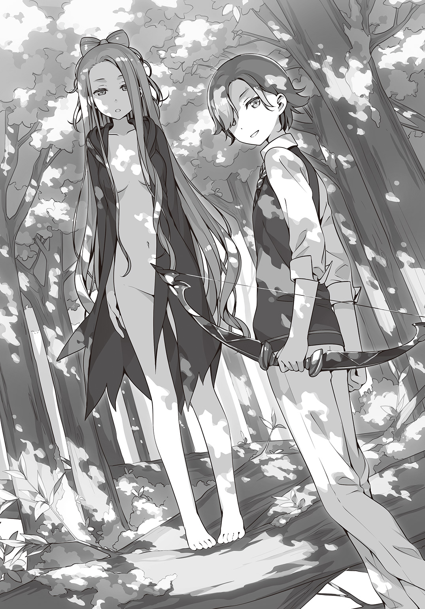
そう言って、アーサーさんがブンちゃんに顔を近づける。
「お久しぶり」
「ブゥンンブンブン！」
「......ええ、そちらも元気そうね」
前の時のように本当に会話してるみたいにやり取りを繰り返す二人を、私もトリスタン様も黙って見ているしかなかった。しばらくして、
「彼はあなたが心配だと言っている」
「私？」
「だから追いかけてきたと。今は、自分のねぐらを探しているとも言ってた」
「すごい！ やっぱり動物と話せるんだ！」
さすが森で動物と暮らしてただけある。
もしかしたらアーサーさんは本当に妖精やエルフの血が入ってるのかも。
「あの、それで、お願いがあるんですけど」
危うくまた空想の世界にトリップしそうになるのをグッと堪えて口を開いた。
「この子......ブンちゃんの住むところを探してて。私の家は動物を飼えないから......」
「それなら私たちの船で......」
「ブゥン！ ブゥン！」
「......そう。トリスタンと一緒は嫌だって」
「くっ......言うじゃないか毛玉め。ぼくだってきみとはお断りだ。だいたい、ぼくらの船にこれ以上動物を増やしたら寝るところがなくなってしまうよ。マーリンはきみに甘いけど、さすがにそろそろ限界だしね」
「......仕方ない」
アーサーさんは見て分かるくらいしょんぼりする。
私もしょんぼりだ。アーサーさんなら安心して預けられると思ったのに。
やっぱり、学園長さんを見つけて相談した方がいいのだろうか。
「それはダメ」
「うえ......!?」
「誰にも教えちゃだめ」
「え......ど、どうして？」
アーサーさんは答えない。代わりに森の奥を指差すとこう言った。
「この先に、あなたを助けてくれる人がいる」
アーサーさんに言われた通り、私とブンちゃんは森の奥へと進むことにした。
一人で行こうとする私をトリスタン様が送ろうと言ってくれたのだけど、なぜかアーサーさんに止められていた。
トリスタン様は、なにやらアーサーさんに耳打ちされた途端に真っ青になって「一緒には行けなくなった。すまない」と、怯えた様子で私に言ってきたのが謎だ。
そんなわけで、また一人と一匹の旅に戻った私たちが三〇分ほど歩いた頃だった。
『ハッ！ セイッ！ ハァッ！』
私たちが進む先から、なにか掛け声のようなものが聞こえてきた。
「なんだろね、ブンちゃん。ともかく行ってみようか」
「ブゥン！」
了承も得られたところでふたたび歩き始めた。
やがて、森の切れ間のような場所に着いた。
そこで、シュエメイさんたちが武術の型のようなものを演じていた。
シュエメイさんは、片足立ちになってゆっくりと腰を落としつつ、もう一方の足を地を這うようにゆっくりと大きく回転させる。上体を地面ギリギリまで落として、そこから一気に飛び上がる。思わず見とれてしまうようなキレイな動きだった。
シュエメイさんの動きに合わせてシュエランさんとシャオイェンさんも続ける。二人はきびきびとして素早く鋭く、シュエメイさんは流れるように優雅な動きだ。
素人目にもシュエメイさんが二人よりも上だと分かる。
「あら......葉月さん？」
型を演じていた中の一人、シュエメイさんが私に気づいた。
「あ、あのっ、邪魔しちゃってごめんなさいっ」
「いえ、ちょうど一段落ついたところですから。それにしても、こんなところまでどうされたのですか？」
「えっと、それは......」
「ブゥンブゥン！」
私が説明するより先にブンちゃんがシュエメイさんの足下に駆け寄った。
「この子はもしや龍穴で葉月さんが助けた子ですか。なるほど、事情は分かりました。お話なら私たちの小屋でいたしましょう」
シュエメイさんに誘われて、小屋の中に入った。
中は思った以上に質素でガスや電気すらなかった。
「ごめんなさい。お客さまを持てなすようにはできていなくて。今、シュエランたちが水を汲みに行ってくれています。戻ったらお茶を淹れますね」
「は、はい」
どうやら水道もないらしい。
「あの、ヘクセンナハトに出場する人には住むところが用意されてるって......どうしてそっちで過ごさないんですか？」
「これも修行ですから」
「しゅぎょう......ですか」
「私たちの国では魔法使いは仙人と呼ばれています。仙術を身につけた者の究極の目的は不老不死の神仙となること。それは厳しい修行の果てにようやく辿り着けるものとされているのです。ヘクセンナハトに出場することも修行ならば、こうして深山幽谷の中で自らの力のみで生きることもまた修行。つまり生きることのすべてが修行なのです」
「まあ、ヘクセンナハトには負けちゃったけどなー」
そんな話をしていると、シュエランさんが舌打ちをしながら戻ってくる。
「シュエラン、お行儀が悪いですよ」
「くそ、宝貝さえ全開で使えりゃあんなやつら」
シャオランさんは苛立ちもあらわに机を蹴りつける。
「おやめなさい。負けたのは私たちの功夫が足りなかったからです。師父に言われたでしょう。私たちは『原書』という大きな力を得たからこそ、より自分を律して修行に努めねばならない。あなたのその封印は、そのための枷です」
「だけどよ......！」
「姉ちゃんはいいよな、普通に戦えたんだから。あたしなんてとっておきの宝貝を封じられてたんだぞ。ちくしょう......」
「いい加減にしろこのバカ妹が！」
突然、シュエメイさんの鉄拳が炸裂した。
そりゃもう本気も本気のグーパンチである。シュエランさんは何メートルも吹っ飛ばされてゴロゴロと地面を転がった。
「アメリカ校に負けたことをいつまで引きずっているのですか！ あまつさえ負けたのは自分が本気を出せなかったからだと？ 思い上がりも甚だしい！ あなたはいま、仲間を侮辱したのですよ！」
その言葉は、拳よりもずっとシュエランさんにダメージを与えた。
シュエメイさんはうなだれる妹のもとに歩み寄る。
「失敗を悔いるのは当然です。しかし囚われてはいけません。大丈夫。あなたには誰にも負けない才能があります。生まれた時からあなたを見てきた私が言うのだから間違いありません」
「姉ちゃん......ごめん」
それは、初めて見せるシュエメイさんのお姉ちゃんの顔だった。
こんな状況でも、少しだけ心が温かくなる。
シュエランさんはすっかり落ち込んで小屋を出ていった。
「まったく、いつまでも子供なんだから......シャオイェン、悪いのだけどあの子に付き合ってあげてくれる？ いつもみたいに手合わせでもして発散させてあげて」
「......承知した」
寡黙に座っていたシャオイェンさんは、シュエメイさんに言われるとうなずいて後を追う。
「お見苦しいところを見せてしまいましたね。あの子は仙術の修行よりも武術の方が好きらしく、先日のアメリカ校との戦いに負けたのがよっぽど悔しかったようなのです」
シュエメイさんは戸棚から中国茶器を取り出して、慣れた手つきでお茶を淹れ始める。
しばらくすると日本茶でも紅茶でもない、不思議な香りが漂ってくる。
「さあ、どうぞ。一級品とはいきませんが、私のお気に入りの茶葉で淹れました」
小さな茶器をもらってお茶を飲んだ。香ばしくて、でもスーッと鼻に抜けるような不思議なお茶だった。
「あなたにはこれをあげましょうね」
ブンちゃんには薄く切った腸詰めのようなものが与えられた。
「この子は葉月さんのことを追ってきたのですね」
「たぶん......あの、それで実はお願いがあるんですけど」
「この子を預かってほしいのでしょう？ かまいませんよ」
「いいんですか!?」
「こんな場所ですから大した娯楽もありません。なかなか賢い子ですから、いるだけでもずいぶんと慰めになってくれるでしょう」
こんなに話が早いとは思わなかった。
アーサーさんの予言は侮れないかも。
「そういえば、初戦突破おめでとうございます」
「あ、ありがとうございます......」
「私も試合は見ていました。葉月さんには毎度驚かされますね。最初は『原書』を書き換え、今度は『原書』を修復した......。私たち魔法使いにとって『原書』とは決して侵してはならない領域にあります。仙人にとっての自然の摂理に等しい。力を借りることはあっても、それ自体になにかをするなんて考えもつきませんでした」
「私、やっぱり悪いことしたんでしょうか......」
「そんなことはありません。むしろ私に新たな道を与えてくれましたよ。不変であることが完全ではなく、絶え間なく変化することもまた中庸であると教わりました。ずっと、悩んでいたのです。私の中にある混沌、形を成さない力......おかげで少し受け入れられるようになった気がします」
シュエメイさんの話は難しくて私にはよく分からない。でも......
「私なんかで力になれたなら......よかったです」
私は静ちゃんとの約束を破ってしまったけど、こうして間違っていないと言ってくれる人もいる。少しだけ救われた気分だった。
「さてと......この子のことはお任せください。しばらくの間でしたらお預かりします」
「ありがとうございます。シュエメイさん。ブンちゃん、今日からしばらくここにいてね。大丈夫、毎日会いに来るから」
「ブゥン......」
お腹いっぱいになったブンちゃんは丸くなって眠そうにしている。
ほんと、暢気なんだから。
シュエメイさんに送ってもらって学園の近くまで戻ってきた。
「ここまで来ればひとりで帰れそうです。ありがとうございますシュエメイさん」
「次からはホウキで来るようにした方がいいですよ。森には人を惑わせる類の生き物もいますから」
「えっと、それが......まだ、ホウキに乗れなくて......」
「ホウキに乗れない......？」
シュエメイさんは驚いた顔をする。
「そういえば、葉月さんはあちらの世界から来たばかりでしたね。なのに、あれだけのことをやってのけた......本当に面白い方ですね」
うーん、褒められているんだろうか。それとも呆れられているのだろうか。
「葉月さん！」
その時、静ちゃんの声がした。
佐渡原さんや加澄さんと一緒に血相を変えて私に駆け寄ってくる。
「探しましたわ！ 佐渡原さんから森の方へ走っていったと聞いて......あなた、中国校の」
「リ・シュエメイです。そういえばちゃんとご挨拶してませんでしたね、土御門静さん」
「あ、あのね、シュエメイさんに送ってもらったの。だからぜんぜん平気」
「送ってもらった？ 森でいったいなにをしていたのです？」
「そ、それは......」
ブンちゃんのこと、言うべきだろうか。
でも、学園に連れてきたって分かったら、また静ちゃんと口論になるかもしれない。
だって私はまた静ちゃんとの約束を破ったのだから。
「わたくしには言えないことですの？」
「そ、そういうわけじゃ......でも、あの......」
静ちゃんの表情が険しくなっていく。
嫌われたくない。
そう思えば思うほど上手く言葉が出なくなっていく。
「分かりました。もうけっこうです。参りましょう、佐渡原さん加澄さん」
そう言うと、静ちゃんは踵を返す。
「え、でも......」
「いいの？ 静」
「無事は確認できたのですから問題ありませんわ」
「あ......」
静ちゃんは私に背を向けて行ってしまう。
なんだかすごく怒っていたように見えた。
「静ちゃん......」
「どうして同じ日本校の方でなく私のところに来たのかと思っていましたが、なにか事情があるようですね」
静ちゃんたちが去った後、シュエメイさんは気遣うように私に言う。
「......私が、悪いんです。静ちゃんとの約束を破っちゃったから」
「なるほど。ですが、私にはもっと別な理由があるような気がしますよ」
他の理由なんて思いつかない。
やっぱり、シュエメイさんの話は難しいよ。
いつになく重い足取りで帰宅すると、玄関で美沙さんが待ち構えていた。
コートを脱ぐ暇も与えてくれないまま強引にリビングに連れていかれ、さらには逃げないように両肩を摑まれてこう質問された。
「アンタ、ママとアタシ、どっちの味方!?」
「ふえっ!?」
わけがわからず、思わず変な声が出た。
「ねえ、どっちなのよ」
「そ、そんなこと急に言われても......」
困惑する私に、美沙さんはさらにとんでもない爆弾を投げかけてくる。
「アタシ、この家を出ていく」
「は......？」
「ひとりで海外を旅するの。ママは反対するからアンタはアタシの味方でいなさいよ」
「えええええええっ!?」
いったい何事!?
ただの思いつきにしか聞こえない美沙さんの決意表明についてもう少し詳しく聞くべきか、それともただ「応援するね！」と言ってスルーするべきか悩んだ。
「ちょっと、理由を聞きなさいよ理由を」
あ、やっぱり聞いてほしかったらしい。
「あの、どうして急に？」
なんだか流されまくっているなぁと思いつつも聞かないと解放してくれなさそうだし、なによりこんな美沙さんらしくないことを言うからには理由があるのだろう。
すると、美沙さんは待ってましたとばかりに話しはじめた。
簡単にまとめると、例のプロムで一緒に踊ったカレシさんが関西の方の大学に進学すると決めたことが原因らしい。推薦をもらった東京の大学に行くと思っていた美沙さんにとっては寝耳に水どころの騒ぎではなかった。
「信じられる？ あたしにひと言も相談なしでよ!? ひどくない!?」
「そ、そうなんだ。うん、良くないよね......」
「つーか京都とかありえないし！ あんな無駄に四角くて古くさい街！」
「それはさすがに京都の人に失礼じゃ......あ、ごめんなさい。なんでもないです」
ギロリと睨まれたので慌てて同意した。こういう時は意見を挟まずただ黙ってうなずいているべきなのだと学習した。
「そんなわけだからあたし、海外を放浪することにしたの」
「うん、ごめん。やっぱりよく分かんない」
わずか数秒で学んだことを放棄せざるを得なかった。
「あいつさ、あたしが京都まで追いかけてきてくれると思ってるっぽいのよ。ムカつくからむしろこっちから離れてやろうと思ったわけ」
なるほど。分からん。
「それだったら、別に放浪の旅じゃなくても留学とかでいいんじゃないかな？ ていうか別に外国である必要もないし。北海道とか、沖縄とかでも......」
「葉月......」
「は、はい」
「あんたの言う通りね。考えてみたらあたし野宿とか絶対無理だわ」
よかった。やっと冷静になってくれたみたい。
「あたしもちょっと興奮しすぎてたみたい。とりあえず海外留学でいくわ」
あんまり冷静じゃなかった。
「とにかく、ママは反対するに決まってるから用心して準備しなきゃいけないわ。あんたにも手伝ってもらうからね」
うう......やっぱり手伝うんだ。
「ハァ......美沙さんのこと、冴子さんに話した方がいいのかなぁ」
魔法学園に向かう道すがら、私は溜息交じりに呟いた。
結局、昨夜は作戦会議と称する美沙さんの愚痴に遅くまで付き合わされてしまった。
冴子さんからはなにか分かったら教えてほしいと言われているけれど、美沙さんからは「絶対にママには内緒だからね！」と口止めされているという板挟み状態だ。
ブンちゃんのことも考えなきゃいけないし、悩みの種は尽きない。
ふたたび溜息をこぼしながら、図書館の扉をくぐった。
「鍵村葉月さん、お待ちしていましたよ」
「うえっ!?」
いきなりの白銀先生登場に、溜息は引っ込んで代わりに変な呻きが漏れた。
「お、おはようございます白銀先生......あの、待っていたって？」
「それは、ついてくれば分かります」
そうして私は先生の後について歩き出す。
けっこうなお歳なのにやたら歩くのが速い白銀先生に置いていかれないよう必死でついていくうちに、気づけば学園長室の前にいた。
軽くノックをして中に入ると、そこには学園長さんだけでなく静ちゃんやシュエメイさん、それにあの怖い審判の人までいた。
「鍵村葉月君、きみに聞きたいことがあって来てもらった」
「は、はぁ......」
なんとなく不穏な空気を感じて、私は曖昧にうなずく。
「実は――」
「この汚らわしい動物はきみのペットかね！」
学園長さんの言葉を遮って、審判さんが怒りも露に指差す。そこには、
「ブンちゃん！」
檻に入れられたブンちゃんの姿があった。
なにがあったのか、昨日と比べてずいぶんとヨレヨレになっている。
「やはりきみか......」
学園長さんは、溜息をつく。
「このケダモノは私が朝食を食べているところへ突然現れたのです。そして、あろうことか私から朝食を奪おうと暴れまわりました。ご覧なさい、この傷を！」
これでもかと審判さんが自分の頰を指差す。確かに、痛々しいひっかき傷がいくつもついている。サイズ的にもブンちゃんのものだろう。
「リ・シュエメイ君がなにも言おうとしないので何人かに話を聞かせてもらった。するとどうやらこの動物ときみに浅からぬ因縁があると分かった」
「ごめんなさい葉月さん。この子、思った以上に賢くて縄も檻もいつの間にか抜けてしまうんです」
そういえば、ブンちゃんは熱海の魔法の結界すらも突破してきたんだった。
私の方こそ考えが甘かった。
「ともかく！ このような危険な生物を学園に持ち込むとはあるまじきこと。厳重な罰をあたえるべきですな！」
「それについては検討しますが、今はヘクセンナハトの真っ最中です。彼女は日本校の大切なメンバーですから処罰は保留にしたいと思います」
「ぐっ......」
審判さんは、学園長の強気な態度に言葉をつまらせる。
「で、では、そこのケダモノだけでもさっさと処分なさい！」
「処分って、ブンちゃんをどうするんですか？」
「人に危害を加えたケダモノの末路など一つしかありません」
審判さんは嫌味たっぷりに言う。そのいやらしい笑みでだいたいのことは察した。
「ブンちゃんはなにも悪くないです！ 私を追いかけてきちゃっただけで、この後ちゃんと住んでいたところに帰します！」
私は咄嗟にブンちゃんをかばうように審判さんの前に飛び出した。
「審判どの、たかが動物がやったことです。処分するほどのことでは」
「学園長のおっしゃる通りです。今後はこのリ・シュエメイがしっかりと見張るようにしますので、どうか怒りをお鎮めください」
「私にケガをさせたのですよ！ 十三人委員会よりヘクセンナハトの審判という大切な役目を仰せつかったこの私に！」
そうやって、私やシュエメイさんがブンちゃんをかばったのが余計に怒りを買ったのだろう。
審判さんはズカズカと檻に向かっていくと、途中に立ちふさがっていた私の肩を摑んで乱暴に突き飛ばした。
「きゃっ」
私はたまらず床に尻餅をついた。その時――
『ブゥゥゥゥン！』
それは、いつものブンちゃんの鳴き声じゃなかった。
ブンちゃんの身体から発せられるその音は、周囲の空間が歪んで見えるほどに激しく空気を振動させていく。小さな身体を閉じ込めていた檻は内側からひしゃげて、あっという間に破壊されてしまう。普通の生き物の力じゃない。それは、間違いなく魔法の力だった。
『ブゥゥゥゥン！』
ブンちゃんは、さらに身体を振動させて今度は審判さんに狙いを定めた。
「ひいいいいっ！」
いけない。そんなことをしたら――
「ダ、ダメ！ ブンちゃん！」
私はもう一度立ちふさがった。今度は審判さんをかばうために。
「うう......！」
覚悟して目をつむっていたけれど、いつまで経っても痛みはやってこなかった。
代わりに、いつものブンちゃんの鳴き声が聞こえてくる。
「ブゥン......」
気遣うように私を見上げるブンちゃん。
「私を守ろうとしてくれたんだよね。ありがとう。それから......ごめんね」
誰もが言葉を失ったように沈黙していた。
私はブンちゃんをそっと抱きしめた。
この先起こる出来事から、ブンちゃんを守るように。
第五章 千と五百年の孤独
原書『分福茶釜』。
それがブンちゃんの正体だった。
最初はブンちゃんが『原書』の契約者だと思われていたけれど、途中でそうじゃないということが分かった。
ブンちゃんには心臓もなければ血液もない。
そこには『原書』が魔力で作りだした〝かたち〟があるだけ。
心もない。体もない。命すらない。
すべてが作り物だとみんなが言った。
でも......命ってなに？ 心ってどこにあるの？
ブンちゃんを抱っこしたときに私が感じたあの〝温かさ〟は偽物じゃない――。
＊ ＊ ＊
「非常に希有な事例です」
男はやや興奮気味に語り始めた。
「『原書』については多くのことが謎のままです。ただ、『原書』は〝シミ〟に対抗するために生まれたのではないかと言われています。『原書』が契約者を欲することそのものがこの説を裏付けており、最近では『シンデレラ』がその例となるでしょう。これは『原書』によるなんらかの防衛反応ではないかと考えられ――」
「考察はいい。結論を言いたまえ」
「つまり、あの動物もまた原書の防衛反応の一種ではないかと。〝シミ〟の危険から逃れるために移動可能な形態を自ら作りだしたという可能性があります」
「なるほど。『原書』が人間以外の生物を契約者に選んだわけではないということだな」
魔法界を束ねる老人たちを前に、男は黙ってうなずくしかなかった。
「これで納得がいった。『原書』が獣ごときと契約をするなどありえん話だ」
「まったくもってその通りだ。『原書』は我ら魔法使いの手によってのみ紐解かれる神聖なもの」
「すぐにその疑似生物を消してしまえ」
「ですが『原書』が疑似的な生物を作ったという貴重なサンプルが......」
男は食い下がる。だが、魔法使いの長たる十三人が一介の研究者の言葉などに耳を貸すはずもなかった。
「必要ない」
「また、崇神の娘がうるさく言うやもしれませんな」
「あそこにはアメリカの連中もいる。当然、日本政府を通して圧力をかけてくるぞ」
「忌々しい。魔法使いの血を汚す拝金主義者どもめ」
「では、アガーテにやらせましょう」
しわがれた老人たちばかり集まるその部屋の中で、その声はやけに若く快活としていた。
「彼女なら速やかに、かつ冷静に事を運んでくれるでしょう」
静は自分がどうしてこんなにもイライラしているのか分からなかった。
最初はロシア校との戦いで葉月が自分の言いつけを破った時だった。
その次は、彼女がリ・シュエメイと一緒にいるのを見た時。そして原書『分福茶釜』が見つかった時だ。
ただ、静の知る鍵村葉月ならタチアナの窮状を見過ごせるはずがないと分かってはいた。
実際、彼女が傷ついた『原書』を修復するということをやってのけた時、最初はとても誇らしい気持ちだったのだ。
だが、同時に訳もなく憤りが込み上げてきたのを覚えている。
それが自分との約束を破ったことへの怒りではないと気づいたのは後になってのことだ。
それからというもの、葉月のやることなすことがいちいち気に障る。
リ・シュエメイとやけに親しげにしていることも、原書『分福茶釜』のこともだ。
「土御門静」
名前を呼ばれて、静は渦巻く感情をいったん飲み下して顔を向けた。
この会議室では、各校の代表が集まり原書『分福茶釜』が生み出した疑似生物の処遇と所有権について話し合われていた。
『原書』の所属について明確に決められたルールはない。新しい『原書』は原書図書館の中で生まれるので、その時点で自動的に所蔵先が決定されるからだ。
そのため、葉月の『シンデレラ』や今回の『分福茶釜』のようにイレギュラーなかたちで出現した場合はいつも揉めることになる。
『シンデレラ』は葉月が日本校への所属を希望したため、彼女の意思が尊重されたものの、今回の場合は尊重すべき意思が存在していない。
「きみの意見を聞かせてほしい。あれをもとの『原書』に戻すにはどうすればいいのかを」
「可能か不可能かで言えば、可能だと思います」
静はつとめて冷静に答える。
「おそらく、あれはブーフ・ヒュレに近いものだと思われます。通常は破壊すれば『原書』本体にも破損がおよびますが、ある空間においてならブーフ・ヒュレだけを破壊することが可能です」
「なるほど......『ヘクセンナハト』か」
学園長は、考え込むように顎を撫でた。
儀式魔法ヘクセンナハトによって作られる空間の中ではいくつもの現実とは違う法則が適応される。その一つに〝ブーフ・ヒュレを破壊されたものは失格。空間外への強制退去〟というものがある。静の提案はそれを逆手にとったものだった。
「確かに、その方法なら安全にアレを『原書』に戻すことができるな」
ドイツ校のアガーテ・アーリアは一貫して『原書』として回収するべきと主張している。静とは意見を同じくするわけだが、それとて自国の所蔵原書としたいがためだ。油断はならない。
原書図書館の蔵書数はそのまま各校の戦力に繫がり、魔法使いを束ねる十三人委員会での発言力にも関わってくる。文字通り、十三人の理事が権力を握る場所で五年ほど前に日本は理事国から外されてしまっている。それは静にとっても忌まわしいあの事件のせいだった。
「『原書』の安全な回収のため、審判どのには『始祖の書』を開くことを許可願いたい」
「『始祖の書』は本来ヘクセンナハトのためのものなのですが......いたしかたありませんな」
話がまとまろうとしていると思われた時、乱暴に扉を開いて葉月が飛び込んできた。
「葉月くん、君には謹慎を申し渡していたはずだが」
「ごめんなさい......でも、どうしても言いたいことがあって......お願いします！ ブンちゃんを消さないでください！」
チクリと静の胸が痛む。それと同時にふつふつと怒りも湧いてくる。
「葉月さん、今すぐここから出ていってください。あなたに発言する権利はありません」
「静ちゃん......でも、ブンちゃんは......あの子は生きてるんだよ......？」
「それはあなたの思い込みです。あんなもの......ただの魔法の現象でしか」
なぜか、葉月の顔を正面から見られなかった。
悲しげな瞳は、なぜか自分を責めているように感じられた。
すると中国校のリ・シュエメイが口を開いた。
「私もブンちゃんを消滅させるということには賛同できかねます」
「私もだ。『原書』の安全ももちろんだが、同志ハヅキの言う通り一つの命であると考える」
「ブンちゃん......とはなんだ」
アガーテはいぶかしげに聞き返す。
「葉月さんがつけたのです。新しい命です。名前くらいあってもいいでしょう？」
「なるほど、ブンちゃん......ブンちゃんか......」
なにか琴線にでも触れたのか、アガーテはその名前を繰り返していた。
一方でシュエメイの口から葉月の名前が出ると、静の心はざわつくばかりだった。
「あれはただ動物のかたちを模しているだけのものですわ」
「それは狭量な考えというもの。五行より生まれたものは等しく命。まして、あの生き物が龍脈の影響を受けているのは明白。人の身でおいそれと処遇を決めて良いものではありません」
「その件で議論を続けても仕方あるまい。他の者の意見も聞きたい」
剣呑な雰囲気になりつつあった静とシュエメイを止めて、学園長は先ほどからほとんど意見を挟まない各校のリーダーたちに問う。
「妾は興味ない。『原書』があのような獣に成り下がるなど美しくないからのう。そなたらでいかようにもするがよい」
マハーカーリーは退屈そうに爪をいじりながら言った。ドイツ校に次いで圧倒的な蔵書量を持つインド校にとっては一冊の『原書』の処遇などどうでもよいことらしい。それとも、ヘクセンナハトで早々に敗北を喫して単にふて腐れているのかもしれない。気まぐれで知られるマハーカーリーであればありえないことではなかった。
「私も......彼を消すのは嫌」
イギリス校のアーサー・ペンドラゴンが加わったことで、三対二になった。
「じゃあ、あたしはアガーテちゃんの方につこっかなー」
「リン・デイヴス。おまえはあの疑似生命を残すべきだと主張していたと思うが」
「あたしがほしいのは貴重なサンプルなの。別に動物愛護の真似事がしたいわけじゃないしー。そっちの博愛主義者さんたちは、きっと解体とか解剖とかさせてくれないでしょ？」
残ったリンが急に手の平を返したことで、三対三のイーブンになった。あえて葉月を入れるとすれば四対三だ。
多数決で決めようと打ち合わせていたわけではないが、こんなふうにきっぱりと意見が分かれてしまっては早急に結論を出すのは難しくなりそうだ。
「では戦って決着をつけたまえ」
会議が長引きそうなことに静が内心でうんざりしはじめていた時、学園長が口を開いた。
「古来より、学園ごとに意見が対立した時は代表するメドヘン同士が戦って決着をつけるのが習わしだ。賛成の者と反対の者がそれぞれ三人でチームを組み戦う。『原書』の処遇は勝者の意見に従うことにすればいい」
「学園長！ あのケダモノは私に危害を加えたのですよ！ 即刻処分すべきです！」
「まあまあ、審判どの。これでヘクセンナハトへの捧げ物が増えるのです。始祖の皆様もきっと喜ばれるはず」
「む、むう......しかしですな......」
静は学園長らしからぬ提案に驚いていた。
てっきり、リ・シュエメイたちの意見に賛同するとばかり思っていた。
「いいだろう。私に異存はない」
やはり最初に同意したのはアガーテだ。
「あたしもオッケーよ」
リンはニヤリと笑う。
「静くんも、同意するかね」
「え......はい」
静は半ば反射的にうなずいた。
最後に学園長はシュエメイたちに向き直ると、
「きみたちそれでかまわないかね」
シュエメイとマリヤがうなずく。視界の端で、シュエメイと葉月が目配せをしているのが見えたが静は気づかないフリをした。
「私は出ない」
アーサーが唐突に言った。
「代わりに、鍵村葉月をメンバーに加える」
「え、えええええええっ!?」
葉月の驚いた声が響き渡った。
同時に静の心はひどくかき乱されていた。
＊ ＊ ＊
「私がリーダー!?」
予想外の展開になった〝ブンちゃんをどうするか会議〟が終わって、私はさらに予想外のことをシュエメイさんたちの口から告げられた。
「む、無理無理！ 無理です！ 私がリーダーだなんてぜーったい無理ですから！」
私は半分泣きそうになりながらシュエメイさんに訴える。
「私たち代表同士の話し合いでは平行線だったのです。あのまま続けていれば十三人委員会の横やりが入っていたことでしょう」
「だろうな。そうなればあのタヌキの命はおろか『原書』すら持っていかれていたかもしれん。学園長どのはそのあたりを考慮したのだろう」
シュエメイさんやマリヤさんの話は私には難しくてよく分からない。とにかくその十三人委員会という人たちがヘクセンナハトを仕切っていて、あれこれ無茶を言ってくるということだけは、なんとなく理解できた。あのいやーな感じの審判さんがいるところだもんね。でも......
「だからって、静ちゃんと戦うなんて......どうしてそんなことになったんですかぁ......」
リーダーなんていう立場も私には荷が重すぎるけど、それよりなによりこっちの方が問題だ。だって、静ちゃんが敵だなんて......
「やっぱり私には――」
「ダメよ」
無理だと言おうとしたら、アーサーさんが私の言葉を遮った。
「葉月には参加する理由がある」
「それは......」
アーサーさんの言う通りだ。
私にはブンちゃんのことに責任がある。
無理だ無理だと怯えて逃げ回っていたら以前と同じじゃないか。
「わ、分かりました......やりますっ」
私が言うと、シュエメイさんもマリヤさんも微笑んでくれた。
ついこの間まで敵だった人たちが、今は不思議とチームって感じがした。
「葉月さんが参加すべきというのは分かりますが、なぜ、今になって辞退を？」
「これは私の役目じゃない」
シュエメイさんの少し咎めるような言葉も、アーサーさんはあっさりと受け流す。
「そういえば、イギリス校は一回戦もシードでしたし、予選ではアーサーさんを抜いた四人で戦っていたそうですね。そうまでしてなにを隠しているのですか？」
「............」
アーサーさんは答えない。相変わらず感情の読み取れない瞳でジッとシュエメイさんを見つめているばかりだ。
「答えるつもりはないということですか」
先に根負けしたのはシュエメイさんだった。というより聞いても無駄だと悟ったのかも。
「時が来れば分かる」
なんとも意味深な言葉を残してアーサーさんは去っていった。
すると、今度はマリヤさんが申し訳なさそうに切り出した。
「悪いが、私も辞退したい。相手にはアガーテ・アーリアと土御門静の二人がいる。三強と言われているうちの二人を相手にするのだ、悔しいが私の魔法では足を引っ張るだけだろう。他に各校のリーダークラスの力を持った者を探してくれ」
マリヤさんの言う通り、ロシア校の人たちが実はあまり戦いに向いた魔法を持っていないというのは、実際に戦ったことのある私はよく知っている。私だって似たようなものなんだけど。
「リーダークラスとなると、すぐに思いつくのはインド校のマハーカーリーさんですが、望みは薄いでしょうね」
リーダークラス......静ちゃんやアガーテさん、リンさんとも互角に戦える人......いる。
「あ、あの！ 私、ひとり心当たりがあります！」
「アタシに助っ人を頼みたいだぁ？」
私たちがチームに入ってほしいと頼むと、カザンさんは思いのほか驚いた様子だった。
ここのところずっとバイトしているレストランはヘクセンナハトの観戦にやってきたお客さんたちで連日大盛況らしく、めいっぱいシフトが入っていると私に愚痴をこぼしていたので、カザンさんもまさかそんな誘いが来るとは思ってもみなかったのだろう。
「い、忙しいと思うんだけど、カザンさんの力が借りられたらすごく助かるっていうか......」
「やるさ。やるに決まってんだろ」
「へ......？」
「オマエには借りがあるからな。そいつを返すいい機会だ」
「ほ、ほんとに!? ありがとうカザンさん！」
よかった。カザンさんが仲間になってくれたらそれこそ百人力だ。
「つーか、いい加減このヒラヒラした制服着て愛想振りまくのは限界だったんだ！ どっかで発散しねぇとやってらんねぇ！ しかも相手がリンに静ときたら断る理由なんかねぇだろ！ やる！ ていうか殺る。ふ......ふふふ......くくくっ......」
「あ、あの、できれば穏便に......」
レストランのバイトはだいぶストレスのたまる仕事だったらしい。
なにはともあれ、カザンさんが二つ返事でＯＫしてくれて良かった。
私がホッとしていると、レストランの店長さんらしき人が裏口から顔を出した。
「お、いたいた。ユーミリアちゃんまた混んできたからそろそろ......」
「はぁい、いまもどりまーす♥」
今、カザンさんの口から信じられないくらいカワイイ声が出たような......。
「おい、葉月」
「は、はい！」
「今のは忘れろ。いいな？」
「う、うん......」
うなずきつつも、しばらくはカザンさんの輝くような笑顔が頭から離れそうになかった。
無事、カザンさんが一緒に戦ってくれることになったと報告するために、シュエメイさんたちのところへ戻ってくると、小屋の前でなにやら揉め事が起こっていた。
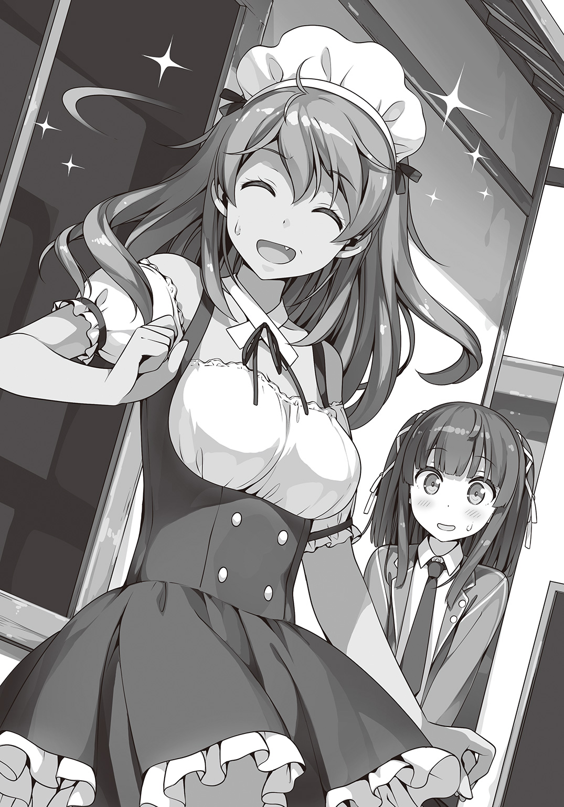
揉めているのはシュエランさんとシャオイェンさんだ。
普段はコンビみたいに仲がいいのに、どうしたんだろう......
「シャオイェン......おまえ、今、なんつった？」
「おまえがメンバーに加わっても足手まといだと言ったんだ」
シュエランさんのこめかみがピクリと動く。
「さきのアメリカ校との一戦、敗因はおまえの勇み足だ」
さらにシャオイェンさんの容赦ない言葉が浴びせられた。次の瞬間、シュエランさんの如意棒がシャオイェンさんの頭に目がけて力任せに振り下ろされた。
「ひうっ!?」
それこそ大ケガをしてもおかしくない一撃に、私は思わず小さく悲鳴をあげてしまう。
だけど、シャオイェンさんは眉ひとつ動かさずにそれを受け止めた。
「てめぇ、もっぺん言ってみやがれ！」
「何度でも言ってやる。おまえはいつも考えが足りない。すぐに熱くなる。だからリン・デイヴスのような狡猾な相手にいいように手玉にとられる」
「偉そうに上から目線でご高説垂れやがって......その先はあたしを倒してからにしやがれ！」
「是非もない。最初からそのつもりだ」
ガンガンガンと如意棒と青龍偃月刀がぶつかり合う。
こ、これはどう見てもケンカってレベルじゃない！
そう思った私は大急ぎで小屋の中に駆け込んだ。
「お帰りなさい葉月さん。勧誘は上手くいきましたか？」
「う、うん。それはバッチリ......って、それどころじゃ！ そ、外でシュエランさんとシャオイェンさんが！ こう、ガンガン！ って！」
「心配しなくても大丈夫ですよ。それより、お茶を淹れましょう」
「あの......止めなくてもいいんですか？」
「ええ、いつものことですから」
シュエメイさんはいたって落ち着いた様子でお茶の準備をはじめてしまった。
「あれはシャオイェンなりに励ましているのです」
励ましって......なんか、もの凄い音がしてたんですけど。
「妹は勝ち気に振る舞っていますが、根は繊細であれこれ自分の中で抱え込んでしまうのです。だからシャオイェンが時々ああやって発散させてやっているのです」
「そうなんだ......」
いつも元気なシュエランさんにそんな内面があって、シャオイェンさんも寡黙で冷静に見えて友達のために嫌な役目を買って出るようなところがあるなんて。
人は見かけによらないって、こういうことかもしれない。
「そう、人の心にも陰と陽があります。強さと弱さを知ること。これも師父の言葉です」
「あの......どういう意味......」
「葉月さんは、土御門静さんを強い人だと思いますか？」
思う。だって、静ちゃんはいつだって私の目標だったし、これから先もずっとそうだ。
弱い心なんて、あるはずがない。
だから私はシュエメイさんの言葉に迷わずうなずいた。
「葉月さんは、土御門静さんが大好きなのですね」
「え、あ、あのっ......！」
その通りなんだけど、他の人に言われるとなんだか照れてしまう。なんでだろ。
「明日はお互いにきちんと想いをぶつけましょう。勝つにしろ負けるにしろ、必ず見えるものがあるはずです」
シュエメイさんはどこか遠くを見るような顔で私に告げた。
小屋を後にした私は、とぼとぼと森を歩いていた。
自分で決めたはずなのに、いまだに静ちゃんと戦うことに不安があった。
静ちゃんは正しい。メドヘンならそうすべきだ。
頭では分かっているのに、どうしても認められない。受け入れられない。
以前の私ならこんな風に自分の気持ちを押し通そうとすることなんてなかったのに、なぜか静ちゃんが相手だとどうしても引くことができなかった。
「おい、そこのタヌキ娘」
ハァと溜息をついたその時、頭の上から声がした。
見上げると、木の上にボロボロのシュエランさんがいた。
「タヌキ娘、聞こえてんだろ。おい」
「た、タヌキって私のことですか!?」
「そうだよ」
ひょいっと地面に降りてくる。
「あの妙なタヌキを連れてきたのおまえだろ？」
「あ......」
なるほど、だからタヌキ娘か。別に私がタヌキっぽいわけじゃなかった。
「あの、私、葉月です。鍵村葉月」
「葉月か......あたしはシュエランだ。って、もう知ってるか」
知っているけど、こうして二人で話すのは初めてだった。
お姉さんのシュエメイさんと違ってシュエランさんは活発な体育会系女子って感じだ。
学校だったら私とは接点がないような感じ。
シュエランさんはなにやらソワソワとしていた。なにか私に用があるようにも見えるし、そうじゃないようにも見える。これはひとつ話題を振った方がいいのかも。
「あ、あの！ シャオイェンさんとの勝負ってどうなったんですか」
「ああ......？」
うひっ、いきなり不機嫌になった！
うう......やっぱり相性悪いかも。
「あたしが勝ったよ」
と思ってたらシュエランさんの方から話してきた。ただ、どことなく不満げだ。
「いつもあいつはあたしに花を持たせるんだ。要するに最後の最後でわざと負けるんだよ」
「えっと、どうしてそんなことを......？」
「そりゃ......なんでだ？」
「なんででしょう......」
私に聞かないでほしい。
「とにかく！ 姉ちゃんもあいつもいつもいつもあたしを子供扱いしやがるんだ！」
「子供扱いかぁ。でも、それってシュエランさんのことが好きだから、だよね」
「ハァ!? なんでそうなる！」
「だって、好きじゃなかったら心配しないし、カワイイと思ってるから優しくするわけで......それが子供扱いってことなんじゃないかなぁと」
気づくと、シュエランさんが私をマジマジと見ていた。
「おまえ、変なやつだな。姉ちゃんが言ってた意味がなんとなく分かった気がする」
「あの、シュエメイさんが言ってた私のイメージって......？」
「〝常識に囚われず、他者の言葉によく耳を傾ける。そして過去に学ぶことを疎かにしない〟」
シュエメイさんの真似をしているらしく、シュエランさんがすました顔で言った。
それにしたって褒めすぎだと思うよ......。
「姉ちゃんがあそこまで人を褒めるのを初めて聞いた。あたしだって褒められたことなんてほとんどねぇのに......」
「シュエランさんは、お姉さんと仲いいんだね」
「はぁ!? な、なにを急に！ てか、変なこと聞くんじゃねぇ！」
「ご、ごめんなさい！」
なにか聞き方がまずかったのだろうか。私からしたらシュエランさんは、いつもお姉さんのことを意識しているように見えるんだけど。
姉妹の関係って私にはまだよく分からない。
「あのね、私にもつい最近姉ができたんだ」
雑談のつもりで、私は言葉を続ける。
「美沙さん――私のお姉さんは、美人で頭が良くてオシャレで学校でも人気者で、私なんかぼっちで頭もそんなによくなくて、だから一緒にいても退屈させちゃうんじゃないかって......って、ごめんね。こんな話、急にされても迷惑だよねっ」
「んなの、あたしだって同じだよ」
私の言葉を遮るようにシュエランさんが語り始める。
「あたしらの住んでたとこは治安もくそもねぇひでぇ街でよ。どいつもこいつも金のためならなんでもする悪党ばっかだった。そんなとこだから、ガキはすぐ大人の食い物にされちまう。自然とガキはガキ同士で集まって助け合うようになってた。シャオイェンたちもそこの仲間だった。リーダーは姉ちゃんだ。なにせケンカで姉ちゃんに勝てるやつはひとりもいなかったからな。大人でも姉ちゃんが通ったら慌てて路地に逃げ込んでたよ」
あの穏やかなシュエメイさんが不良......うう、ぜんぜん想像つかない。
「気がつきゃあたしらのチームは街でも一目置かれる存在になってた。調子に乗ってたんだな。その頃は世の中に怖いもんなんかねぇと本気で思ってた。だけど、ある時、本物のマフィアに手を出しちまってよ。姉ちゃん、ひとりで詫び入れに行ったんだ。誰もついてくるなって」
そういうところは、シュエメイさん昔から変わらないんだ。
でも、本物のマフィアのところに子供が一人で乗り込んでいって大丈夫だったんだろうか。
「あ、あの、それでシュエメイさんはどうなったの？」
「ん？ ああ、次の日けろっとして帰ってきた」
「え......」
「変な酔っ払いのじいさんが助けてくれたって、すっげー興奮しながら話してくれた。とにかく強くて、手も触れずに相手を吹っ飛ばしたとかなんとか。まあ、そのじいさんってのがあたしらの師父なんだけど」
その謎のおじいさんは仙人で、シュエメイさんは頼み込んで弟子にしてもらったらしい。もちろん今度はシュエランさんたちも一緒についていった。
「アジトで姉ちゃんの帰りを待ってる間、悔しくて悔しくて、でも後から乗り込んでいく勇気もなかった。粋がったあたしらが調子こいて、マジでやばい連中を怒らせたってのに、ぜんぶ姉ちゃんにおっかぶせてアジトで震えてたんだ。情けなかったよ。だからもう二度と姉ちゃんに置いていかれねぇようにしようって決めたんだ」
そっか......。
シュエランさんにとって、シュエメイさんはお姉さんであると同時に目標でもあるんだ。
勝ちたいわけじゃなくて、ただ単に自分を認めてほしいわけでもない。隣に並んで一緒の方向に歩いていきたい。そんな相手。
私にとっての静ちゃんと同じだ。
それが分かると、少しだけシュエランさんが身近に感じられた。
「シュエラン、こんなところにいたのか」
すると、シュエランさんと戦っていたというシャオイェンさんが探しにやってくる。
「んだよ、シャオイェン。今日はもう勝負はしねーぞ」
「分かっている。単に夕食の支度をするから呼びに来ただけだ」
「もうそんな時間か......。おい、葉月」
「は、はい！」
「今日は......その......ありがとな」
「へ......？」
照れくさそうに頰を搔きながら、シュエランさんは言った。
「驚いたな。シュエランが素直に感謝の言葉を口にするとは」
「うっせ！ あたしだって礼くらいわきまえてるんだよ！」
怒鳴ってから、シュエランさんは私に向き直る。
「ヘクセンナハトでは師父から本気を出すのを禁じられてたが、マジの姉ちゃんはめちゃくちゃ強ぇからな。ぜってーおまえの力になってくれる」
「う、うん。私もシュエメイさんには感謝してるんだ」
「そっか。ならいい。じゃあな。またメシ食いに来い」
そう言って、シュエランさんたちは肩を並べて去っていった。
シャオイェンさんが手加減したのかどうかは私には分からないけれど、最初の険悪な雰囲気とは打って変わって、終わった後はすっきりした顔だった。
不思議だった。
あれだけケンカしたのに、どうしてすぐ仲良くなれるんだろう。
明日の戦いが終わったら、私と静ちゃんもあんなふうになれるだろうか。
それとも......。
ううん、今は考えるのはよそう。
ブンちゃんのためにも明日は絶対に勝たないといけない。
そのために、シュエメイさんたちとたくさん作戦会議をしたんだから。
「静ちゃん......いま、どんなこと考えてるんだろうな......」
不安と、ほんの少しの高揚を胸に私はその日の夜を過ごした。
翌日は日曜日だった。
私は、いつもよりちょっとだけ遅く起きて朝ご飯の支度をした。
相変わらず美沙さんと冴子さんは冷戦中だけど、きちんと二人の分も用意してそれぞれの部屋に声をかけに行くことにした。
「冴子さん、朝ご飯作りました。今日は寒いから雑炊にしてみました。えっと、昨日のごはんの残りと年末に冴子さんがもらってきたカニ缶を使って作りました。後で温め直してもいいけど、できたら温かいうちに食べてほしいです」
返事はなかった。でも、微かに物音がしたので聞こえているとは思う。
今度は廊下を挟んで反対側にある美沙さんの部屋に向かう。
「美沙さん、朝ご飯作ったよ。私はちょっと用事があるから一緒には食べられないけど......」
そこまで伝えて、いったん言葉を句切る。
「あのね、実は私も友達とケンカしちゃったんだ。それで、しばらく口を利いてないの。ほんとは仲直りしたい。前みたいに楽しくおしゃべりもしたい。でも......やっぱりできない。怒ってるとかそういうことじゃなくて、相手が間違ってるから許せないっていうのとも違ってて......うんとね、上手く言えないんだけど、とにかく今日これからちゃんとぶつかってこようと思うの。じゃないといつまでもこのままな気がするから」
やっぱり返事はなかった。
小さく溜息をついて部屋へと戻ろうとした時だった。
「あー、もう。なんなのよほんと」
乱暴に扉を開けてパジャマ姿の美沙さんが出てきた。
「ご、ごめんね。起こすつもりじゃ......ふべっ」
「アンタねぇ......あんな話しされたら無視して寝てられるわけないでしょ。このっこのっ」
少し不機嫌そうに、美沙さんは私のほっぺたをむにゅむにゅと摘まむ。ちょっと痛い。
「この歳になって子供に諭されるなんて、本当に困ったものだわ」
そう言いながら、冴子さんも部屋から出てくる。
「すぐに朝ご飯食べられるようにするね！」
台所に踵を返そうとした私を、冴子さんが止める。
「後は自分たちでできるから。行ってきなさい」
「そうよ。アタシもちゃんとママと話すから。それから......アイツとも」
美沙さんは後押しするように、どんと私の背中を叩く。
「うん！ 行ってくるね！」
私は部屋に戻ると大急ぎで出かける支度をはじめた。
カバンの中に着替えと本を詰め込みながら、私が初めて一歩を踏み出したあの日のことを思い出していた。
あれからまだ一カ月ちょっとしか経ってないとは思えないほどいろんなことがあった。
楽しいことばかりじゃなかったし、間違ったこともたくさんしたかもしれない。
でも立ち止まっていてはなにも変わらない。少なくとも前に進めば違うものが見えてくる。
最後に『原書』を、私の、私だけの『シンデレラ』を手に呼びかける。
「また、力を貸してくれる？」
本はなにもしゃべらない。
だけど物語は、いつだって私に語りかけてくれる気がした。
更衣室でいったん着替えてから、私は集合場所のグラウンドに向かった。
「なんだぁ？ その格好」
遅れてやってきた私をしげしげと見て、カザンさんが間の抜けた声を出す。
それも当然。私は学園長さんにもらった体操着を着ていたから。
「これは、気合いを入れるためですっ」
どうせ戦いが始まったら変身してしまうんだけど、気構えっていうのは大事だと思う。
この体操着を着て、静ちゃんと一緒にたくさん特訓した。
だからあえてこの格好なのだ。
そんな決意をこめて静ちゃんを見つめた。
「............」
だけど静ちゃんはなにも言わず、そっと目を逸らした。
冷たい態度が少しだけつらい。
「似合ってますよ。その衣装」
すると、シュエメイさんが微笑みながら私に言った。
「なかなか動きやすそうだな。姉ちゃん、あたしらも練習中はこれにしてみるか」
「一応、日本校の伝統の衣装......らしいですよ」
ちょっぴり自信ないけど。
「同志カギムラ。体調は万全か？ 作戦はしっかり頭に入っているな？」
「は、はい！ マリヤさん」
みんなで考えた作戦だ。ゆうべ寝る前に何度も復唱して覚えた。
「それぞれメンバーも揃ったようだ。時間にはまだ少し早いが始めよう」
学園長さんが私たち両チームの間に進み出る。
今日のこの戦いはヘクセンナハトの本戦じゃないから観客はほとんどいない。
各校の残るメンバーがちらほらいるだけだ。そこにシュエランさんを昨日手荒く送り出したシャオイェンさんや、加澄さん、佐渡原さんの姿が見えた。
そういえば二人ともしばらくお話ししていない。いま、どんな気持ちなんだろう。
静ちゃんとの約束を破って、こんなふうに敵になってること怒ってるかな。
「『原書』『分福茶釜』をここに」
その言葉に私は思わず顔をあげた。
審判さんのもとにブンちゃんの閉じ込められている檻が運ばれてくる。
ブンちゃんは元気がない様子で、グッタリと寝そべっていた。
「ブンちゃん......！」
思わず駆け出しそうになる私を、シュエメイさんが無言で制止する。
そうだ。焦っちゃダメだ。
「本来であれば所有権は『原書』が出現した国が優先されるのですが、貴重なサンプルということもあり、その処遇について大きく意見が分かれました。よって、古来からのやり方で結論を出すことになりました」
そういえば、〝古来からのやり方〟ってなんだろ？
「ねえ、静ちゃん古来からのやり方って......」
そこまで言って、私ははたと気づく。隣にいたのはシュエメイさんだ。
いつもの調子で静ちゃんに聞こうとしていた。
「国同士の争いをヘクセンナハトで戦って決着をつけていた時代があったのです」
シュエメイさんは察してくれたのか、質問にだけ答えてくれた。
「そっか、ヘクセンナハトなら人は死なないから」
「というより、その頃は世界中が戦争をしていましたから、そうでもしないと『原書使い』の力が人を傷つけることに使われてしまいかねなかったのです」
個人同士だって簡単には分かり合えないんだから、大勢になったらもっと大変だろう。
「でも、やっぱり相手をやっつけた方が勝ちなんだね」
「どういう意味でしょう？」
「えっと、せっかく魔法があるのに勝ったり負けたりで物事が決まるんだなって」
魔法があればなんでもできるなんて夢みたいなことはもう考えたりしないけど、魔法ならもっと違うやり方ができるんじゃないか――そんなふうに思う。
「......葉月さんはやはりすごい人です」
「ほえ......？」
そんなシュエメイさんの微かな呟きにかぶさるように審判さんの声が重なった。
「両チームのリーダーは前に出なさい」
私は慌てて前に出る。相手チームのリーダーは誰だろうかと思っていたら、静ちゃんが私と同じように『始祖の書』が置かれた台座の反対側に立った。
一瞬、なにか声をかけようかと迷った。けど、今はやめておくことにした。
『widmen』
『始祖の書』に手を触れて誓いの言葉を唱える。地面が微かに震動して、足下に大きな魔法円が描かれていく。ヘクセンナハトの魔法が発動したのだ。
「此度の戦いは『争奪戦』となります。彼の地のどこかにいるこの疑似生物を見つけだし、一方は保護を、もう一方は破壊することが勝利条件になりなす」
審判さんが『始祖の書』に刻まれた託宣を読み上げる。
ヘクセンナハトはひとつの大きな魔法だという。
世界中から選ばれた十三人の魔法使いが力を合わせてこの魔法を作ったのだそうだ。
世界を守る大きな仕組みを完成させて、魔法使いたちはどこかへ消えてしまった。残されたのは十三人がそれぞれ記したと言われる『始祖の書』だった。
――守鶴よ、すまない。
「え......？」
突然、声が聞こえた。
「どうした、鍵村葉月くん」
学園長さんが少し心配した様子で聞いてくる。
「だって、今、声が......」
「声？ 私たちにはなにも聞こえなかったが」
もしかしたらと思って静ちゃんを見るけど、学園長さんと同様に不思議そうな顔をしていた。
そんな......でも、確かに聞こえた。
弱々しくてかすれるような、だけどすごく優しい声だった。
きっと誰か、大切な人に呼びかけていたんだと思う。いったいどこからだろう......。
「......わかった。この本だ」
あの声は、この『始祖の書』から聞こえてきたような気がする。
「ありもしない妄想はそのくらいになさい。それより早く魔法円に――」
審判さんが、台座から『始祖の書』を回収しようとした時、突然、檻の中のブンちゃんが暴れ始めた。
「ブゥンブゥン！」
「な、なにごとですか!? おとなしくしなさいこのケダモノ！」
暴れ回るブンちゃんを審判さんの部下たちが檻ごと押さえつけようとするけれど無駄だった。
大の大人が「ぎゃあ！」とか「ひいいっ！」とか悲鳴をあげながら吹っ飛ばされていく光景を啞然として見ていると、ブンちゃんは審判さんの手から『始祖の書』を奪い取ってしまう。
「あ、あなたたち！ そいつを捕まえなさい！」
審判さんがヒステリックに叫んだ。でも、手遅れだった。
『始祖の書』を咥えたブンちゃんが私の腕の中に飛び込んできたのと同時に、足下の魔法円がほどけて広がり、眩い光になって私たちを飲み込んでいく。
――葉月さん！
意識が遠のく中、最後に誰かが私の名前を呼んだ気がした。
そこは、どこかの漁村のようだった。
ひとりのお坊さんを前に、村の人たちが平伏している。
村人たちの身なりはお世辞にもきれいとは言えなくて、みんな瘦せ細って頰がこけている。
でも、目には希望があった。
お坊さんも負けず劣らずみすぼらしい格好だったけど、それは長い旅をしてきたがゆえの姿だった。編み笠の下の顔はよく見えないけれど、首も腕も足もがっしりとしていておまけに日焼けで真っ黒だ。
ただ、そこにいるだけで頼もしく感じる。そんな雰囲気がお坊さんにはあった。
村長らしき年輩の人が、恭しく差し出したのはたぶんお金かなにかだろう。本当にわずかばかりのもので、でも村にとってはなけなしのお金だ。
だけどお坊さんはニカッと笑ってそのお礼を断ってしまう。
「なに、ちょっとばかり霊脈を脇にどけただけのことだ。大したことはしておらん。それより、三日もすれば海は元通りになる。安心して漁に出るといい」
たったそれだけ。
そのお坊さんはふらりとやってきて村を救ったかと思えば、お礼も受け取らずにまたふらりと旅立っていった。
私は、そんなお坊さんの後を追う。
その人はいつも陽気で豪快で、困っている人を見過ごせない底抜けのお人好しだった。
私もまた彼のお人好しに命を救われた。以来ずっと一緒だ。
名前だってつけてもらった。意味はわからないが、響きはとても気に入っている。
きっとこれから先も私は彼についていくだろう。
たとえ、この命が尽きたとしても――
「ふわっ!?」
ハッと目が覚めると、私は私だった。
なにを言ってるか分からない？ いや、私だってよく分からない。
理解できるのは、夢の中で鍵村葉月は別のなにかだったということだけだ。
「やっと目が覚めたか」
私の顔を覗き込んできたのはカザンさんだった。
「あれ......私、どうなって......」
確かブンちゃんが暴れて地面が光って......
「そうだ！ ブンちゃん！」
ガバッと跳ね起きた私は、自分がいるのが学園のグラウンドじゃないということに気づく。
立ち枯れた木がまばらに生えた、どこかの山の中みたいだ。
「ここは......？」
「〝宴の地〟だ。どうやらヘクセンナハトの魔法は無事に発動したみたいだな」
宴の地。ヘクセンナハトの魔法が作り出す異空間は、そう呼ばれている。
ここでは現実の世界とは別の法則が支配している。
その法則というのは〝戦い〟だ。
原書と契約をしたメドヘン同士が戦うことで発生するという〝白の魔法〟。
それを汲み上げて世界中に広げることで〝シミ〟という、物語を喰らい、人の暗い感情を増幅させる悪いものを退治するのがヘクセンナハトの魔法だ。
戦いも、宴の地に来るのもこれで三度目だけど未だにちっとも慣れない。
「そういえば、シュエメイさんは？」
「分からん。こっちに来てすぐ辺りを探索したが、見つけたのは気絶したオマエだけだ」
私とカザンさんはたまたま近くにいたけれど、シュエメイさんはそうもいかなかったようだ。
「ここでジッとしてても始まらねぇ。まずは見晴らしのいいところまで行くぞ。シュエメイを探すにしろ目的の宝を探すにしろ、この辺りの地形は把握しておきたい」
私はカザンさんの言葉にうなずいた。こういう時は慣れた人に従うに限る。
それから私たちは道すらない山の斜面を登り始めた。
目指すのはなだらかに広がる尾根の頂上だ。
空はどんよりと曇り、真冬並みに寒い。おまけにしとしとと小雨が降り続いていて、なかなか大変な登山になった。
こういう時、空を飛べれば簡単なんだけど、そうすると敵に見つかる可能性も高い。なので、大変だけど徒歩で行くしかなかった。ドレスにヒールというこのブーフ・ヒュレを選んだ自分が今だけはちょっぴり恨めしい。
最後の急斜面を越える。私たちの目の前に尾根の向こう側が姿を現した。
「海だ......」
私は思わず呟いた。
山の反対側にはなだらかな斜面と大海原が広がっていた。
海といってもなんだか色も雰囲気も妙な感じだけど。グツグツと煮えるように泡立ち、あちこちから間欠泉みたいなのが吹き上がっているし、赤い絵の具がまざったように斑な模様が広がっていたりもする。頭に「血の池地獄」なんて言葉が浮かんだ。
だけど、そんな恐ろしげな光景なのに不思議と見覚えがあるような気がする。
海がというよりは、このなだらかな斜面とか海岸線とかに、だけど。
「待て、葉月！」
突然、カザンさんが鋭く言い放つ。
「あらら、バレちゃった。さすがカザンちゃんってば野生動物並みのカンなんだから」
リンさんが木陰から姿を見せた。
「リン......テメェ、のこのこ姿を見せるたぁいい度胸じゃねぇか。さっそくここで――」
「ああん、もうっ。待って待って。あたしには戦う気なんてないんだから」
「なんだと......」
いったい何を企んでいるのかと、カザンさんの表情が険しくなる。
「あたしはもともとあの疑似生物を消しちゃうことには反対なの。だから、あえて逆の意見の方を支持したわけ」
「反対なのに賛成のふり......？」
リンさんの言いたいことがよく分からない。
「要するに、敵側に潜り込んで油断したところを寝首をかこうって腹か」
「そのとーり♪ さっすがカザンちゃんっ、分かってるぅ！」
「ふん。テメェの姑息なやり方は散々見てきたからな」
「つまり、リンさんは味方ってことですか......？」
「うん、そゆこと」
リンさんはあくまで明るく悪びれもしない。
「確かに悪くねぇ話だ。相手はアガーテと静、本年度三強と言われてるうちの二人だ。はっきり言ってアタシら三人じゃ勝ち目は薄い。だが、四対二ならあるいは......」
カザンさんは考え込むように言った。
だけど......。
「お断りします！」
私は意を決して叫んだ。
一瞬の間の後、リンさんは張りついた笑顔のまま言った。
「んー？ ごめんなさぁい、よく聞こえなかったわ。もう一度言ってもらえるかしら」
「あの、大変、ありがたい申し出だとは思うんですけど......それは、できないっていうか......やっちゃいけないことな気がするので......あの、だから......お断りします」
だんだん尻すぼみにはなったものの、なんとか自分の気持ちを伝えることができた。
「あららぁ、葉月ちゃんってばあれかしら？ いわゆるスポーツマンシップってやつ？ 正々堂々勝負しようって？ うーん、でも、はっきり言って葉月ちゃんたちには勝ち目がないの。それは分かるよね？」
「分かってます」
「だったら――」
「でも、ダメなんです。リンさんのやり方で勝っても、静ちゃんには認めてもらえない。私の気持ちは伝わらない」
すると、カザンさん堪えきれずに笑いだした。
「くっ......あはははは！ 聞いたか？ オマエの力なんか借りたくねぇってよ！」
「い、いえ、私そこまでは......」
「リン、いい加減分かっただろ。コイツにオマエの理屈なんか通用しねぇんだよ」
爆笑するカザンさんとは反対に、リンさんは無言のままだ。
うつむき加減にジッと立ち尽くしている。
「ウザ......」
リンさんが小さく呟いたかと思うと、ゆっくり顔をあげる。そこにはもうさっきまでの余裕たっぷりの笑顔はなかった。
「なんなの、それ。ぜんぜん意味分かんないし。ばっかじゃないの」
ゾッとするほど冷たい声だった。
でも、不思議とさっきまで感じていた気味の悪さはなかった。もしかするとそれは私が初めて見る素のリンさんだったからかもしれない。
「いいわ......必ず、後悔させてあげる」
そう言うと、リンさんは去っていった。
「さっきのリンの顔を見たか!? あんなに怒ったアイツは初めて見たぜ！」
カザンさんは膝をバンバン叩いて大笑いする。
リンさんが去った後、私たちは海とは反対側に尾根を下り、いったん岩陰に身を隠して作戦会議をすることにした。
私としては海の方が気になっていたのだけど、万が一、アガーテさんと出くわした時に遮蔽物になる木や岩のない場所は危険だというカザンさんに言われたのでそれに従うことにした。
「やっぱり、オマエに付き合って正解だった。リンに吠え面かかせてやれたんだからな」
相変わらず嬉しそうに言うと、今度は一転、カザンさんは険しい表情になる。
「さて、リンの誘いを断った以上こっちは戦力的には不利なままだ。いっそ、このままシュエメイのことを忘れてお宝を探しに行くって手もあるが......」
「は、反対です！ シュエメイさんを見捨てるなんて！」
「安心しろ。アタシもそんなつもりはねぇよ。むしろ一刻も早く合流した方がいいと思ってる」
私は内心でホッとしながらカザンさんの話の続きに耳を傾けた。
「こいつは宝の争奪戦だ。なにも正面切って戦う必要はないが、全員が退場させられればその時点で負けが確定するのも事実だ。とくにアガーテの狙撃はマジでやべぇ。三人が固まって周囲を警戒しつつ進むくらいじゃねぇと、各個に撃破されて終わりだ」
私もアガーテさんの強さはこの目で見ているのでカザンさんの意見には賛成だ。
「必ず命中する弾丸への対処法は〝耐える〟か〝防ぐ〟の二つしかない。アタシは気配と風切り音でなんとか防ぐ自信があるが、オマエは無理だろう？」
「は、はい......」
ていうか、飛んでくる弾丸を防ぐなんて超人にしかできないと思うんですけど。
そういえば、ブーフ・ヒュレを身につけると反射神経や身体能力が向上するらしいけど、それも原書の特性や個人差があって、カザンさんなんかはその割合が大きいそうだ。
ちなみに、全部静ちゃんの受け売りだ。
「確かシュエメイの固有魔法の中に、〝玉板〟ってのがあったはずだ。宙に浮いて自動で身を守ったり、上に乗って宙を滑るように走ったりできる。そいつがあれば探索の危険度はずいぶん下がるだろう」
「カザンさん、ほんとに詳しいですね」
「そりゃあ、これでも本気で優勝を目指してたからな。出場校とメンバーのことはあらかた調べ尽くした」
そこまでしても、カザンさんの夢は叶わなかった。
それを妨げたのは私なんだけど、だからこそ私ももっとがんばらないと。
「ひとまずアタシが辺りを見てくる。オマエはここで待ってろ。いざって時はあの城を出して立てこもれ。すぐに駆けつける」
カザンさんはそう言って一人で岩陰を出ていった。
......ここは、どこだろう。
気づけば私はまた見知らぬ場所にいた。
視界は狭く、まどろむように頭の中はぼんやりとしている。
ただ、とても居心地がいい。
「まったく、大したものよ」
頭の上から誰かの声が聞こえてくる。
「〝門前の小僧、習わぬ経を読む〟というが、こいつは私についてくるうちに法力まで使えるようになりおった。最初に化けたのは確か茶釜だったか。上手く化けきれなくて太い尻尾がはみ出しておったわ」
その人はとても嬉しそうに語っていた。
でも、少し勘違いしている。まるで私が側にいるだけで覚えてしまったかのように言っているが、本当はこれでもすごく努力したのだ。
あの人の役に立ちたい。あの人に褒めてもらいたい。
ただただそのために、獣の身には過ぎた技を身につけた。
そうすればきっと――
ずんっ、と地の底から響くような震動が私を夢の世界から引き戻した。
「うひゃうっ!?」
ああ、びっくりしたぁ。
できれば、もうちょっと夢の続きが見ていたかった。というより、あのとても居心地のいい膝の上にもう少しだけいたかった。
「膝の上......？」
私はなにを言ってるんだろう？
「起きたか、葉月」
すると、カザンさんが私に声をかけてくる。
「ご、ごめんなさい。居眠りしちゃって。私、どのくらい寝てたのかな」
「五分も経ってない。それよりすぐに向かうぞ」
「向かうって？」
「近くで誰かが戦ってる」
その言葉が意味するところは、鈍い私にも分かった。
シュエメイさんが見つかったのだ。
私たちは小雨の降り続く山の中を猛スピードで走った。
「見えたぞ！」
前を走るカザンさんが叫ぶ。直後にまた〝ズン！〟と地を揺るがす爆発音が聞こえてくる。
「ちっ、この威力......静だな」
その名前を聞いた途端に私の心臓がドクンと跳ねた。
静ちゃんは......今は敵。分かっているけど簡単には受け入れ難かった。
不安な気持ちを押し隠しながら、私たちは爆発のする方へとひた走った。そして辿り着いたのは山間の窪地だった。
カザンさんの言った通り、シュエメイさんはひとりで戦っていた。
相手は......やっぱり静ちゃんだ。
静ちゃんの足下に広がる〝蓬萊の玉の枝〟から降り注ぐレーザーをシュエメイさんは軽やかなステップで躱している。だけど、その表情にはあまり余裕がない。なにか、もっと他のことに気を取られているような......。
「葉月！」
突然、カザンさんが私を庇った。
〝ガギンッ！〟
金属と金属がぶつかる嫌な音。カザンさんの太刀がどこからか飛んできた弾丸を防いだのだ。
「なるほど......シュエメイが防戦一方なのはこのせいか」
木の陰に身を隠しながらカザンさんが言った。
シュエメイさんは目の前の静ちゃんと戦いながら、どこからか飛んでくるアガーテさんの弾丸にも注意を払わなければならないのだ。
「どうしよう、このままじゃ......！」
「落ち着け葉月。アタシに考えがある」
カザンさんは木に隠れながら言った。
「アガーテの魔弾には一つ弱点がある。それは連発数だ。六発撃ごとにリロードで数秒間狙撃が止まるんだ」
たった一瞬。弱点というにはあまりにも小さな隙だ。
だけど、カザンさんの険しい表情から察するにそこに懸けるしかないのだろう。
「いいか、まずアタシが飛び出す。アガーテはすぐにアタシを仕留めにかかるだろう。オマエはその間ジッと隠れて銃声を数えろ。確かに六発分撃ったと思ったらアタシを追って走れ。三秒走ったら木に隠れる。これを繰り返して、シュエメイのもとに辿り着いたら城の魔法を解放しろ」
話を聞く限り簡単な作戦ではないように思えた。だけど、今はきっとそれくらいしかシュエメイさんを助け出す方法がないんだ。
「そうだ。念のためこいつを渡しとく」
そう言って渡されたのはレバーのようなものがついた黒い筒。
「なんですか？ これ」
「スタングレネードってやつだ」
「すたんぐれねーど......ええっ!?」
そ、それって軍隊とかが使うものじゃないの!?
「そんなの使ってもいいんですか!? だいたい、どうやって手に入れて......」
「ゆうべ、リンのところからくすねてきた。アイツが言うにはこういう小道具の持ち込みは禁止されていないらしい。魔法使いは魔法しか警戒しない。なぜなら普通の武器なんて自分たちには通用しないと思いこんでるからだ。実際、銃やナイフじゃ魔法使いには太刀打ちできないだろうが、こういう目眩ましは充分に通じる。そこが狙い目だってな」
リンさん、なんて人だ。
目的のためなら手段は選ばないというか、あの人にとっては魔法っていうのはこのスタングレネードと同じくただの道具なのだろう。
「万が一、途中でリンが現れたら使え。使用方法は――」
カザンさんに手早く使い方を教えてもらった。
準備が整うと、カザンさんは大きく深呼吸をする。
「......いくぞ！」
一声叫んで、駆け出す。
ターン！ ターン！ と、すぐさま発射音が二つ。
それを予想していたのか、カザンさんは太刀で二つとも防ぐ。魔法の弾丸が太刀の腹にぶつかり派手な火花を散らす。
その直後、また二発の銃声が響く。今度は戦ってる最中のシュエメイさんを狙っていた。
シュエメイさんもそれは予想していたようで、静ちゃんの魔法を避けながら宙に浮く翡翠色の盾で二発とも防いだ。残り二発。今度はいったい誰を狙って――
「ひゃっ!?」
いきなり隠れている私の頭スレスレを弾丸が通過した。
私を足止めするつもりなのだろう。
そして残る一発の銃声が響いた。
いまだ！ 私は夢中で駆けだした。頭の中で「いち、に、さん......」と数えたら木の後ろへ隠れる。ひとまず一回目は成功した。たった三秒なのに神経をすり減らすような時間だった。
これを何度も繰り返さなければいけないかと思うと途方に暮れそうだ。でも......！
「やらなきゃ！ ブンちゃんのためにも！」
よし。また最初から銃声を数えて......そう思った時だった。
「みーつけた......ふふふ......」
リンさん、だった。
森の奥の暗闇からぬっと姿を現す。手に握られた燃えさかる巨大なマッチに雨粒が当たる度にジュッと音を立てて一瞬で蒸発していく。
「カザンちゃんと離れるのをずーっと待ってたの。だって、邪魔されたくないじゃない？ 葉月ちゃんをゆっくりゆっくり焼き殺すんだから」
凄惨な笑みを浮かべるリンさんを前に、私は足の震えが止まらなかった。
こんなことが前にもあった。
あれはカザンさんと戦った時だ。あの時は静ちゃんの魔法を奪ったカザンさんの圧倒的な力に恐怖を感じたけど、今はリンさんの中にある残忍さみたいなものに怯えていた。
でも......怖いのと、何もしないのはイコールじゃない。
「どこから焼いてほしい？ 腕？ それとも足？ 髪の毛からっていうのもアリよね」
「私は――」
さっきもらったスタングレネードを放り投げた。
「なっ......!?」
リンさんの驚きに目を見開いた顔が閃光に飲み込まれるのと、大きな爆発音が響くのは同時だった。私は背を向けてカザンさんたちの方へ走り出す。
「――っ！ ――っ！ ――！ ――！」
リンさんが顔を押さえてなにか叫んでいたけど、耳の中でキーンと変な音が鳴り響いていたのでよく分からなかった。そんなことよりも今は走るんだ。
ちゃんと六発数えたところで投げたので、銃撃は止んでいた。
シュエメイさんたちまであと十メートル、五メートル......届いた！
「みんなを守って！ ――〝私のお城〟」
私は私の魔法を解き放つ。
ガラスのように透明なお城が私とみんなを覆うように出現した。
「――、――！」
カザンさんとシュエメイさんが私に駆け寄ってきてなにかを言っていた。
「あ......ごめんなさい、いま、ちょっとよく聞こえなくて......」
よかった。とにかく間に合った。
この〝お城〟は私に敵意を持たない人だけが中に入ることができる。これでしばらくは時間が稼げるだろう。
一瞬、静ちゃんならもしかして――と、思ったけど静ちゃんがためらいなく放ったレーザーはお城の固い城壁に阻まれた。それが、少しだけつらかった。
「葉月さん、聞こえますか？」
「え......うん、少しは」
やっとのことで耳が聞こえるようになってきた。
「ありがとうございます葉月さん。あなたのおかげで助かりました」
「ううん。いいの。それより、シュエメイさんこそ大丈夫？ ケガしてない？」
「心配にはおよびません。私は平気です。さすがに少し疲れましたが」
そう言うと、シュエメイさんはその場に座り込んでしまう。
「あの静とアガーテを二人まとめて相手して疲れた程度なら大したもんだよ。まあ、アタシらをおびき寄せるためにわざとトドメを刺さなかったって可能性もあるけどな」
カザンさんの言葉にシュエメイさんは申し訳なさそうに目をふせる。
「ただ、まあ......うちの大将は罠だからって仲間を見捨てたりはできないからな。だからこそアタシもアンタも手を貸そうって気になったわけだろ？ だからあまり気に病むな」
「ええ......そうですね」
私は間違ったことはしていないんだ。二人のおかげでそう確信できた。
「さてと......この城の守りは桁違いだが、こっちからもなにもできねぇし、三人がかりで攻められたらいつまで保つかは分からねぇ。そもそも、こうしている間に敵があのタヌキを見つけちまったら元も子もねぇんだ。なんとかこの場を切り抜けて態勢を立て直すぞ」
カザンさんは冷静に次の手を考えてるみたいだけど、状況は限りなく厳しい。
このお城の守りが消えた瞬間、雨あられと魔法が降ってきて私たちは一網打尽にされる。
だからと言って閉じこもっていては、ブンちゃんを探しに行けない。
私たちの勝利条件はあくまでもブンちゃんを守ることなんだから。
「唯一、いい知らせがあるとしたら、あいつらもまだ宝を見つけられてないってことだな。つってもアタシらもまったく探すあてがないんだが......」
その時、私の脳裏に閃くものがあった。
「あ、あります！ ブンちゃんの居場所に心当たりがあります！」
「なに......本当か」
期待と不安、それから信頼の入り交じった視線が私に集まる。
そっか......これがリーダーっていう立場なんだ。
静ちゃんはいつもこんなプレッシャーの中にいるんだ。
「えっと、尾根に登ってみた時に、山の向こう側に海が見えたんです。その海岸線になんだか見覚えがあるような気がして。あれって熱海だと思うんです。街とか駅とかはきれいさっぱりなくなってたけど、たぶん熱海で間違いないと思います」
合宿が楽しみ過ぎて地図アプリの航空写真まで確認したから覚えていた。ある意味、合宿の成果かもしれない。
「熱海だということは分かりました。ですが、それとブンちゃんの居場所にどういった関連があるのでしょう？」
「いや......そうでもねぇぞ」
シュエメイさんの投げかけた疑問に、カザンさんが答える。
「ヘクセンナハトは十三人の魔法使いが命がけで作った究極の魔法だ。起動キーになってる『始祖の書』はその魔法使いたちの記憶や経験が収められてる。この〝宴の地〟はその記憶から再現された仮想空間みたいなもんだ。ってことは、記憶に残る何かがここ熱海で起こったってことだ」
「なるほど......〝龍穴〟ですね」
シュエメイさんが声をあげた。
「じゃあ、そこにブンちゃんはいるんですね......」
「特別なお宝は特別な場所に。こいつは〝物語〟の常識だからな」
鬼の首領にして京を騒がせた大盗賊『酒呑童子』の『原書』を持つカザンさんはまさに獲物を見つけた時のようにニヤリと笑った。
実のところ、私が確信を持ったのはカザンさんとは別の理由だったのだけど、みんなが納得してくれたならあえて話すこともないだろう。
考えてみたら「夢で見た」なんて、さすがに説得力がなさすぎるし......。
「なら、後はここをどうやって切り抜けるかだな。まあ、そいつが一番難問なんだが」
「アガーテ・アーリアは私がなんとかいたしましょう」
唐突にシュエメイさんが言った。
「いけるのか？ 正直なとこ、アタシにはアガーテは相性最悪だ。引き受けてくれるってんなら、こっちはリンと静の二人を引き受けてもいい」
「お任せください。倒すことは叶わないかもしれませんが、あの厄介な狙撃をしばらく封じてみせましょう」
「気に入った。アンタを信じる」
通じ合うものがあった様子でカザンさんとシュエメイさんが笑顔を交わす。
「あ、あの！ 私は何をすればいいんでしょうか！」
なんとなく仲間外れになっている気がして、思わず自己主張してみた。
「オマエは逃げるんだよ」
「へ......？」
「アタシらが敵を引きつけているうちに全力でこっから逃げるんだ。そんで誰よりも先にお宝に辿り着け。オマエが勝利を決めるんだ」
「は、はい......！」
「葉月さんには、私の〝玉板〟をお貸しします。これで海の上も飛んでいけるでしょう。真っ直ぐ龍穴まで向かってください」
「ありがとうシュエメイさん。必ず辿り着くね」
勝てるだろうか。それ以前に、もし静ちゃんが追ってきたとき、私は戦えるのだろうか。
不安はある。でも、力強い味方もいる。
あとは私ががんばるだけだ。
「時間がない。すぐに詳しい段取りを決めるぞ」
私たちは顔を寄せ合った。
＊ ＊ ＊
――なぜ、こんなことになったのだろう。
そびえ立つような白い城壁を前に、静は内心で自問する。
最初は、ちょっとした意見のすれ違いだった。
静は静なりに正しいことを言ったつもりだった。
だが、彼女はそれをことごとく否定するような行動ばかりした。
先ほどだってそうだ。
シュエメイの窮地に、葉月は身の危険も顧みず駆け寄つけた。
これが罠で、アガーテがわざと急所を外して撃ったのだということも、少し考えれば分かるはずなのに。
彼女の気持ちも分からないわけではない。頭ごなしに間違っていると決めつけるつもりもなかった。ただ、その状況になるとひどく心がざわついてしまう。
自分の感情を律することができない。そんなのは静にとっても初めてだった。
その時、微かに背後に気配を感じた。
静は千々に乱れる気持ちを胸の奥に押し込んで隠す。
「首尾良く、追い込んだようだな」
「ええ。あなたの作戦通りです。アガーテさん」
シュエメイをこの見通しのいい窪地まで追い込み、他の仲間をおびき出す。それがアガーテが提案した作戦だった。
静もまさかここまで上手くいくとは思ってもみなかった。なにせ自分は普通にシュエメイと戦っていただけなのだから。
アガーテが撃つ度に面白いようにシュエメイは意図した方向へと後退していった。
彼女にはまるで未来が見えているようだと、いずれ戦うことになるであろう静は戦慄すらおぼえたほどだ。
「あらら～なんだか面白いことになってるじゃなぁい」
場違いなほど陽気な声と共に、リン・デイヴスが姿を見せた。
「〝宝〟は見つかったのですか」
「それがもうぜーんぜん。見当もつかなくて～」
リンたち三人は宝である『分福茶釜』の『原書』を探すと言って勝手に単独行動をしていた。
とはいえ、実際になにをしていたか分かったものではない。シュエメイと戦っている間も、少し離れた場所から様子をうかがう気配を感じていた。
隙さえあればアガーテや自分を背後から攻撃してしまおうとでも企んでいたのかもしれない。
「目が赤いな。それにさっきの爆発音はなんだ」
「なんのことかしら？ リン、ぜんぜん分かんない」
アガーテの指摘にリンの声がいくぶんか低くなる。張りついたような笑顔は相変わらずだが、どことなく怒りがにじみ出ているようだと静は思った。
「そんなことより、これならわざわざ宝を探さなくても、あとは出てきたところを一網打尽にすれば私たちの勝ちってわけじゃない？ さっすがアガーテちゃん、敵を追い詰めてジワジワ消耗させてからトドメを刺すなんて冷酷で容赦ないわね～」
「............」
アガーテはそんなリンの軽口を無視して、ふたたび狙撃ポイントへと戻っていった。
――もしかして少し傷ついているのでしょうか？
そんなわけがないと、静はありえない想像を胸の内で否定した。
「さてさて、葉月ちゃんたちはどうするのかしらね？」
「なぜ、わたくしに聞くのです」
「葉月ちゃんのことは静ちゃんが一番よーく知ってるでしょ？ だって友達なんだから」
友達。そう友達だ。
生まれて初めて「友達になりたい」と言われた。
嬉しかった。一緒にいるだけで不思議と心が明るくなった。
でも、今は違う。
不条理で無鉄砲な言動にイライラがつのる。
顔を見ればなんとも言えないモヤモヤが胸に湧いてくる。
どうしてこうなってしまったのか。
どうして彼女は私の敵になったのか――。
「わたくしには......葉月さんのことなんて、何一つ分かりませんわ」
静の積もりに積もったものが言葉になって零れた。
「ちょっとちょっとなんなのよこれ......あたし、こんなの聞いてないんだけど」
突然、リンが焦った様子で静の背後を指差す。
振り返ると、そこに異様な光景が広がっていた。
お城が風船のように徐々に膨らんでいたのだ。
こんな妙なことを思いつくのは葉月しかいない。静はまわりに声をかける。
「みなさん、離れてくださいませ！」
リンたちはすぐさま反応して後ろに飛びすさった。
お城はその間もぐんぐん膨らんでいき、ついにはパチンと弾けた。
「な、な......なによこれええええええっ！」
お城の中から出てきたのは、大量のカボチャのお化けだった。
雪崩のごとく押し寄せるカボチャの大群に飲み込まれる静とリン。
「ざっけんな！ オラァ！ まとめてローストターキーにしてやるわよ！」
リンは口汚く叫んだかと思うと赤いマッチに火を点し辺り一面をなぎ払う。
静が巻き込まれるのもおかまいなしだった。
静は咄嗟に〝火鼠の皮衣〟で自分の身を守ったが、カボチャたちはそうはいかなかった。
紅蓮の炎に包まれたカボチャたちが一瞬のうちに消し炭へと変わっていく。
「――〝芭蕉扇〟――！」
突然、声がしたかと思うと荒れ狂うような暴風がカボチャの大群ごとリンのマッチの炎を吹き飛ばしてしまった。
「さすが、伝説の宝貝、暗八仙だ。とんでもない威力だな」
何もかもが風に攫われてしまった後に、カザンが一人だけ立っていた。
右手にはいつもの大太刀、左手にはかの芭蕉扇を持っている。さらに腰には一本の中国剣を挿していた。
カザンの格好も気になるが、それよりも残る二人の姿がいつの間にか消えていることに静は焦りをおぼえていた。
「あらあらカザンちゃんってば、たった一人でなにしてるの？ 仲間に見捨てられちゃったのかしら？ かわいそー、アタシが慰めてあげよっか？」
「おう、じっくりたっぷりアタシの相手をしてもらうぜ。リン、それに静にもな」
腰から中国剣がひとりでに抜け出すと、カザンの傍らに浮かんで静止した。
「シュエメイからいろいろ借りてきてる。コイツらを全部試すまではくたばるんじゃねぇぞ」
カザンは不敵に笑った。
狙撃ポイントに定めた岩の上で、アガーテは狙撃を忘れてその光景に見入っていた。
風船のように丸く膨らんでいくお城。それが弾けたかと思うと、中から飛び出したのは無数のカボチャたち。なんてファンタジックで胸躍る光景なのか！
「かわいい......」
興奮を抑えきれず、アガーテの口からは溜息が零れる。
アガーテ・アーリアは可愛いものが好きだ。
それも普通の人とは少しばかりズレていた。
周囲からは天才ゆえに常人には理解できない感性を持っていると好意的に解釈されつつも、常に遠巻きにされているため本人にはいまだに自覚がない。
アガーテ・アーリアが普段も戦いの場でも常に〝ぼっち〟なのは、その独特の感性にも原因があった。
そんなふうにアガーテがめずらしく戦場で気を緩めていたことが幸いして、葉月たちは作戦を次の段階へと進めることができた。
「やっと見つけましたよ、アガーテさん」
ハッと我に返ったアガーテが声のした方に銃を向ける。
「リ・シュエメイ......」
油断していた。カボチャの大群に気を取られ、目標の視認を怠っていた。
自らの失策に内心で舌打ちをしながら、アガーテは銃を構える。
「もう少し早くバレると思っていたのですが、存外あなたの眼も完璧ではないようですね」
シュエメイは挑発するようにクスクスと笑う。
「聞くところによりますと、あなたはドイツ校始まって以来の天才と言われているとか。私、天才って大好物なのです」
アガーテ・アーリアの耳に喧騒が届く。
先ほどまで監視していた窪地ではカザンとリン、そして静の戦いが始まっていたのだ。
だが、アガーテはすぐにそちらに向けていた意識を切り離す。仲間の状況は気になるが、それは単に敵がどれだけ残っていて、いつこちらに向かってくるか把握する必要があるだけのことでしかない。重要なのは次に何を撃つべきか――ただそれだけだ。
「先ほどの狙撃、とても......とても官能的でした。私の急所を射貫かんと飛んでくる弾丸には身も心も蕩けそうでした。殺意でもなく敵意でもなく、ただひたすら純粋なまでに相手を破壊しようとする意思を感じました。これこそまさに武の極み。ああ......なんという僥倖......あなたと本気で戦えるなんて......」
滔々と語るシュエメイは次第に息が荒くなり頰は上気して赤くなっていく。
ふと、アガーテは目の前の相手に違和感を覚えた。
リ・シュエメイという女は、こんなふうに笑う人物だっただろうか？
自分の知る限り、もっと穏やかで常に慈愛に満ちた笑みを浮かべていたはず。それが今は恍惚とした表情を浮かべ怪しげに身をよじっている。
淫蕩――そんな言葉がピッタリだった。
「本当に......本当に、葉月さんには感謝しなければ。私の迷いに道を指し示してくれたこと。そして、最高の敵と戦う機会を与えてくださったことに」
いつの間にか、シュエメイの手には瓢簞がひとつ握られていた。
それをグイと一口あおると、
「宝貝〝酔八仙〟......準備はよろしいですか？」
背筋に悪寒が走った。咄嗟にアガーテは全力で後ろに飛び退く。
直後、さっきまで立っていた場所に鉄杖が垂直に突き刺さった。さらに二本、三本と、今度はアガーテの退路を断つように次々と鉄杖が降り注ぐ。
気づけば八本の鉄杖がアガーテの周囲を取り囲んでいた。
それはまるで牢獄ようだった。
「酔八仙拳、八門遁甲の陣」
シュエメイはふたたび瓢簞をあおる。ゴクゴクと喉を鳴らし中身を飲み干していく。
口の端から零れた透明な液体がシュエメイの顎から喉を伝う。
「ふふ......うふふふふ......あははっ......」
瓢簞から口を離すと、シュエメイの眼は酒に酔ったようにとろんと蕩けきっていた。
そして、おぼつかない足取りでアガーテに向かってくる。
「ふざけた真似を......ならば」
アガーテは〝眼〟を解放する。
原書『魔弾の射手』がアガーテに与えた魔法は、その〝眼〟だった。
あらゆるものを見通す〝眼〟は少し先の未来まで観測できた。
ただ、未来は常に不確定で先を見ようとすればするほど可能性という名の混沌に飲み込まれていく。
かつてアガーテは一日先の未来を見ようとしたことがある。その時に見えたのは言葉では言い表せないような世界だった。絵の具をぶちまけたような極彩色に上下左右の感覚もなく、それどころか自分という概念すら溶けて消えそうになってしまった。
それ以後、アガーテはこの魔法で見る未来は〝弾丸六発を撃つまで〟と決めていた。
今、アガーテの〝眼〟には無数の可能性の軌跡が見えていた。
トリガーに指をかけた瞬間、一つの事象が確定し、より鮮明な未来がいくつか像を結ぶ。
その中から最適解を選びだすのはアガーテにとっては造作もないことだった。
指がトリガーを引き絞り、最初の弾丸が発射される。
だが次の瞬間、未来が崩壊した。
「なにっ......」
見えていた可能性の像がすべて消え、代わりに別な未来がアガーテの前に現れる。
実際、弾丸がシュエメイに命中する直前、彼女の右手が別の意思を持ったかのように伸びて鉄杖を摑み、予知とは真逆の方向に身体を引き上げた。
ありえない。アガーテはさらにもう一発撃ち込んだ。
今度もまた弾丸を放った瞬間、未来が書き換わりシュエメイは予知とはまったく違う動きをした。ありえないことだった。
シュエメイは絶対に避けられないはずの弾丸を二度も避けたのだ。
いや、避けたというよりもアガーテの未来予知が直前になって別の可能性によって上書きされたというべきか。
「どうしたんです？ もっとよく狙って。ほら、ここ。ここですよ。ドクンドクンと脈打っているでしょう？」
シュエメイは自分の胸を揉みしだくようにしてアガーテに見せつけてくる。
すぐさまアガーテは撃った。今度もまた、シュエメイが突然カクンと上半身を反らせたため外してしまった。もちろんそんな可能性はアガーテの未来予知になかった。
地面に倒れ込む寸前、足が鉄杖に絡みつき身体を支える。そのままくるりと回転した勢いで別の鉄杖へと飛び移った。そうやって柔らかく身体をくねらせて鉄杖と鉄杖の間を渡りながらアガーテの周囲を回る。まるで獲物を捕らえた蜘蛛のように。
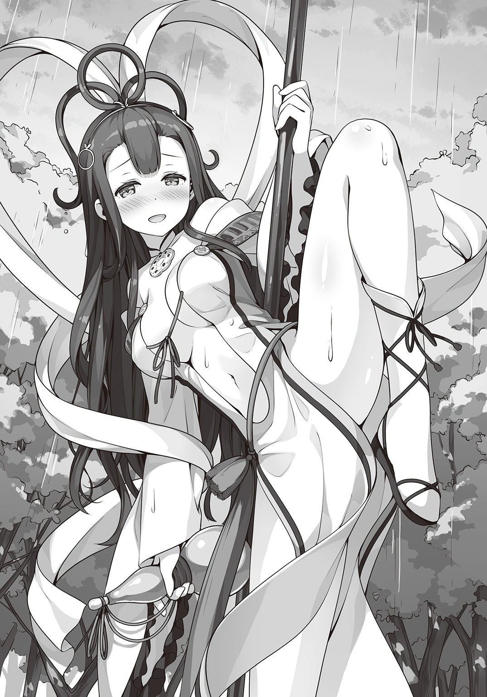
「私の〝酔八仙〟は大した魔法ではありません。理性を鈍らせ身体能力の枷を外すだけ。才能のない私にはその程度の魔法しか生み出せなかった。だから、代わりに私は武術の腕を磨いたのです。天才たちと戦うため。その至高の技をこの身で幾度となく受け止め最高の快楽を味わうために！」
シュエメイはふたたび瓢簞に口をつける。
「ああ......その太い銃身から放たれた黒くて固いモノが私の大事なところを貫く瞬間が待ち遠しい。だからもっと、もっとアガーテさん！」
鉄杖に頰を寄せ、豊満な胸に抱きしめ身体をすり寄せる。まるで愛おしいものでも撫でるような手つきだ。
アガーテは酔拳という武術があることを思い出していた。
酔っ払ったような動きで相手を惑わし、予測不可能な一撃を加える武術。
実際はフィクションに近いもので、とうてい実戦向きとは言えない。
だがシュエメイは僅かばかりの魔法と血の滲むような功夫で、それを現実のものとした。
事実その技はアガーテの未来予知すら超える域に到達していた。
アガーテは理解した。この女には確かに魔法の才能はない。だが、それも当然だ。魔法とは人の術なのだ。バケモノが使いこなせるはずがない。
八柱の巣に、獲物を誘い込み捕食する蜘蛛。好物は強い敵。
それがリ・シュエメイというメドヘンなのだ――と。
＊ ＊ ＊
私を乗せた玉板は軽快なスピードで尾根を下っていた。
ただ、ちょっとばかり軽快すぎるというか......うん、こんなに速いとは思ってませんでした！
作戦が上手くいったおかげで、私は見事に包囲網を脱出することに成功した。
シュエメイさんに借りたこの玉板も快調で、難なく海の祠まで辿り着けそうだ。
このまま何事もなく着いてほしい。私は祈るようにそう願った。
「え......あれって......」
ふと、玉板が岬の方へと進んでいることに気づく。どうやらこの玉板、ある程度の言うことは聞いてくれるものの基本的にはシュエメイさんが最初に命じたことを忠実に守るらしい。
その最初に命じたことというのが「最短最速で祠へ向かいなさい」だった。
なのに、玉板は直線上にある祠へ真っ直ぐ進まず、いったん迂回しようとしている。
いったいなぜ？ そう思った矢先に、私は気づいた。気づいてしまった。
「ちょ、ちょっと待ってそれはさすがに乱暴――」
そんな私の叫びは当然聞き入れてもらえず、玉板は岬の突端をカタパルトにして一気に海へとダイブした。
「うひょああああああっ！」
死ぬ！ 死んじゃう！
落下による無重力を感じたのも束の間、放物線を描いて玉板は海に着水した。
「あぶばぶああ!?」
落下の勢いで玉板と私は一度、海中へと沈んだ。
だけどすぐに、ちょうどジェットスキーがアクロバットをするように、海面へ飛び出す。
うう......水飲んじゃった......。
玉板はモーターボートのようにＶ字の波しぶきを上げて進みはじめる。
目的の祠がある小島があっという間に近づいてきた。
島に上陸すると、私は玉板を降りて自分の足で進みはじめた。
ゴツゴツとした黒い岩でできた小島は海底火山で隆起した地面によく似ていた。
島のサイズは学園のグラウンドよりも小さいので、すぐに祠まで辿り着けた。
祠といっても小さなお社が雨風を凌ぐくらいのサイズしかないが、中から微かに光が漏れている。
私はおそるおそる社の扉を開けた。
「ブンちゃん......」
いた。丸くなって眠っている。光はブンちゃんの身体から漏れたものだった。
「これで私たちの......」
勝ちだ。と、そう言おうとした瞬間、ブンちゃんを包んでいた光が爆発した。
「うきゃああああっ!?」
光に飲み込まれた私の意識はあっという間に途絶えた。
私はまた、夢の中にいた。
「準備はすべて整った。最後に我ら十三人がこの身を捧げることで儀式魔法ヘクセンナハトは完成する」
頭の上からあの人の声がする。
話していることはよく分からなかったけど、なぜだかとても悲しい気持ちになった。
「すまない、守鶴よ」
あの人の手が私の身体に触れる。繊細で優しい手つきに、どこか躊躇いを感じた。
「おまえが側にいてくれたおかげで、私はふたたび己の過ちと向き合うことができた。本当に感謝している。そして、おまえを置いて逝く私を許しておくれ」
眩しい光の中、私を見おろすあの人の顔が見えた。
ふたたび意識が戻ると、私は祠の前にしゃがみ込んでいた。
今なら分かる。あれはブンちゃんの記憶なのだと。
そして〝あの人〟というのはきっと――
「やっと、追いつきましたわ」
私はハッと振り返る。そこに静ちゃんがいた。
思っていたよりずっと早かった。それとも、私が夢を見ていた時間が長かったのだろうか。
「静ちゃん......カザンさんは？」
「今頃は、リンさんが相手をしているでしょう」
カザンさんでも二人まとめての足止めは苦しかったみたい。それでも充分に時間は作ってくれた。私はそれに応えなければいけない。
「静ちゃん！」
私はブンちゃんを庇うように静ちゃんの前に飛び出た。
「おどきなさい。わたくしが追いついた以上もう勝敗は決しました」
「そんなことない！ 私、まだ諦めてない！」
静ちゃんは深く溜息をつくと、
「契約者のいない『原書』は格好のエサです。放っておけばいずれ〝シミ〟に食われてしまいます。『原書』を食べた〝シミ〟は恐ろしい魔法獣となり今度はあらゆるものを喰らうのです。葉月さんも知っているでしょう」
「でも、だからって、ブンちゃんが消えてもいいなんて思えないよ」
「あれは疑似生物です。命があるわけでも、ましてや心が宿っているわけでもありません」
「ちがう、ちがうよ静ちゃん！ ブンちゃんにはちゃんと心が、どうしても叶えたい想いがあるんだよ！ だから――」
「これ以上言葉を重ねても仕方ありませんわ」
静ちゃんの鋭い声が私の言葉を遮った。
「あなたは戦って決めることを選んだからここにいるのでしょう。ならば、勝ってそれを証明してくださいませ」
静ちゃんと戦う――。
本当に？ 私はそれを望んでいるの？
私の逡巡を、静ちゃんは待ってはくれなかった。
静ちゃんの足下から五色の龍が姿を現す。
「お行きなさい――〝龍の顎〟」
「ダメ――！」
咄嗟に私は魔法のお城を喚び出して祠ごとブンちゃんを覆った。
巨大な龍が白亜の城にぶつかった。
凝縮された魔力と魔力がぶつかると、そこに激しいスパークが巻き起こった。
静ちゃんの放った龍は大きな顎でお城を嚙み砕こうとしてくる。
私はお城が崩れないように、必死に魔力をつぎ込んで抵抗する。
耐えても耐えても静ちゃんの容赦ない攻撃は止まらない。むしろどんどん苛烈になっていくような気がした。それはまるで、静ちゃんの怒りが込められているみたいだった。
「諦めなさい。わたくしには勝てません」
静ちゃんは感情のこもらない声で私に告げる。
ちがう。私は静ちゃんに勝ちたいわけじゃない。
ただ、知ってほしい。分かってほしい。
私の考えていること、感じてること。
私には、それを伝える魔法がある。
「お願い......『シンデレラ』......私に力を貸して......」
「葉月さん......あなた、まさか......！」
私がなにをしようとしているのか気づいた静ちゃんが顔色を変えた。
「おやめなさい！ その魔法は――」
ごめんね静ちゃん。約束を破ってばかりで。
でも――
「伝えて私の心――『ガラスの心』」
ありったけの想いを込めて、私は魔法を解き放った。
瞬間、お城は砕け散り、透明な花びらへと変わる。
花びらは風に乗り五色の龍をも飲み込んで、静ちゃんへと迫った。
「――――！」
私が作りだした想いの激流にさらされた静ちゃんは声にならない悲鳴をあげる。
どのくらいの時が経っただろう。
風が通り抜けた後、静ちゃんはその場に跪いたまましばらく動かなかった。
「あ......し、静ちゃん？」
さすがに心配になって、近づいて声をかけようとしたら――
「それだけ、ですか」
「え......」
「だから、葉月さんの言いたいこと、伝えたいことはこの程度なのかと聞いているのです」
「静ちゃん......どうして......!?」
『ガラスの心』の魔法は、確かに発動したはずなのに。
私の想いは静ちゃんに届かなかったの？
「おしまいです。こんな馬鹿げた戦いなど――」
「ダメ！」
私は走った。祠に向かい、いまだ眠ったままのブンちゃんを庇うように抱きしめる。
「おどきなさい。そんなことをしても無駄です。あなたが痛い思いをするだけですよ」
「やだ！ どかない！」
「この――！」
怒りに震える声。静ちゃんの手が上がる。
私は思わずギュッと眼を閉じる。
次の瞬間、私の身体を何かが貫いた。
「え......」
一瞬、自分がどうなったか分からなかった。
痛みよりも先にやってきたのは衝撃。次に、息が詰まるような感覚。
そして、私の腕の中で光になって消えていくブンちゃんの姿を見た。
「そん、な......」
そうして、ふたたび私の意識は途絶えた。
＊ ＊ ＊
アガーテは構えていた銃を下ろすとふっと息を吐く。
着弾を確認するまでもない。撃つ前からアガーテの〝眼〟には抱えていた疑似生物ごと背中を貫かれる鍵村葉月の姿が見えていた。
リ・シュエメイ相手に思いがけず苦戦を強いられ、つい七発目を使うはめになったのは想定外だったが、これで命じられた仕事はこなせた。
やるべきことはやった。
だが、このなんとも言えない後味の悪さはなんだ？
これまでもアガーテは命じられるままに仕事をこなしてきた。撃つ理由も対象にも疑問を感じたことなど一度もなかった。
なのに、身を挺して疑似生物を庇おうとした鍵村葉月の姿が頭から離れない。
その時、アガーテの視界にガラスの花びらが一枚飛び込んでくる。
「これは......」
咄嗟に受け止めようと手を伸ばす。
だが、花びらはアガーテの手に触れる前に溶けるように消えてしまう。
すぐに〝宴の地〟も光の粒子になって消え始めた。
戦いは終わったのだ。
終章 誰かの人生の物語
あの人がいなくなってどのくらいになるだろう。
最初のうちは泣いて過ごした。
実のところその頃の記憶は曖昧で、この悲しみと喪失感を埋める方法が分からないまま、ただただ伏せって泣いてを繰り返していたように思う。
とはいえ、生きていると腹は空く。獣の生活から遠く離れて久しい自分は森に帰るわけにもいかず、人の姿に化けて旅するようになった。
ある時、ひどく絶望した様子の商人に会った。
悪い連中に騙されて家財一切を奪われたというので、私は法術で高価な茶釜に化けてその連中を逆に騙してやった。手に入った金を商人にやるととても喜んでいた。
またある時、貧しい親子に会った。
同じ方法で金を稼いで親子にくれてやった。やはりたいそう喜んでいた。
だが、商人も親子もやがて私の前からいなくなった。
何度も何度も同じようなことがあった。
いつの間にやら十年、百年、千年と時が経ち、私は相変わらず一人ぼっちだった。
ある時、ふとしたことで助けた人間が偉い立場だったらしく、私に寺をくれると言った。
ここのところ旅暮らしが身体にこたえはじめていたので、ありがたく頂戴することにした。
そこで私は守鶴と名乗った。あの人がくれた名だ。大事な大事な名前だ。
だが、村人たちにそう呼ばれる度に私の中には喪失感が広がっていった。
あの人はなぜ私の前から姿を消したのだろう。千年考えても答えはまだ見つからない。
私は私のことについて本に記すことにした。
いなくなる直前に、あの人も同じようにしていたことを思い出したからだ。
同じ姿をして同じことをすれば、あの人が去った理由がわかるのではないか。
そう思い、これまでずっと生きてきた。
ここのところやけに身体が重くて、眠い。
気づけば一日中まどろみの中にいることもある。
そんな時、必ず見るのはあの人の夢だ。
夢の中で私はあの人の膝の上で丸くなっている。
そして夢から覚めると懐かしさで泣きたくなる。
会いたい。顔を見たい。あの人の声が聞きたい。
願っても願っても叶わない想いを誤魔化すように私はまた本を書く。
人ではない私の人生の物語を――。
目が覚めると、私は保健室のベッドの上だった。
すぐに胸の辺りをまさぐってみたけど、あるのは控えめな膨らみだけで、撃たれた傷は跡形もなかった。
「そっか......負けちゃったんだ」
口に出してみて、あらためて実感が湧いてくる。
私の想いは、言葉は、静ちゃんに届かなかった。
ベッドの上で後悔交じりにぼんやりと天井を見上げていると、隣から声がかかった。
「葉月さん、具合はいかがですか」
シュエメイさんだった。
「あ、はい......大丈夫です」
身体を起こそうとしたけど、なぜだか身体に力が入らなかった。
「ブーフ・ヒュレが壊れたせいですよ。しばらくすれば感覚が戻ってきます」
ベッドの上でジタバタしてみたけど無理だった。
素直にシュエメイさんの言葉に従うことにした。
ここにいるということは、シュエメイさんも私と同じようにやられちゃったということだ。
「すみません。アガーテさんを止めることができませんでした」
「や、やめてください。負けたのは私のせいですから。私が......」
私が最後まで静ちゃんと戦うことを躊躇っていたから。
あの時、私は勝つことよりも静ちゃんに認めてもらうことを優先した。
話せば分かる。それでもダメなら『ガラスの心』の魔法を使えば――そんなふうに考えていた。
それはひどく甘い考えで、なにより私には本気が足りなかった。
だから静ちゃんにも届かなかったんだ。
「少し安心しました。葉月さんはもっと自分を責めているのではないかと思っていましたから」
「えっと......そうですね。落ち込んでないわけじゃないです。悔しいって気持ちもあります」
少し前の私なら、きっととっくに諦めていただろう。
そうでなくても目の前の現実がつらくて、本の世界に逃げ込んでいたに違いない。
だけど――
「逃げないって決めたから」
「そうですか......」
私の言葉にシュエメイさんはふっと笑顔を見せる。
「それに、まだ終わってないです」
「終わって、いない......？」
私は〝それ〟を取り出してシュエメイさんに見せた。
「これは、まさか......」
最後の瞬間、私は砕け散ったブンちゃんの欠片を摑んでいた。
イチかバチかの賭けだったけど、なんとか上手くいったみたい。
「たったこれだけになっちゃいましたけど、ブンちゃんは消えてない。だから、諦めません」
逃げないと決めた私は図太く、そして思いっきり往生際が悪かった。
＊ ＊ ＊
「おめでとう、静君。きみたちの勝利だ」
〝宴の地〟から戻り、報告にやってきた静を学園長はそんな言葉で出迎えた。
「ありがとうございます。それで、あの......」
「葉月君なら保健室で休んでいる。安心したまえ、ピンピンしているよ。とはいえ、彼女にとってあちらでの〝死〟は初めてのことだ。念のための処置だ」
「そうですか......」
静は安堵して息を吐いた。
ブーフ・ヒュレがあるとはいえ自分の身体を銃弾が貫通する経験というのは相当ショッキングな出来事のはずだ。静も初めてあちらで〝死〟を迎えた時は何日も夢に見た。
「心配なら様子を見に行ってはどうかね」
「それはやめておきます。きっと今はお互いに顔を合わせづらいと思いますから。それよりもあの疑似生物はどうなったのでしょうか？」
「うむ。消滅と同時に本来の『原書』に戻ったよ。ただ、どうにも不安定なようで原書図書館へ収めるのはしばらく見送られることになった。さっそく合衆国政府から大使館経由で内々に『こちらに寄越せ』と要求が来ているよ。まったく困ったものだ。魔法使いは国同士の利害に関わらないという原則が通じないのだから」
過去の教訓からほとんどの魔法使いたちは一般社会からは姿を隠して生きている。
魔法使いの歴史からすればアメリカはかなり新しい国で、この〝過去の教訓〟という共通認識がなく、どうしても分かり合えないことが多かった。
「ドイツ校......いえ、十三人委員会はなにも言ってはこなかったのですか？」
「彼らは神聖な『原書』が獣の姿をしているというのが許せなかったのだよ。今は早く原書図書館に収めろ、でなければ廃棄しろとチクチク釘を刺してきているが、まあ知ったことではないさ」
アメリカ校は珍しい研究対象として、ドイツ校に裏から指示しているであろう十三人委員会の老人たちは出来損ないの『原書』として、あの疑似生物を見ていた。
結局、最後まであのタヌキに似た疑似生物を気にかけていたのは葉月ただひとりだった。
静はそのことを葉月らしいと思うと同時に、夢見がちな思考に苛立ちをおぼえた。
葉月さんは現実が見えていない。今回のことで、もっと目の前のことを直視できるようになってくれれば――
「わたくしはこれで失礼します」
「うむ、充分に骨休めしたまえ。次のヘクセンナハトも近いのだからな」
学園長の言う通りだ。今は早く次の戦いに気持ちを切り替えなければいけない。
静は軽く頭を下げると学園長室を後にした。
「あああああああああああっ！」
アメリカ校が滞在するトレーラーハウスにリン・デイヴスの絶叫が響く。
「ぶっ殺す！ 絶対！ 絶対！ 絶対に！ あたしの邪魔をしたこと後悔させてやる！」
とても聞くに堪えないような罵詈雑言をまき散らしながら、リンはあちこちを蹴りつける。
そんな様子をアンジェリーナがはらはらと見守っていた。
他の三人はというと、リンの癇癪には巻き込まれたくないとばかりに遠巻きにしている。
リンはそうやってしばらくあたりに怒りをぶつけてまわっていたが、唐突にふっと憑きものが落ちたかのように態度を変えた。
「ふぅ......。まあ、仲間のふりしてアガーテちゃんを後ろからズドンッ！ 作戦は失敗しちゃったけど、収穫がなかったわけじゃないわ」
そう言うと、リンは側に置いてあったタブレットで動画を再生させる。
それは、先ほどの戦いを録画したものだった。
映像ではシュエメイが一方的にアガーテを翻弄する様子が映し出されている。
「シュエメイちゃんもなかなか面白い隠し技を持ってるじゃない。なんて言ったかしら......」
「酔拳だよ」
答えたのは赤毛のドリューだ。ギークな彼女は古今東西のＢ級映画に詳しい。
「実に面妖な武術だ」と唸ったのはサムライのような格好のキャメロン。
「酔拳とポールダンスを組み合わせたまったく新しい武術。......うぷぷっ」
「あー、それなんのネタだっけ！ ここまで出かかってるんだけど！」
リューシーの軽口にギークなドリューが騒ぎだす。
「うっさいわよあんたたち。そのスイケンってやつ。なんであたしたちとの戦いでは使わなかったのかしらね。ま、今さらどーでもいいけど。それより重要なのはこっち」
リンが動画の再生バーをスライドさせて早送りにする。
それまで防戦一方だったアガーテが、不意に銃を構える。次の瞬間、シュエメイは地面に倒れ伏していた。決して場面が跳んでしまったわけではないのは確認済みだ。
つまり、アガーテがなにかしたとしか考えられなかった。
「......第七の魔弾。アガーテちゃんは確かにそう言ってた。もう、ただでさえ厄介なのにまだこんな奥の手を持ってるなんて、ほんとムカつく。キャメロン、とりあえず動画を解析して何が起こったか調べておいて」
無駄だとは思いつつも指示を出す。
「了解っと。てかさ、次の相手は日本校じゃないの。そっちはどーすんの？」
キャメロンの言葉をリンは鼻で笑う。
「もちろん考えてあるわ。アンジー」
「え、ええ......」
呼ばれたアンジェリーナはおそるおそる前に進み出ると、どこからともなく白くて大きな袋を取り出すと、中に腕を突っ込んで何かを探しはじめる。
原書『サンタクロース』の『固有魔法』――〝良い子への贈り物〟。
それは、リンの役に立つ何かをランダムで取り出すという魔法だった。
アンジェリーナ自身のためには使えず、取り出してみなければどういうものかも分からない。おまけに一度使用すれば次に使えるようになるまで数日から数ヵ月かかることもある。
だが、必ずリン・デイヴスにとって価値あるものが手に入る――そういう魔法だ。
「グズグズしないでよ。あんたそれしか取り得がないんだから」
「ご、ごめんなさい......あった」
アンジェリーナの手が何かを探り当てた。取り出した途端にリンに奪い取られてしまったが、どうやらそれは書類のようだった。
「報告書みたいね。学園長の指示で破棄することになってる。中身は......七年前の事件の？」
リンは書類に目を通していく。ふいに彼女の口もとに笑みが浮かぶ。
「ふふ......ふふふ......アハハハ！ これを見たら静ちゃんどんな顔をするかしら！ とーっても楽しみだわ！ アハハハハハハ！」
くるったように笑うリンを、アンジェリーナは不安げに見つめる。
やがてこの書類が静を、そして日本校を窮地に追い込むことになる――。
自分にリンの策略の魔の手が迫っていることなど知るよしもない静は、寮へ向かっていた。
足取りは重い。
その原因たる人物が玄関で待ち構えているのが見えて静は小さく溜息をついた。
「加澄さん。こんなところでなにをなさっているのですか？ そろそろ部屋に戻らないと白銀先生に叱られてしまいますわよ」
「結果、教えて」
静の忠告を無視して有子は尋ねる。
「わたくしたちが勝ちました。原書『分福茶釜』は近いうちに我が校の原書図書館に収められることになります」
「葉月とは、話した？」
「......いいえ。とくには」
静が答えると、有子は眉をしかめてあからさまに不機嫌になった。
そんな有子の態度に静もムッとする。
「言いたいことがあるならハッキリとおっしゃってはどうですか」
ここのところずっと有子からの何か言いたげな視線を感じていた。
静自身、忙しさを言い訳にして有子を避けていたのも事実だが、いい加減このあたりで決着をつけるべきだと思った。
「加澄さんはわたくしが間違っているとおっしゃりたいんですか？」
「違う。静は間違ってない」
「だったら――」
「でも、正しいとも思わない」
謎かけのような有子の言葉に、静は困惑する。
「葉月だってきっと分かってる。静の言う通りにした方がトラブルは少ないって。でも、そうしなかったのはなぜか、静はちゃんと考えた？」
「わたくしにどうしろと!? わざと負けて差し上げればよかったとでも!?」
「そうじゃない......そうじゃないよ静」
有子は激しく首を振った。
「静は正しいことに逃げてる。葉月と向き合おうとしてない」
「わたくしが逃げてる......？」
「義務とか責任とか、正しいとか間違ってるとか、そんなことどうでもいい。葉月と、ちゃんと話をした？ 言い争いになっても、最後までお互いに言いたいことを言った？」
「それは――」
「静、ちゃんと葉月と〝ケンカ〟をしなきゃ」
静はガツンと頭を殴られたような気分だった。
これがケンカだなんて、今の今まで考えたこともなかった。
ただ、『原書』に選ばれたメドヘンとしてすべきことをしているつもりだった。
自分とは違ってメドヘンの自覚が薄い葉月に呆れや怒りを感じつつも、感情的にならないように自分を抑えて接してきた。そのはずだった。
だけど、本当にそうだろうか？
この憤りは本当にそんな些末なところから来ているのだろうか？
あの時、最後まで葉月の言葉に耳を傾けなかったのはなぜ？
「わたくしは――」
「ここにいたか。土御門静」
静が一つの答えを口にしようとしたその時、背後から声がかかった。
振り返るとアガーテ・アーリアがそこに立っていた。
「アガーテさん......どうかなさったのですか？」
「『原書』『分福茶釜』が盗まれた」
「な――!?」
静は驚き、言葉を失った。そしてすぐに誰の仕業か見当がついた。
「まさか、葉月さんが!?」
アガーテは否定も肯定もせず続ける。
「『分福茶釜』は我々、ドイツ校の選手村で預かっていた。先ほどスタッフが数名気絶させられているのが発見され、確認してみたところ『原書』は何者かに持ち去られた後だった」
アガーテの淡々とした報告を聞きながら、静の胸に焦りと怒りがつのる。
葉月にはシュエメイやカザンという協力者がいる。そのくらいの無茶はやってのけると考えて警戒しておくべきだった。このことが十三人委員会に知られれば、葉月はどんな処分を受けるか分からない。『原書』を没収され、記憶も消されてあちらの世界に帰されるというのもありえた。
なにより問題なのは最初にこの事態に気づいたのがアガーテだということだ。
ドイツ校は十三人委員会の肝煎りで、様々な仕事をこなしている。
この件が報告されたなら――そこまで考えて、静はふとした疑問を抱く。
「アガーテさん......どうして、わたくしにこのことを？」
「事が公になれば不覚にも『原書』を盗まれたスタッフは責任を取らされるだろう。私にも『原書』を取り戻すという面倒な任務が与えられる。うん。とても面倒だ。明日はせっかくの自由時間で、私は東京観光を楽しみにしているというのに、だ」
静にもアガーテの言わんとするところがわかった。
「アガーテさんは、明日は何時頃に起きる予定ですの？」
「午前七時だ。その後、委員会への定例報告をする」
タイムリミットは明日の朝、午前七時。
それまでに葉月を見つけて連れ戻さなければならない。
だが、彼女はいったいどこへ向かったのか。
自宅に戻ってもすぐに見つかる。そのくらいは彼女も分かっているはず。
それに、今の葉月なら逃げるという選択はしない。ならば、どこへ......？
その時、静の脳裏に閃くものがあった。
「まさか、葉月さん......!?」
＊ ＊ ＊
自分がまさかこんな大胆な行動に出るとは思わなかった――
ドイツ校の宿舎から盗み出した『分福茶釜』を抱えて走りながら、私は私自身に驚いていた。
もちろん、鈍くさい私が一人でそんなことができるわけもなく、シュエランさんの変化術とシュエメイさんの中国雑技団もビックリなアクロバットに助けられたのだけど。
扉の間へとやってくると私はすぐに私たちの犯行がバレて見つかる前に操作盤に向かう。
繫げる先は東京駅だ。やり方はカザンさんが調べてくれた。
本当に、ここまでみんなに頼りっぱなしだ。私のワガママで自分勝手な行動に付き合ってもらって、感謝してもしきれない。
扉の操作を終えて顔を上げると、シュエランさんが声をかけてきた。
「本当に一人で行くのか？ なんならあたしの金斗雲で――」
「そんなことしたらシュエランさんたちが中国に帰れなくなっちゃうよ。それに......ここから先は私がひとりでやらなくちゃ」
ブンちゃんの遺したものをギュッと抱きしめて私は言った。
ちょうど、東京駅へと繫がる扉が私の前に降りてくる。
「葉月さん......お気をつけて」
「ありがとう。シュエメイさんも、探してる答え、見つかるといいねっ」
シュエメイさんとシュエランさんに別れを告げて、私は扉へと足を踏み入れた。
一瞬の浮遊感の直後、私は東京駅にいた。
「いけないいけない。これ被っておかないと」
姿隠しの魔法がかかったローブを被り直すと足早に歩き出す。
私が向かう先、それは熱海だ。
世界でもめずらしい龍穴がある街。そしてブンちゃんと出会った場所。
そこでなら欠片だけになってしまったブンちゃんを蘇らせることができるかもしれない。
ほとんど妄想に近い可能性だったけど、やらずに後悔するよりはずっといい。
ホームに滑り込んできたチンチン電車に乗り込むと自由席の車両へ向かう。
平日の夕方だからか電車の中はがらんとしていた。合宿の時とは大違いだ。
私は適当な窓際の席に腰を下ろすと、ふっと息をついた。
「待っててね......ブンちゃん」
電車はゆっくりと熱海に向けて動き出した。
一時間ほどうつらうつらと船を漕いでいるうちに、電車は無事に熱海に到着した。
その頃にはすっかり夜になっていた。人のいない駅を抜けて海岸へと向かう。
相変わらずの常夏だったけど、夜は幾分か涼しかった。
さあ、ここからどうやって龍穴まで行くかと、海を睨んで考えこんでいた時だった。
暗闇から静ちゃんが姿を見せたのは。
「静ちゃん！ ど、どうしてここに......!?」
「それはこちらのセリフです。こんなところで、いったい何をするおつもりなのですか？」
静ちゃんの口調は穏やかだった。だけど、すごく怒っていた。
「答えてください。『原書』を盗み出して大勢に迷惑をかけて、そこまでして何をしようというのですか？」
「それは......」
威圧感のある静ちゃんの視線に私は一瞬言葉に詰まる。
だけど、逃げちゃいけない。そう思った。
「私は、ブンちゃんを生き返らせたいの」
そう告げた瞬間、静ちゃんが息を飲むのがわかった。
「泰山府君って言うんでしょ？ もともとは死んだ人を生き返らせるために静ちゃんのご先祖様が作った魔法だって」
「どこでそれを......いえ、それよりも死者を生き返らせることは絶対にやってはいけない禁忌の魔法です。葉月さんも習ったでしょう」
「そんなこと分かってるよ！ でも、じゃあ、命を奪うのは悪いことじゃないの!?」
「何度もお伝えしているようにあなたの言う〝ブンちゃん〟は『原書』が生み出した疑似生物です。あなたに対する反応は『原書』が蓄えていた記録を再現しているだけにすぎません」
「そうかもしれない......そうかもしれないけど......でも心はある！」
「心......？」
「ブンちゃんの元になったのは守鶴っていう人なの。この『原書』にはその守鶴さんの人生が書かれてる。どんなふうに生きて、何を感じたか、好きなもの嫌いなもの、嬉しかったこと悲しかったこと――それはたった一人、世界で一番大好きな人に伝えるため。もう一度、ひと目でいいから会いたいっていう気持ちがブンちゃんを生み出したんだよ。そんな想いを、心を消してしまっていいはずがない！」
私はいつでも変身できるように『シンデレラ』を喚び出した。
「もう一度、わたくしと戦うおつもりですか」
「何度でも戦うよ。だって、逃げないって決めたから」
静ちゃんの眼がスッと細まる。お互いに覚悟が決まった瞬間だった。
「疾く、その力を我が身に宿したまえ......『かぐや姫』！」
「力を貸して――私の『シンデレラ』！」
静ちゃんが変身するのと、私の身体をブルーのドレスが覆うのは同時だった。
「お行きなさい――〝龍の顎〟」
静ちゃんは最初から全力だった。
私は、咄嗟にお城を喚び出してなんとか迫り来る五色の龍を防いだ。
だけどこれじゃあ前と同じだ。
静ちゃんは戦う人でも私はそうじゃない。真正面からぶつかっても勝つことはできない。
でも――勝てないなら負けなければいいんだ。
「お城は泡に！」
私の声で、ガラスのお城は風船みたいに膨らんでいく。
「そう何度も同じ手を食うと思いまして！ ――〝火鼠の皮衣〟！」
風船が弾けるのを警戒して、静ちゃんが火のマントで身体を覆う。
でも、今度の風船は弾けなかった。
マントの炎が上昇気流を生み、お城はふわりと宙に浮き上がる。固くすれば重くなり、柔らかくすれば軽くなる。だってお城というのは空を飛ぶものだ。
静ちゃんを眼下に残し、お城はぐんぐん上昇していく。
このまま風に乗って龍穴まで行くんだ。
「また非常識なことを！ ――〝龍の顎〟！」
静ちゃんはふたたび五色の龍を放つ。
だけど大きな龍が動けば風が起こり、風船はふわりと揺れて龍の攻撃をかわす。これこそ柔よく剛を制すっていうやつだ。
「でしたら網を用意するだけですわ。――〝蓬萊の玉の枝〟」
静ちゃんの足下から銀色の枝葉が溢れ出てくる。それは一気に上空まで伸びて私のお城を搦め捕る。まるで茨姫のお城のように、そこから動けなくなってしまった。
「今、そこから引きずり出して差し上げますわ」
そんな言葉の直後、銀の枝葉に鈴なりになっていた宝玉から一斉にレーザーが発射された。
「きゃああああっ！」
軽く柔らかくなっていた私のお城は鋭い光線に貫かれて一瞬で弾けて消えてしまう。
支えを失った私の身体は十メートル以上の高さから落下して地面にぶつかった。
もの凄く痛い。それでも、ブーフ・ヒュレがあるから骨が折れたりはしていなかった。
だから、まだ、私は......！
「なんて往生際の悪い......！」
バタバタと立ち上がって走り出した私を静ちゃんが追いかけてくる。
「お願い静ちゃん！ 私を行かせて！」
「嫌です！ 葉月さんこそ、逃げないと決めたのではなかったのですか!?」
「ちがうもん！ これは逃げないために逃げてるんだもん！」
「意味が分かりませんわよ!?」
静ちゃんと砂浜で追いかけっこ。いつだったか私が妄想した瞬間がそこにはあった。
でも、妄想の時とはぜんぜん気分が違う。
私が求めていたのはこんなのじゃない。
「どうして!? なんでそこまで私の邪魔をするの!?」
「そんなの決まっているではありませんか！ わたくしは――」
逃げ足だけには自信があったはずなのにどうしてか追いつかれてしまう。
私が無意識に逃げたくないと思っているのか、それとも静ちゃんがそれだけ必死なのか――
静ちゃんの手が、私のドレスを摑んだ。
「きゃっ！」
私たちはもつれ合いながら砂浜に転がった。
「やっと......捕まえましたわ」
私に馬乗りになりながら、静ちゃんは荒い息を飲み込むようにして言った。
「静ちゃん......どうして......」
どうして私を止めるの？
どうして邪魔をするの？
どうして、どうして......
「あなたが好きだからです」
「へ......」
静ちゃんの口から飛び出した言葉に、私は一瞬キョトンとする。
でも、すぐに意味に気づいて私は慌てた。
「へ、えっ、あ、あう......!?」
顔が熱い。ドキドキして静ちゃんの顔をまともに見られない。
だって、こんなの不意打ちすぎるよ！
それでも「好きだ」と言ってくれたその人の顔が見たくて、私は指の隙間からおそるおそる静ちゃんの様子をうかがう。静ちゃんは泣いていた。
「し、静ちゃん!? ど、どど、どうして泣いてるの!?」
「うっ......くっ......」
静ちゃんの口から嗚咽が零れる。
私はどうしていいか分からず狼狽えるばかりだった。
「どうしてあなたはいつも無茶ばかりするんですか。わたくしがどれだけ忠告してもあなたは目の前の誰かを助けようとする。普段は臆病なくせにそういう時だけは平気で自分の身を危険に晒すのです。おかしいです。矛盾してます。わたくしにはちっとも理解できません」
静ちゃんの独白は続いた。
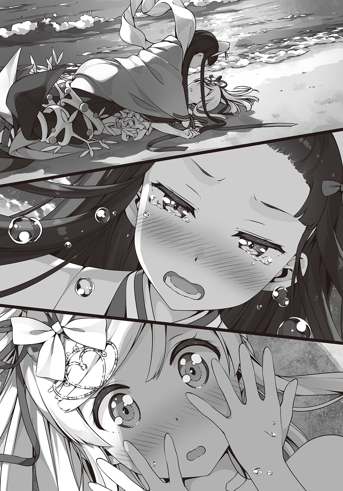
ヘクセンナハトで、先日の戦いで、私がどれほど心配をかけていたかを思い知った。
私はバカだ。本で読んだような正義感や優しさがとても一方通行なものだということに、今の今まで、気づいていなかった。
こうして私を心配して泣いてくれる人が目の前に現れるまで――
「会えなければ寂しい。なのに一緒にいると心配で胸が張り裂けそうになる......わたくしはもうどうしたらいいか分かりません......」
静ちゃんがこんなふうに弱音を吐くのを初めて見た。
強いように見えて、本当はずっといろんなことを抱えて耐えて我慢してきたのだろう。
今、私にできるのはただ黙ってそれを受け止めることだけだった。
どのくらいの時間が経っただろう。
私たちはもう戦うこともなく、並んで座って海の方を眺めていた。
「静ちゃん......ごめんね」
「もう、いいのです。わたくしも、ちゃんと思っていることを伝えるべきでした」
涙は止まったものの、静ちゃんはまだ少し目が赤かった。
「でも、一つだけ......これだけは言っておかないといけません」
「へ？ な、なにかな......」
「困ったことや悩んでることがあったら、まずはわたくしに相談してくださいませ。シュエメイさんでもカザンさんでもなく、わたくしにです」
「うん、そうする」
これからはもっといろんなことを話そう。
くだらないことでもいい。大したことじゃなくてもかまわない。
そうやってちょっとずつお互いのことを知っていけば、今日みたいに静ちゃんを泣かせてしまうようなことにならないはずだ。
「さて、問題はその〝それ〟ですわね」
あらためて、静ちゃんが私の持ってる原書『分福茶釜』を見て言った。
「やっぱり、生き返らせるのは無理なのかな？」
「確かに、泰山府君の祭りは死んだ者を蘇らせるために作られた魔術儀式だと言われています。時間を遡って死んだという事実をなかったことにする。自分の先祖ながらとんでもないことを考えるものです。ですが、それは大きな過ちであったとご先祖様自ら書き残しています」
「過ち......？」
「具体的なことは分かりません。ご先祖様が実際に死者を蘇らせたのか、それとも泰山府君の祭りでも不可能だったのか......。いずれにせよ、蘇生魔法は今では禁忌中の禁忌とされていますから確かめようがありません」
静ちゃんのご先祖様――ブンちゃんのご主人様であった人がそれほどまでして遂げようとした想いは、もう一度会いたかったのは、いったいどういう人だったのだろう。
家族かそれとも恋人か......想像するだけで物語が一つ出来上がりそうだ。
危うく妄想に囚われそうだったけど、今は自重した。
だって、私の手にはもう一つ大切な想いがあるのだから。
「じゃあ、ブンちゃんの想いはもう届かないんだね......」
「いくら葉月さんの魔法でも、さすがに千五百年前に亡くなった方を相手には......」
「千五百年前......」
ふと、私の頭に一つのアイディアが閃いた。
いつも非常識な妄想ばかりしてる私自身ですら思いついた時には「いやいや、ありえないって」とセルフツッコミをかましそうになった。
でも、もしもそれが可能だとしたら――
「静ちゃん、あの、これかちょっと変なことを言うんだけど、できたらバカにしないで聞いてほしいなって......」
「なんですの？ わたくし葉月さんをバカにしたりはしませんわ」
少しふてくされたように静ちゃんは頰を膨らませる。
「あのね――」
「葉月さんは大バカですわ！」
海に浮かぶ小島に静ちゃんの声が響いた。
ちなみにバカと言われたのは今日だけでもう三回目だ。
「もう、バカにしないって約束したのに」
私は思わず抗議する。だけど静ちゃんの機嫌はおさまらない。
「いったいどんな発想をしたら魔法で千五百年前にメッセージを届けるなんてことを思いつくのですか......」
静ちゃんはすっかり呆れてしまっていた。
私が思いついた方法。それは、時間と空間を操るという泰山府君の祭りと私の『ガラスの心』を組み合わせてブンちゃんの心を静ちゃんのご先祖様に届けるというものだった。
「確かに、そういった魔法は禁じられていません。そもそもそんな非常識なこと、誰にもできるわけがないのですから禁じるもなにもありませんが」
「そうかなぁ。タイムスリップネタはＳＦ小説とかじゃ定番中の定番なんだけど」
しかも過去に遡るといっても身体ごとじゃないし。......あれ？ でも、もしかしてこれだけでもタイムパラドックスみたいなのが起きたりするのかな？
ＳＦは嗜んでも物理や数学は苦手な私にはよく分からない。
まあいいや。考えても仕方ない。だって誰もやったことがないんだから。
文句を言いつつも静ちゃんが全面的に手伝ってくれるのだから、とにかくやってみよう。
「準備できましたわ」
祭壇の準備を整えた静ちゃんが私に告げる。
「うん。やろう」
私はうなずいて返すと、注連縄で囲われた中に足を踏み入れた。
ちなみに儀式はもうとっくに始まっている。
今、この注連縄で囲われた場所は龍脈と接続されているのだそうだ。
確かに足を踏み入れると、不思議な力の奔流を感じた。
それはたぶん龍脈の力だけじゃなくて、静ちゃんと一緒だからだ。
「祓え給え 清め給えと申す事を......」
静ちゃんが大幤を左右に大きく振りながら祝詞を唱えていく。何度も何度もそれを繰り返していくうちに、小島が小刻みに震動をはじめる。
足下から光が立ち上り始める。それがだんだんと強くなっていくのが分かった。
「畏み畏み申す......」
静ちゃんの祝詞が終わった。
さっきまでの不穏な震動はウソのようにおさまり、代わりに注連縄で区切られたところから外の景色が歪んで見えるようになっていた。
「今、ここは時間と空間が揺らいでいます。本来の儀式ではこの状態から望む事象をたぐりよせます。分かりやすく言えば飴細工のようなものですね。温めて柔らかくなっているうちに好きな形に整えたり、切り分けてしまったりするのです」
「じゃあ、今なら千五百年前にも繫がる？」
「分かりません。正直、いったいどれほどの魔力が必要になるのか。そもそも人の身でそれが可能なのか......。やめるなら今のうちですわよ」
「ううん。やる」
「ほんとに、あなたという人は......」
静ちゃんは諦めたように溜息をつくと、私に右手を差し出す。
「えっと......？」
「一人では行かせません。わたくしもお手伝いします」
「うん！」
静ちゃんと手を繫ぐ。触れ合った部分から彼女の温もりが伝わってくる。
勇気が湧いた。今ならなんでもできるような気がする。
私はブンちゃんの欠片を空にかざす。
「『ガラスの心』」
どうか、どうかブンちゃんの心があの人に届きますように――
そんな願いを込めて私は魔法を解き放った。
エピローグ
その日、私はとてつもなく緊張していた。
朝から何度も部屋を掃除して、シャワーも二回浴びた。
お菓子のストックは充分か何度も確かめて、本棚にはおすすめの本を見やすい段に並べ替えた。
それでも、まだ不安だ。
「ああっ！ やっぱりなにか忘れてる気がする!?」
私がリビングを行ったり来たりしていると、ついに見かねた冴子さんが大きな溜息をつきながら声をかけてくる。
「いい加減に落ち着きなさい。動物園のライオンじゃないんだから」
「で、でもぉ......」
「葉月はライオンっていうよりカピバラとかアライグマよね」
と、今度は美沙さん。さっきまでベランダで彼氏さんと電話をしていたはずなのにいつの間に戻ってきたのだろう。いや、そんなことよりも、だ。
「ねえねえ、私の髪、変じゃないかな？ なんかいつもみたいに結べてない気がするの」
「別に、いつもと同じよ」
「ほんとに？ ほんとに変じゃない!?」
私があまりにしつこいので、だんだん美沙さんの目がつり上がっていく。
「ああ、もう！ さっきさんざん見てやったでしょーが！ 枝毛も切ってブローもしてあげたのはアタシだっつーの！ なに？ そんなに信用できないわけ!?」
「うう......ごめんなさい。とっても頼りにしております......」
平身低頭謝ると、美沙さんは「最初からそう言えばいいのよ」と私の鼻を摘まんでぐにぐにいじくる。ただでさえ低い鼻が大変なことになってしまう。
二人の言うとおり、私が檻の中の動物状態なのにはもちろん理由がある。
それは、今日は静ちゃんが遊びに来るのだ。
ていうか、ぼっち歴＝年齢の私にとっては初めて家に友達がやってくるという快挙なのだ。
落ち着かなくなるのも仕方ないというものではないだろうか。
「ったく、彼氏を連れてくるからって浮かれすぎなのよ」
「だ、だからそんなのじゃないって。友達。今日来るのは友達なのっ」
私が言っても美沙さんは「はいはい」と適当に流してちっとも信じてくれない。
「ていうか、美沙さん今日はデートじゃなかったの？ なんでまだ家にいるの？」
「もちろん、あんたの彼氏を見るために時間を変更したに決まってるじゃない」
うう......そこまでするか。
ていうか彼氏じゃないし。
「美沙、からかうのはやめてあげなさい。それでお相手はどういう方なの？ 保護者としてはちゃんと知っておくべきじゃないかしら」
「けっこういいところの子らしいわよ」
「冴子さん！ 美沙さん！」
私が叫んだちょうどその時、〝ピンポーン〟とインターホンが鳴った。
「き、きき、来た！」
私は大急ぎでエントランスのドアを開ける。
モニターでお話しするような余裕はこれっぽっちもなかった。
それからすぐに玄関に向かうと、静ちゃんが来るのを今か今かと待ち構えた。
「気が早いわねぇ。ここ十八階なのよ」
「いいの。リビングにいても落ち着かないから。それより、どうして二人してついてくるの」
「あら、お客様にご挨拶するのは当然じゃない」
私の後ろで待ち構えて期待するようにソワソワしている二人を半眼で睨む。
こうして見ると、見た目も中身も本当によく似た母娘だ。
しばらくして、もう一度インターホンが鳴る。私は大急ぎで玄関を開けた。
「静ちゃん、いらっしゃい！」
静ちゃんは目を丸くしていた。
どうやら私のテンションが高すぎてビックリしてしまったらしい。
あとはまあ、こんなに大人数で出迎えられるとは思ってもみなかったのだろう。
だけどさすがは静ちゃんすぐに気を取り直して、
「本日はお招きいただきありがとうございます。これは、京都の実家から送らせたものです。皆様のお口に合えば良いのですが」
「あらまあ、これはこれはご丁寧に......」
冴子さんは静ちゃんの上品な応対にちょっと驚きながら菓子折りを受け取った。
「ちょっと葉月っ、女の子じゃない！ それもすっごい美少女っ」
「だから、最初から友達だって言ってるでしょ」
後ろから小声で耳打ちしてくる美沙さんを適当にあしらい、あらためて静ちゃんに向き直る。
「じゃあ、私の部屋に行こっか」
「ええ、そういたしましょう」
まだ呆然としたままの冴子さんと美沙さんの横をすり抜けるようにして、私たちは部屋に逃げ込むのだった。
「ど、どどど、どうぞ好きなとこに座って！」
完全に挙動不審な私が席を勧めると、静ちゃんはあらかじめ用意しておいた座布団の上に座った。それから物珍しそうにあちこち眺めては「はー」とか「まあ」とか声をあげる。
「な、なにもない部屋だけど自分の家だと思ってくつろいでくれていいからねっ。気になった本があれば読んでくれていいしお菓子にジュースだってたくさん買ってあるから。あとは空気清浄機に美沙さんに借りたアロマディフューザーも。寒かったら膝掛けもあるよ！」
「いえ、お気遣いなく。すみません。不躾に見てしまって。同年代の女の子の部屋に入るのはこれが初めてなので、つい......」
「いいんだよ。ぜんぜん、気にしてないから」
うわー、私の部屋に静ちゃんがいる......。
私は今、ものすごく感動してる。
「そ、それじゃあさっそくはじめようか！」
「え、ええ......」
私が言うと、静ちゃんは少し戸惑いながらテーブルの上に小さな端末を出す。
今日の主旨は「静ちゃんにスマホの使い方を教える」だ。
ＬＩＮＥのＩＤも交換して、これからはいつでもお話しできるようになるはず。
「わたくし、本当にこういった機械は苦手で。どうか笑わないで子供に教えるつもりでご教示願いますわ」
「任せて！ 帰る頃にはスマホなしではいられない身体にしてあげるから！」
「いえ、あの......普通に使えるようになるだけで充分です」
「そ、そっか。そうだよね......」
テンションが上がりすぎて自分でもよく分からないことを言っていた。
いったんお茶を飲んで落ち着いてから、スマホのレクチャーをはじめた。
これまでずっとガラケーだったので、ボタンのないタッチパネルの使い方でいきなり躓いたりはしたものの、なんとかそれも乗り越えて通話とＬＩＮＥくらいは使えるようになったところで遅めの昼食をとることにした。
ちなみに、メニューは静ちゃんの要望でちょっぴりお高いお店のハンバーガーだ。その分、配達もしてくれたので、こうして部屋で静ちゃんと一緒に食べられる。
「そういえば、あれから何か変わったことはあった？」
食べ終わったところで、私は静ちゃんに切り出した。
あれから、というのはもちろん熱海の夜でのことだ。
あの日、学園に戻った私たちはアガーテさんに『原書』『分福茶釜』を渡した。
アガーテさんは『原書』を盗み出したこともスタッフを気絶させたこともすべてなかったことにしてくれた。その時に気づいたのだけど、私と静ちゃん以外の記憶からブンちゃんのことがきれいさっぱり消えていた。
守鶴さんと静ちゃんのご先祖様の人生になんらかの変化があって、守鶴さんは心残りのない幸せな人生をおくったからだと、私たちは思うことにした。
「わたくしの方には何も変わったことはありません。門限破りで初めて白銀先生に叱られたくらいです」
静ちゃんは笑って言った。
ちょっとだけモヤモヤするけれど、こればっかりは仕方ない。
あんな魔法が成功しただけでも良かったと思うしかないだろう。
残ったジュースを飲み終えて、テーブルの上のゴミを片付けている時だった。静ちゃんのスマホに見覚えのあるストラップがついていることに気づいた。
「静ちゃん、それ新しいのにつけ変えたんだ」
「ええ、私にとっては数少ない母の思い出ですから」
静ちゃんが懐かしそうにストラップの飾りを触っていた時だった。
突然、私と静ちゃん二人だけのグループに新しいＩＤが加わった。
「あら、これはどなたでしょう？」
「さあ......っていうか、ちょっと待って。グループって私たちが承認しないと普通は入れないはずなんだけど......」
そうやって首を傾げていると、謎のＩＤは一方的にメッセージを送りはじめる。
しかもやたらと古い言葉遣いだ。私にはいまいち内容が分からなかったので、静ちゃんが代わりに読んでくれることになった。
「ええと......〝千年の後に読まれることを願ってここに文をしたためた。守鶴の魂を解放してくれたことに感謝を〟だそうですわ」
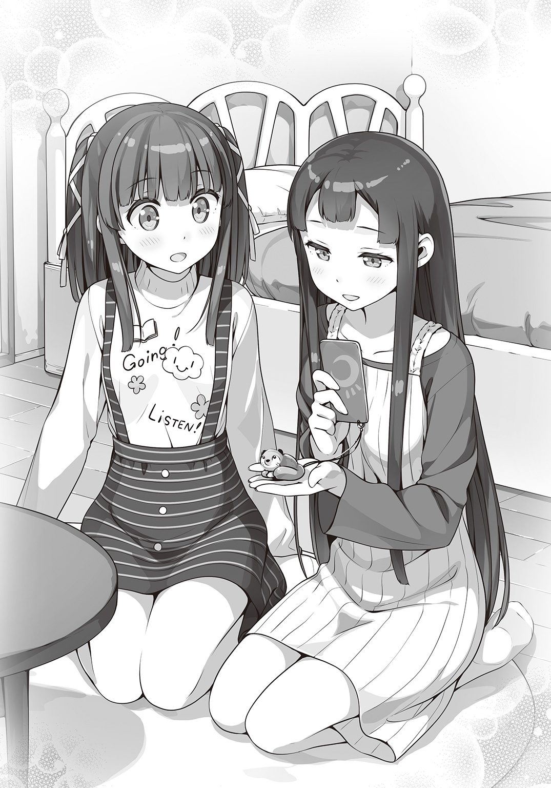
読み終えた後、私も静ちゃんも一瞬なんのことか分からなかった。
だけど――
「こ、これってもしかして」
「え、ええ......おそらく、ご先祖様がメッセージを送ってきたのですわ。千五百年前から、わたくしたちと同じ方法で......」
信じられない。だけど、そうとしか考えられない。
「ね、ねえ、静ちゃんのストラップが......」
「え......」
静ちゃんの狸をかたどった根付が淡い光を放っていた。
するともう一つ、新しいメッセージが届く。
〝想いを遂げた魂は、新たな主のもとへ帰るため消えることなく現世に留まった。どうか可愛がってやってほしい〟
根付が眩しい光を放ちながらそのかたちを変えていく。
古い器物には魂が宿るという。千五百年の間眠っていたその魂は今、やっと目を覚ました。
長い長い時を超えて戻ってきたその子にかけるべき言葉はきっと一つしかない。
「おかえりなさい、ブンちゃん！」
あ と が き
アニメ・プロジェクト始動です。
この先は小説とアニメが互いに肩を組んで『メルへン・メドヘン』という物語を作っていくことになります。
故・松智洋先生と共に本作の世界を作ってきたStoryWorksは、引き続き小説とアニメの両方に関わっていきます。読者の皆様、そしてアニメ・プロジェクトを機に『メルへン・メドヘン』を手に取ってくださった方々、どうぞよろしくお願いします。
アニメの他にもいろいろと準備していますが、そちらはまたいずれ。
さて、葉月と静の物語はここからさらなる佳境へと入っていきます。
これまでは葉月の片想い気味でしたが、静だって負けてはいられません。
それでは――次巻も楽しんでいただければこれにまさる幸せはありません。
門田祐一（StoryWorks）
著者紹介
松 智洋／StoryWorks まつ ともひろ すとーりーわーくす
松先生が作ったStoryWorksは15年目を迎えようとしています。
ゲーム、マンガ、小説、そしてアニメーション。
これからもあらゆる「ものがたり」を、作っていきます。
StoryWorksの門田祐一
illustration
カントク かんとく
３月26日生まれ、牡羊座のＢ型。
風邪を引いてる時の方がいい感じに雑念が消えて仕事に集中できます。38度くらいが丁度いいです。
ダッシュエックス文庫DIGITAL
メルヘン・メドヘン２
著者 松 智洋／StoryWorks
© TOMOHIRO MATSU/StoryWorks 2017
２０１７年８月31日発行
この電子書籍は、ダッシュエックス文庫「メルヘン・メドヘン２」
２０１７年７月30日発行の第１刷を底本としています。
発行者 鈴木晴彦
発行所 株式会社 集英社
〒１０１－８０５０
東京都千代田区一ツ橋２丁目５番10号
０３－３２３０－６０８０（読者係）
制作所 株式会社ＩＣＥ
本作品の全部または一部を無断で複製、転載、改竄、インターネット上に掲載すること、および有償無償に関わらず、本データを第三者に譲渡することを禁じます。なお個人利用の目的であっても、コピーガードを解除しての複製は、法律で禁じられています。